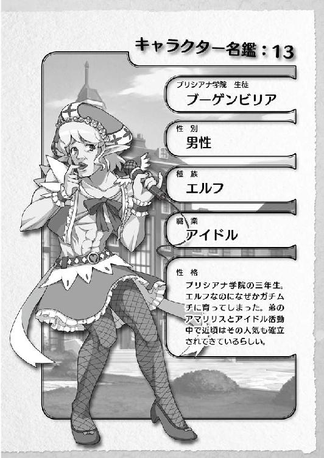

| 桜ノ杜ぶんこ 剣と魔法と学園モノ。Lv.3 一目惚れは誘拐と共に！！ | |
| 佐山操 | |
| (2013) | |
桜ノ杜ぶんこ
剣と魔法と学園モノ。Lv.3
一目惚れは誘拐と共に!!
佐山 操

＃01 ドラッケン学園校門前
ヒソヒソヒソ──
「ふわあぁぁあああああぁぁぁぁあぁあぁっ......むにゃ」
あくびをしながらいつも通りに学生寮から登校してきたヴィントの周りでは、最近ヒソヒソと噂話が絶えなかった......。
＃02 ドラッケン学園廊下
ドラッケン学園の通用口から廊下に入った所でも......。
ヒソヒソヒソ──
＃03 ドラッケン学園体育館
授業中の体育館の中で、ヴィントが団体競技に交じって身体を動かしていても......。
ヒソヒソヒソ──
＃04 ドラッケン学園学食
昼休みに学食にきて、情けない顔をしてラーメンをズズズとすすっていても......。
ヒソヒソヒソ──
＃05 ドラッケン学園教室
大切なはずの座学で、机に突っ伏して寝こけていても......。
「ＺＺｚＺｚｚ......」
ヒソヒソヒソ──
いかん、このままじゃ手抜き文章と思われてしまう！
ということで、噂話をしている女子学生たちにカメラをズーム・イン！
＃06 ドラッケン学園廊下
ヒソヒソヒソ──
学園の廊下をノソノソと歩いているヴィントをコソコソと盗み見ながら、女子学生たちが噂話に花を咲かせていた。
「本当にあのヴィント君が、〝あの〟ヴィントホーゼ・シャルラハロート様なの？」
「どう見ても......ゴミク......じゃなかった、オチコボレの学生よねぇ」
彼女たちは、どうやらヴィントが国王陛下に勲章を授与されたヴィントホーゼ・シャルラハロートなのかどうか、様子を窺っているようだ。
まぁ、彼女たちが伝え聞くヴィントの英雄譚が非常にいい感じに吟遊詩人たちの手で脚色されているものだから、その伝え聞くものと現実のヴィントとの間に雲泥の差があり、どうにも信じられないものとなっていた。
だいたい、吟遊詩人なんて伝え聞いたものを、おもしろおかしく脚色してテキトーにくっちゃべっているドコかのテレビ局みたいなものなんだけど、娯楽が少ないこの手のファンタジー世界では非常に重要な情報源となっている。
そして今、旬の吟遊詩人が歌うネタは、当然のことながらヴィントのお話だった。
まぁ、吟遊詩人だけではなく、物語をおもしろおかしく語って聞かせる弁士やら、果てはバザールの天幕で行われる舞台劇や、町角で語られる人形劇にいたるまで、ドコもかしこもヴィントをネタにしたお話であふれていた。
まさにヴィント的には、俺様の時代がやってキタアアアアアアアアアッ！ という感じであるはずだった。
仲間を守るために、ただ一人身を挺して戦い捕らえられた『出発譚』。
あの『絶対防衛脱獄不可能』と謳われた監獄島からの『脱出譚』。
そして、天翔る技をもって監獄島からスノードロップに立ち返った『海洋冒険譚』。
さらに最終決戦とも言えるスノードロップを駆け抜けた『雪原譚』。
これら四部をひとくくりにして、ヴィントがひじょーにカッコよく書かれた冒険譚が、様々な場所で多少の脚色が加えられて差別化をはかられながら、本人の許可なしに講演されていた。
そう、すでにヴィントホーゼ・シャルラハロートの名前は、本人の手から瞬く間に離れて、偶像化されつつあった。
庶民から考えたら信じられないオチコボレというどん底からのサクセス・ストーリーだし、それが現実に今なお起り続いている生きた伝説ものなのだから、他人事であっても我が事のように楽しくて仕方がない。ヴィントホーゼ・シャルラハロートに関係する講演をすれば、庶民が集まってくるというヴィント・スパイラルで良好な経済効果を発揮していた。
しかし、シリーズ二巻目にして一躍時の人となったはずのヴィントは、相変わらず鼻くそをほじほじしながら、他人事のようにその様子を眺め、時には本人の冒険であるにもかかわらず、その講演を聴いては爆笑して楽しんでいた。
なんと言っても脚色の嵐で、本人がしたこともないような冒険まで加えられているのである。そうなると本当に他人事。ヴィント的にも楽しくて仕方がなかった。
ちなみに一生懸命に○×を繰り返しながらも、あと一歩という所で最強数値を取り逃してザンネンな能力値でヴィントを産み落とした彼の母親は、とある出版社から『私はこうして英雄的息子を育てた』という本をいつの間にか書いて出版していた。
すでに売り上げが三〇万部を突破しているという羨ましい限りの冊数であり、彼女的にはようやく報われた気分だった。
そんな感じだから、今まで目の端に映るゴミとか、どうでもいいオチコボレと思われていたヴィントに、全校の学生たちの視線が注がれるようになったのである。
当然、入試の時からヴィントと行動を共にしてきたエルトたちとしては、ちょっとの間だけは鼻高々な気分だった。
内容はどうあれ、あのヴィントがこうも注目されているのである。
入学以降、オチコボレだのゴクツブシだのと散々ないわれ方をしてきたのだから、なんというか、実母以上にようやく報われた母親の気分という感じ？
とにかく、そんな感じで嬉しい思いもできたのだった。
最初の頃は......だったが......。
途中から段々と彼女たちの感情が変わってきたのは、周りの学生たちが噂話から行動に移ってきたためだった。
まず、この時点でのヴィントのソーシャル・データを見てみよう。
☆ 学園始まって以来の入試ドラゴンスレイヤー称号持ち入学者。
☆ 世界最初の監獄島シュタインズ・べルグ刑務所の脱走者。
☆ シュタインズ・べルグからスノードロップまでの非公式遠泳最短記録保持者。
☆ そして、ノイツェハイム殊勲十字章という栄誉ある勲章の最年少受賞者だった。
三番目の『非公式・遠泳最短記録保持者』という笑える謎めいたソーシャル・データは、海賊実習船に救助されたことが記録に残されていなかったせいで作られたものだった。
モーディアルの海賊船は非公式船舶のために記録に残すことができない。
さらに、ヴィントの活躍を面白がった学生たちが一切口外しなかったために、和国の英雄ヒデヨシの《大返し》よろしく、謎の単独移動となっており、その結果、吟遊詩人たちは一二〇キロほどの距離をたった三日間で泳ぎきったと吟じたのである。
この異様なトンデモ展開に笑ったヴィント自身はこれを否定も肯定もしなかったために、話はドンドンエスカレートして、泳げないならサメを手懐けてそれにまたがって海を渡っただの、海魔クラーケンを従わせただのと、いかにももっともらしい話がドンドコ追加されていった。
これらは、絶対脱走不可能と銘打ったシュタインズ・べルグ刑務所が、その島の周辺に巨大なサメやクラーケンを飼育していると公開していたこと。
さらに、ヴィント脱走当初のシュタインズ・べルグ刑務所の公式見解が『脱走者ヴィントはサメ飼育海域で消息不明。海魔かサメに食われたと思われる』だったことに起因する。
そして最後の栄誉勲章だが──
学生の身で殊勲十字章を受賞した者は、王国始まって以来の快挙だった。
これだけの肩書き持ちで、さらに独身で公式に付き合っている女性は一人もいないとくれば、当然、女の子たちが色めき立つのも無理はないだろう。
これほど美味しい物件（男）は、草食男子全盛期の現在だとまったくないに等しいものだった。
この独身で付き合っている娘はいないという情報は、もちろんエルトたちのミスから発したものだった。
噂話が出回りだした頃、さり気なく質問してきた女子学生たちがいた。
「エルトって、ヴィント君と付き合っているの？」
と──
当然、エルトは内心ではどうあれ、こう答えた。
「まっさかぁ。まぁ、保護者みたいなもんかな？」
「じゃあ、シュテルとミーナのどっちかが付き合っているの？」
「全然。あたし的には......そうだな。ちょうどいいオモチャ......かな？」
「ウチは狙ってもええんやけどなぁ。まぁ、パーティ・リーダーやしなぁ」
みんな素直じゃなかった。
その結果、ヴィントは狙い目の最高物件と化したのである。
あわてたエルトたちはターゲット・ロックオンしようとする女子学生たちを引き留めようと必死になった。
「あ、あいつはそーとーなバカだよ！ あんな、歌劇とかみたいなカッコイイ男じゃないんだよ!?」
「エルトなにを言うの？ あたしたちだって学園のヴィント君の姿を見ているのよ？ 劇や吟遊詩人の言葉通りじゃないことくらい理解しているわ！」
「そ、そうよね......」
「大昔からこんな格言があるのはご存じ？ そう『亭主元気で留守がいい』って」
「え？ えええっ!?」
「ヴィント君がどれほどバカでもアホでも、冒険者をして稼いできてくれるならそれでいいのよ！ さらにこのまま進めばセレブ入りは確実だわ！ ヴィント君をモノにすれば、お金も名誉も獲得できるのよっ!!」
「ええええええええええええええっ!!」
女はやっぱり怖かった。
そんな飢えた〝肉食女〟と化した女子学生たちばかりだとはつゆ知らず、突然自分の周りに女の子たちが寄ってきてアプローチをかけてくることにヴィントは戸惑いながらも、人生初のモテキ到来とばかりに心底嬉しがっていた。
廊下の角を曲がると駆けてきた（待ち構えていた）女子学生にぶつかったり。
家庭科実習（正式名称は野営地糧食調理実習）で焼いたクッキーをもらったり。
寮まで一緒に帰ろうと校門の前で待ち伏せされたり。
朝の登校中に（落ちないように加工された）食パンをくわえた女子学生にぶつかったり。
コンビニでお菓子を買おうとすると、（狙い澄ましていた）女子学生の手と触れあってしまったり。
そんな、現実では早々あり得ないマンガチック、あるいはジャパニメーションチックな展開がヴィントの身の回りで頻発するようになっていたのである。
まさに、我が世の春・到・来ッ!!
これを楽しまずになにを楽しむのだとばかりに、まったくもって空気を読まないヴィントはエルトたちの気を揉ませ、苛立たせていた。
しかし、ヴィントもヴィントなので、肝心な所ではまったく男気を振るうことなく、自分から女の子に声をかけられず、彼女たちから声をかけてもらうのを待ちの姿勢という、相変わらずのヘタレっぷりは健在だった。
しかし、このヴィントは独身で付き合っているお相手もナシという情報は学園の外にも漏れだし、ゴシップ情報網に乗って世界中に広がった。
そして、あること無いことが記事として書かれて、あっちこっちに広められていったのだった。
その情報が、最凶最悪の事態を引き起こす人物を引きずり出すことになるとは、この時点で、まだ誰も知るよしもなかった......。
＃07 ジェラートタウンのとあるカフェ
そしてその最凶最悪の事態を引き起こす人物は、ジェラートタウンの裏路地にある、ひっそりとしたカフェで巨大なマグカップに注がれたカフェラテを飲んでいた。
こう書くと隠れたカフェでオシャレ（？）にカフェラテを飲んでいるように聞こえるが、実際は場末の汚らしい人が一日に二、三人くらいしかこないような店で、しかも、この女性（!?）は着古したジャージ姿をしていた。
その様相に相応しい言葉をさがすなら──そう、正に干物女だった。
ボサボサの髪にまったく化粧っ気のない姿。
きちんと整えれば振り返る男くらいいそうなくらいの容姿をしているにもかかわらず、彼女は虚ろな目をしてグビグビとカフェラテを口に流し込んでいた。
そんな彼女の目が、見ていたゴシップ雑誌のとある記事で止まった。
『今注目株の男の子冒険者！ 独身・独り身のヴィント君!!』
そのゴシップ雑誌は二〇代後半から三〇代前半の女性向けの雑誌であり、最近は婚活やらこうした若い男の子冒険者をアイドル的に扱うことで売り上げを伸ばしている雑誌だった。
そして、その内容は──
まぁ、本当のこと四割、ウソと想像が六割というゴシップ雑誌なら当たり前くらいの内容だった。なによりも、本人にインタビューなどしていないにもかかわらず、直撃インタビューなどと書かれている辺りからして、その雑誌の程度は想像して欲しい。
そして記事には、お約束的な雑誌の対象読者に向けたサービスＱ＆Ａ記事が掲載されていた。当然、これもねつ造である。
『Ｑ・年上の女性についてどう思いますか？
Ａ・頼れるお姉さんって感じで大好きですよ。リードしてくれるような素敵なお姉さんがタイプです。』
「な......」
虚ろな目にうっすらと精気が戻ってきた気がするのは気のせいか？
『Ｑ・女性ばかりのパーティのリーダーをしていますが、どうして恋人がいないのでしょうか？
Ａ・ホットケ......ではなく、ボクのタイプの女性がいないことです。やっぱり、年上の女性が一番ですからね』
などというような、いかにもありそうなねつ造記事的内容だった。
しかし──
「な...んだ......と？」
その女性の眼鏡の奥で虚ろな光を宿していた目がカッと見開かれ、ゲーム的にイメージするならカットイン的にクワッとした目の部分が流れた！
今まで魚市場に並べられつつも買い手がつかずに四日は過ぎてしまったような死んだ魚を思わせる目が、この瞬間から爛々と輝きはじめた。
それはまるで獲物を見つけた肉食獣の如き凶悪かつ妖しい輝き。
『ヴィント君の最新動向情報──
○月凸日から開催されるプリシアナ学園の学園祭に招待されたキルシュトルテ姫に同行して、同学園祭に出席する模様』
こんな個人情報までダダモレの世界だった。
しかし、個人情報保護法などというものが存在しない世界だから仕方が無い。
「プリシアナ......か......」
ターゲットはロックされた。
彼女は立ち上がり、腰に手を当てて一気にマグカップをあおり、残されていたカフェラテを飲みきった。
マグカップが下ろされた時、その口元には悪魔の笑みか、あるいは細い上弦の月を思わせる唇の両端がつり上がった笑みが浮かび上がっていた。
「くっくくく......くっくっくっくっくっ......あっはっはっはっはっはっはっはっ！」
笑い出した彼女の目には、狂気としか言いようのない光が宿っていた。
だが、その顔には精気が戻り、ロクに手入れもしていないカサカサだったお肌も、なぜかプルン、ツルリンとなってしまったのは獲物を見つけた女の成せる業なのか......。
「おっぱいは好きかね？ 私は若いツバメが大好きだ......」
そんなアブナイ言葉をブツブツと呟きながら、彼女はテーブルの上に小銭を置き、雑誌を大切そうに抱えながらユラリとした足取りで店を出て行った。
パルタクスの凶獣、動く！
後にそう語られるヴィントを地獄の底に追い込む最凶最悪の人物が、今、ゆっくりと動きはじめた。
＃01 学食『冒険者の酒場』
最近、俺は焼いたクッキーだのを大量に食べ過ぎているせいか、妙に胃が重くて、今日の昼食はあまり好きじゃないんだが、オートミールで軽くすませることにした。
ぺちゃ......ぱく......むぐむぐ......。
「うーん......不味い」
不味い！ 不味すぎる！
こんなものは人間の食べ物じゃねえ！
（注・あくまでもヴィントの感想ですので、他の人は別の感想を持つかもしれません。）
そうは言ったものの他に食べるものもなく、かといって食べないと余計に胸焼けがしそうなので、俺は仕方なくズリズリとスプーンを使いながらドロッとしたオートミールを口に運んだ。
まぁ、この胸焼けはクッキーのせいだけじゃない。
なんかこう......最近、俺をお昼に誘う女の子が......ひっじょーに増えてきた。
まさに伝説のモテキ！
モテキは本当にあったんだって驚愕するくらいのモテキの到来だった。
まさにリア充ってやつだなぁ、俺様！ ハッハッハッハ............はぁ......。
まぁなぁ。適度なモテキ到来だったら嬉しいんだが、過剰過ぎるモテキというのは異性にモテるという嬉し恥ずかしな状態を通り越して人災になると学んだぞ。
そうだな......。
誰かが『お弁当を一緒に食べましょう』と俺を誘ってきたとしよう。
ルンルンルン！ という気分で二つ返事でそれに俺が応じるわけだ。すると、なぜかガタッ！ と席を立って、他にもお弁当を持ってくる女子学生たちが現れるわけだ。
この女子学生たちの〝たち〟の部分がとても重要だぞ。
別に俺は『リア充爆発しろ！』とか叫ばれたくて自慢しているわけじゃないからな。
この女子学生〝たち〟が一人や二人だったらまだしも、それじゃ済まされないことが多いのが異様な事態だった。
多いときは一〇人くらいいた気がする。
全員が全員でお弁当を持ってきていたりするわけだ。
そう──各人自分の分と俺の分。当然、俺の分というのは一人前になる。
差し出される俺の弁当たち。
そう俺の目の前には異様な数の弁当の山ができるわけだ。
まず一番手に俺がどの弁当に手をつけるのか......で、視線の戦いが繰り返される。
なんというか弁当制作者の意に反するモノに手を伸ばすと、眼力の威圧が凄まじいプレッシャーとなって俺に襲いかかり突き刺さってくる。つまり、これは誰の弁当に手を伸ばしても同じということだな。一〇人いた場合、一人の弁当に手を伸ばすと九人の視線の攻撃に貫かれるわけだ。
食った気がまったくしねえよ......。
でもってさらなる問題が追い打ちをかけてくる。
それは......『完食』という魔の言葉だ。
出された食事はみんなたべなければならない。
まぁ、なんだ......。食べ物を粗末にするのはよくないよな。これは俺も分かる。なもんだから、基本出された食事は全部いただくわけだ。残すなんて調理してくれた人にも悪いし、それを生産してくれた農家や畜産業の方に悪いわけだ（アレルギーがある場合は除くだがな）。
だが......し、かし......。
モノには限度ってもんがあるだろう？
いっくら育ち盛りの男の子だと言っても、俺の細さで弁当一〇人前なんか食えるか！
普通は食えない。
フードファイターでも無い限りムリ・ムチャ・ムボウだ！
だが、誰かの弁当を食べて次の人の弁当に手を伸ばさないと、ジリジリと包囲の輪が狭められてくる。つまり、次は自分の弁当を食べろというアピール交渉というヤツだ。
これがはじまってみろ。もう、大変な騒ぎになって昼休みどころじゃなくなっちまう。
まぁ、そんなわけで俺は用意された普通は食えないような量の弁当を、たった一人で食わなければならないわけだ。ヘタすると数キロ単位を毎日！
食べられないなどと言おうものなら、無理矢理にでも口に突っ込んでくる。
普通、食べさせてあげる......というのは、こう......『アーン』とやって、なんかこうテレテレしながら食べるもんだろう？ 違うか？
けど、奴らはグイグイと押し込んでくるんだ。もう、我先にって感じでよぅ！
カワイイ彼女とイチャラブしながら、あ～んってやって弁当を食べさせてもらえるという、俺の弁当ドリームを返してくれ！
正直、そんなことが数日続いたもんだから......もう俺は根を上げて、誰からも弁当はもらわないという宣言をして、さらに廊下の掲示板にまでポスターを貼り出さざるを得ない状況になっていた。
『ヴィントを餌付けしないでください！ 餌付けによりパーティ・リーダーの体調を崩させた者は、即刻シュテルがその首もらい受けます！』
と、いう感じにな。
エルトに書いてもらったもんだから、字もキレイだし完璧だろ。
なんつーかもう、ホント、ギブアップって感じだよ。
具合が悪くなるから食い物はいらねえと言いまくった結果、最近はようやく弁当ラッシュがこなくなったが、奴らは俺が本当に具合が悪いか疑ってコソコソとどこかしらから観察してやがる。
くっそ。こっちはおかげでいつも胃薬持ち歩く始末だっての！
ホント、食べ過ぎて胃炎になってる感じだった。
くそっ！ カワイイ女の子に弁当を貢いでもらって、『あーん』なんてされているリア充はホントに爆発しやがれ!!
この台詞は、俺も言っていいよな？ な？
まぁ、いいや......。
ということで、非常にまずくて人間の食い物とはとても思えない代物（大切なことだから、二度言った）だが、今日は胃に負担をかけない食い物ということで、仕方なく俺はオートミールを選んだ。
が......この見た目はなぁ......。
オートミールを食うとダイエットできるという理由がなんとなくわかるぞ。
なんかこう、見ているだけで食欲がなくなってくるんだ。
食欲をなくす食い物。それがオートミールという食い物だ！（注・重ねて言います。オートミール好きな方、スミマセン。あくまでもこれはヴィントの個人的な感想です。）
「はぁ......」
結構早い時間帯に学食にきたせいか、テーブルはガラガラで人影もまばらだった。
そんな中で、俺は独りで大きなテーブルに陣取り、美味しくないオートミールをスプーンで突っついているわけなんだが......。
話し相手がいない。料理が不味い。胃が痛いから気晴らし用のナニかが欲しい。
そんな様々なもののおかげで、学食の一番大きな掲示板に否応ナシに目がいっちまう。
ああ。俺が誰からも弁当をもらわないで済むようにポスターを貼った掲示板ではなく、インターンの依頼が掲載される掲示板だ。
基本、ウチの学校──ドラッケン学園の大半の学生は、学校にいる限りは一日一回はこの掲示板の前にやってきてチェックする。まぁ、例外的な存在としては、図書館にある掲示板前の席を陣取っているキルシュトルテ姫殿下のような人もいるけどな。
まぁ、掲示板には様々な依頼が掲載されていて、学生の要望に合ったものがあればそこからチョイスして冒険に出られるって寸法だ。
しかし、だ──
前回派手にインターンであっちこっち行きまくったせいなんだろうか？ どうも学校側が警戒しているらしく、掲示板に掲載されるインターン募集情報の数が激減した。
もう、ガリクソンさんの家の草むしりだの、つまんなそうなインターン依頼しかきていない。
おかげで、新しいインターンを受ける気がまったくナーシって感じだった。
仕方なく授業に身を入れるべく出席して、じっくりと睡眠を取っている毎日なんだが......。
いい加減飽きてきた。
そもそも、学校にいるからこのクソみたいな胃炎にかかっちまったわけだしな。
それに俺の中の熱く燃えたぎる冒険心が、こんなスポンジ刀を振り回したりする講義なんか受けていられるかと告げていた。
かといって、コレという冒険はない。
そして、学園で安穏と暮らしていると、また襲いくるかもしれない弁当襲撃隊によって弁当を食わされすぎて肥満しちまいかねない。
つまり、俺は出かけたい。
でも、なぜか遠方冒険に関係する依頼票が、俺が掲示板を見に行くと存在していない。
今だってさ......。
いいか、見てろよ。
俺様が颯爽と歩いて掲示板の前に立つ。俺様の......俺......俺の......えと、なにかを判定して仕事をマッチングして選び出してくれるっていうのが、このマジカル求人掲示板の売り文句だった。気がする......。
で、選び出された依頼の掲示タイトルを見てみるとだな。
『ガリクソンさん宅の超野草園の草むしり』
『ハデスさん宅のワンちゃん、ケルちゃんのシツケ代行』
『アトラスさんに代わって、五分間だけ天井を支えるお仕事』
とまぁ、こんなもんしかない。
しかも、こんなテキトーに昼寝しててもできそうな仕事なのに、難関とかついていやがるんだからムカツクよな。そんなことあるわけないだろうっての。
犬のシツケをするのは確かにキツイかもしれないけど、天井を支えるって誰にでもできるだろうによ......。ああ、もしかして過剰に使われて壊れてんのか？
しかし、俺の前に掲示板をのぞいてきた隣のテーブルに座った奴らは、どこかのダンジョン探索の依頼書が掲示板に表示されていたらしい。
「こんな難しいダンジョン攻略はムリだって！ 二年になってやっとじゃないのか？」
声高にしゃべるそんな言葉が聞こえてきたから、ダンジョン探索系の依頼があの掲示板の中に入っているのは確かだな。
「ムリムリ。こんなダンジョン探索、俺たちにはまだムリだって。俺らはインターンで依頼を受けて三回目だぜ。こんなムチャな依頼を受けて、それまでの経歴を台無しにするバカはいねえって」
「だよなぁ」
一度殴ってやった方がいいのか？
冒険者を志す学生が、冒険しないで安全なものばっかり選んでいて、なにが冒険者だっての。安全な仕事がいいなら、もっと別の仕事を選んでいればいいだろうに......。
だいたいな、貴様らダンジョンを選べるだけマシだと思いやがれってんだよ、このウ○コ野郎が！
そう叫びたいのを俺は堪えて、不味いオートミールを口に運んだ。
ああ、もう腹が立つ！
なんであんなウ○コパーティにダンジョン探索の依頼が行って、俺たちはシツケ教室だの草むしりだのなんだよ。
つまり......あれか？ 一言で言うなら、運がない......のか？
いやいやいや、絶対に学園が裏でなにかしているに違いない。
運がないということにかんしては、思い当たるものがまったくないもんな。
例えば俺が掲示板に近づくと、俺を認証して、掲載されているメモで探索とか冒険に関係する依頼書が見えなくなるとかさ。そんな魔法がかかっているに違いない！
くそっ。あの学長め......。
居眠りをしているところを見かけたら、絶対に落書きをしてやる！
とまぁ、こんな感じにやるせなく、脳みそが腐りそうな退廃的学園生活を俺様が仕方なくエンジョイしている時にだ、テーブルを挟んだ目の前に立つ人影が見えた。
甘いフローラル・ローズの香り──
確か......五シーシーくらいの量で、庶民の一ヶ月の生活費くらいとかいう話を聞いたことがある。
この高価そうな香水の香りを嗅げば、その顔を見なくても前に立ってんのが誰かなんて分かるってもんだな。
「なんのようですか？ キルシュトルテ姫殿下」
顔も上げずにそう話しかけた俺に、キルシュトルテ姫はフッと笑ってから俺の前の席に座り込んだ。
「ヒマそうじゃなぁ、ヴィント」
「おかげさまで」
「わらわのおかげでヒマなのか？」
「さあ、どうでしょう？」
やる気ねえ時に姫様とトンチごっこをする余裕はねえっての。
なんの用があるのかは知らないが、さっさと言いたいことを言え。さもなくば帰れ。
そう言ってやろうとした時、付き人群の中の末席の方に交じっていたロザリンドが声を上げた。
「ヴィントよ立て！ 姫様に対して無礼であろう！」
俺は耳をホジホジしてロザリンド目がけて指先についた耳垢をフッと吹いてやった。
「なっ、貴様！ 余に対して」
「ここの学園内にいる限りは、王族がどーの貴族がどーのということは、建前上ないことになっていたよな。ロロリンデ」
「なっ、貴様......」
そう。ここは平等な学校だ。
貴族を前にしたら庶民は平伏さなきゃいけないという法律はどこにもない。まして、それはキルシュトルテ姫が相手であっても同様だった。
まぁ、とはいえども、姫様に対しては、ある程度の礼儀をみんな守っているけどな。
「その通りだ、ビンターナーゲルよ。わらわの前だからと言って、ヴィントが起立しなければならないという法律はないのじゃ」
「は、はっ......。出過ぎたことを申しました」
へへん。点数稼ぎのつもりだったんだろうが、とんだ失点になったな。
しかし、この構図は庶民が見たら実に面白い光景だろうな。
勲章を得た身であるとは言えども平民出身の俺が、この国の王女とテーブルを挟んで差し向かいに座り、ほぼタメ口に近い形で話をしている。それを姫様のお付きの下級貴族どもが直立不動で囲んで立ってんだからさ。
ロザリンドのヤツが拳を握り締めてプルプル震えている様子が目に浮かぶぜ。
おっと、話が逸れた。
「で、ご用件は？」
場が改まったところで、さっさとご用件をどうぞとばかりに俺が促すと、キルシュトルテ姫はテュルキスを思わす背筋をゾッとさせる笑みを浮かべやがった。
「ヒマ、か？」
「はぁ？」
「ヒマか？ と聞いておるのじゃ」
「まぁ、見ての通りヒマを満喫しているよ。この通りな」
俺が肩を竦めて見せながらそう言うと、キルシュトルテ姫はさらにゾワゾワッとする笑みを浮かべた。
「ならばわらわのおかげでヒマじゃなくしてやるのじゃ」
「はい？」
キルシュトルテ姫は腕組みしてふんぞり返り、一通の書簡をテーブルの上を滑らせるようにして俺の手元によこした。
差出人は──プリシアナ学院生徒会長となっている。
「これは？」
さすがに勝手に中身を見るわけにもいかない。
差出人を見た俺が書簡を手にしたままでいると、ヨイヨイというようにキルシュトルテ姫は手を振って見せた。
「読んでもよいぞ」
「では......遠慮無く」
「プリシアナ学院生徒会から学園祭の招待状がわらわの元に届いたのじゃ。そこには父上から勲章をいただいた身である貴様も連れてこいという願いがあってな。よって同道を許すのじゃ。出発は明日じゃ、至急準備をしやるのじゃ」
あまりの急展開に俺はポカーンとした顔でキルシュトルテ姫を見た。
「はい？」
「嬉しかろう？ そなたがヴィントホーゼ・シャルラハロートの異名を得た、あのスノードロップを踏破して遙かプリシアナに向かうのだからのう」
ニマーとキルシュトルテ姫は笑みを見せた。
この姫様がこういう笑いをする時は、絶対になにかよからぬことをたくらんでいる証拠なんだが......。
後ろにいつも影のように控えているおつきのメイドを見る限り、今日はこのメイドが反対した様子はなさそうだった。
ということは、下心抜きでの旅行ってことか？
まぁ、姫様との旅行ってだけで面倒くせえんだけどな。
「なんで俺がついていかないといけないんで？」
「詳しい理由はソコに書いてあるから、そなたも分かっているであろう？ ヴィントホーゼ・シャルラハロートとその一行を見たいそうなのじゃ。まぁ、我が校の珍獣を下々の者に見せるのも、立派なノブレス・オブリージュを果たすことにつながるのじゃ」
ドラッケン学園の珍獣みたいな自分のことを棚に上げて、俺のことを珍獣扱いかよ。
しかし、確かに俺たちを同道してくるように願っている内容が書かれている。しかし、可能ならって感じで別段強制という雰囲気はどこにもない。
まぁ、プリシアナにキルシュトルテ姫に強制できるような輩がいるとは思えないんだけどな。
「まぁ、そなたは顔見せで十分なのじゃ。わらわの本当の目的は、そなたが従えるパーティの最前衛シュテルなのじゃ」
「シュテル......が？」
どういうことだ？
姫様パーティにはドラッケン最強のベルタがいる。敢えてシュテルを引っ張り出す理由が見当たらないんだが......。
その俺の顔に浮かんだ疑問符を見て、姫様は満足そうに頷いた。
「あの学校では毎年学園祭に周辺学校対抗の模擬戦をやっているのじゃ。ここ二年連続で我が校のベルタが勝利しておってな。絶対王者として君臨しておるのじゃ」
ベルタ......と聞くと、あの港町で追いかけ回された悪夢が甦ってくる。
「そこで勝てないことに苛立った主催のプリシアナ学院生徒会は、今年からソロ戦ではなくペア戦の指定をしてきたのじゃ」
なるほど、ペア戦ならベルタ以外の脚を引っ張れば勝てる可能性もあるわけか。
で、ベルタの相方として、最近はベルタに匹敵するとまで言われるようになってきたシュテルがお望みというわけだな。
「わらわとしても断るつもりはないので、ベルタとペアを組む相手として、シュテルに白羽の矢を立てたのじゃ！」
「勝手なことを......」
「なんじゃと？」
この地獄耳め......。
「なんでもないっす」
「ここでベルタが勝てば、三年連続チャンピオンということで、初の永世覇者の名前が送られるのじゃ。ベルタのためにもなることじゃから、そなたらも嬉しかろう？」
まぁ、他ならぬベルタ先輩がそういう呼称を得る機会があるというのなら邪魔するつもりはないし、協力できるものなら協力してもいいってやつだな。
あ？ 待てよ......。
ここでシュテルも勝っちまい、さらに二年間勝ち続けると......。
「気づいたようじゃな」
キルシュトルテ姫はさらにニヤリと笑った。
「シュテルも残りの二年間勝ち続ければ、我がドラッケンは二世連続で永世覇者を輩出することになる。そなたのパーティにも箔がつくよい機会じゃろう？」
「まぁ、そうなんすけどね......」
武闘大会の覇者にシュテルがなる......。
来年のペア戦はミーナを相棒にすれば気心知れたコンビということで、より戦いやすくなるだろうな。
まぁ、来年の話をするとトロルが笑うと言うからこれくらいにしておくか。獲らぬミャオームの皮算用をしていても仕方ないだろう。
「そういうことであれば行きますけど......」
そう。問題がひとつある。
「で、俺たちも姫様たちと一緒に行動しろ......と？」
姫様の大パーティにベルタなどの庶民がいないとは言わないが、それでも大多数を貴族の子息が占めている。そう、ロザリンドみたいな輩どもだな。
そんな中に俺たちみたいなバリバリ庶民デスみたいなパーティが入ってみろよ。まともに呼吸することすらできなくなりそうだし、事あるごとにキルシュトルテ姫に呼び出されてこっちの予定がなんにもできなくなっちまいそうだ。
つまり、俺的には絶対に同道したくないわけだ。
「無理に一緒に行けとは言わぬが、必ずプリシアナ学園祭にはゲストとして、あの勲章をつけて参加するのじゃ。これは学校命令であり、そなたに拒否権はないのじゃ！」
「くっ......」
勲章をもらってからというもの、この学校命令というイヤな言葉を何度聞かされたことか......。
あのクソ重い勲章を胸にぶら下げて学園祭に出席するなんざ、正気の沙汰じゃねえと俺は思うぞ（注・そう思うのはヴィントだけです）。
しかし、面倒くさいけどプリシアナ学院には行ったことがない。
スノードロップの先を見られるというのは、俺にとっては物凄く魅力的な誘い文句だった。なによりもこの冒険に出られそうもないインターンの現状では、この展開は地獄にホトケだ。
「まぁ、本人の確認を取ってないけど、学校命令っていうのなら参加拒否権はないわけだしな。いいだろう、行ってやるよ。ただし、道々で姫様と同行はお断りだがな」
「結構なのじゃ。どちらが先に着くか競争というわけじゃな！」
「は？ え？ ちょ、ちょっと待て！」
「なんじゃ？ 別々に行くというのであれば、そういうものであろう？ 出発は明日の正午なのじゃ。校門の前でまっているぞ！」
「..................」
キルシュトルテ姫は颯爽と踵を返すと、カツカツとヒールを鳴らして歩いて行った。
その後をゾロゾロと取り巻きたちがついていき、彼らの従者たちが俺に頭を下げて去って行った。
凄まじく印象に残ったのは、気の毒そうな顔をしたメイド──えと、クラティウスの顔だった......。
ちくしょう......。
この競争に負けたら、あの姫様になにを言われるか分かったもんじゃない。
絶対に負けられない勝負になっちまったわけだ。それを、あのクラティウスがああ言う顔をして俺に示してくれたわけだった。
あの大部隊よりもこっちは少人数パーティだ。機動力なら俺たちの方が上だと信じたい。
とにかくさっさとメンバーを集めて相談しないとな。
俺は皿に残っていたオートミールを口に無理矢理流し込んで、学食『冒険者の酒場』を後にした。
＃02 ヴィント・パーティ用独立棟『紅い暴風屋敷』のリビングルーム
勲章をもらってよかったと思う部分は、今までの雑多な学生寮から俺たちパーティの専用棟をもらったことだ。
ある程度名を上げたパーティや、貴族のパーティ用の寮らしいんだが、六人それぞれの個室があり、さらに大きなリビングルームまで別に用意されている。
廊下で他の寮とつながっているものの、完全な独立した空間を持てるというのは嬉しいもんだ。
なにより、ウチのメンバーみたく女が五人で男が俺一人みたいな変則メンバーだと、俺だけどこか別の雑居部屋をあてがわれて不便極まりないからな。
「で、あんたはそれを引き受けてきたわけね」
メンバーのそれぞれが思い思いのイスなりソファなりに座っている中、ただ一人エルトが腰に手をあてて怒りゲージがもうすぐＭＡＸというような形相をして立っていた。
「いいこと、よく聞きなさいよ。なんだってあんたはそう、ホイホイホイホイ厄介事を持ち込んでくるわけ？」
「いや、この場合は俺のせいじゃなくて......」
「学校命令だということは了解しています！」
「あ、はい......。やっぱ、そうっすよねぇ......」
俺の愛想笑いにエルトはあからさまにチッと舌打ちをしやがった。
女って、年取るごとに段々怖くなるのか......？
「あたしが言ってるのは、なんでプリシアナに行くまで、あのキルシュトルテ姫殿下の大パーティと競争になるわけってこと!!」
「あ、はい......そ、そうっすよねぇ......ハァ......」
まぁ、アレについちゃ俺もミスったと思うぞ。
だけどな、あそこで言葉をひっくり返せるやつがドコにいるよ？
アノ、キルシュトルテ姫がコウと言ったものをすぐさまひっくり返せるか？
俺は絶対にムリだと思うぞ。これだけは確信できるぞ。
「まぁ、ヴィントの説教は後にして、そろそろ対策を練ろうや」
ミーナがそっと助け船を出してくれて、なんとかこの場はおさまったものの、対策らしい対策なんかドコにもない。
「そうね......対策ね......」
怒りの圧力弁が一瞬外れて抜けた気がしたものの、俺が持ち帰ってきた招待状を目にするなり、エルトは拳を握り占めて叫んでいた。
「な・ん・で、出発が明日なのよおおおおおおおおおおおおおっ！」
まったくもってその通りだ。
前々からこの状況を知っていた姫様パーティーズはもう準備を整えているだろう。ところが、俺たちはこれから準備するしかない。
まぁ、用意するものなんて特にないからいいんだが......。
食料については、学校行事で出かけるわけなので、寮の食堂に通達しておけば日程分の保存食を学校持ちで出してくれる。これの書類提出は、さっきテュルキスがやってきていたから問題はない。
まぁ、個々の嗜好品に欠落が出そうだが、リープの鯛焼きの備蓄は万全そうなのでそこが面倒を起こすことはなさそうだった。
最大の問題は行程にある。
テーブルの上に広げた地図を見る限り、ドラッケンからスノードロップに抜ける街道はふたつある。
ひとつは以前、オンガワのオッサンと共に駆け抜けた地上を行き、海峡を渡る地上街道。
もうひとつは、地下のダンジョンをくぐり抜けてスノードロップに抜ける地下街道。
安全面では絶対に地上街道なんだが、地下街道は船と天候に左右されない分、すばやく進行できる可能性がある。
当然、ベルタを前衛に持つあちらさんは、地下街道を行くだろう。
俺たちに、地下街道を行くことはできるのか？
例によって、ミーナとシュテルは地下でも問題ナシと言うが、さすがの俺もコレには賛同しかねた。初めての大規模ダンジョンであり、今まで行ったことのない場所だからだ。
他の先輩から借りてきた過去の地図を見る限り、スノードロップに抜ける地下街道は戦闘の連続になる。
それを指し示す証拠として、借りてきた地下街道の地図には乾いてドス黒く変色した血がついていた。この地図を作るために大変な努力がなされた証拠でもある。
こいつは......結構なレベルで危険が伴うな......。
「今回の俺たちの旅は、あくまでもスピード優先だ。戦闘に割く時間はねえ」
「そうは言っても、あたしらが戦闘しかけているわけじゃないしぃ」
「せや。ボクらがわざと戦っているわけやないで？」
「そりゃ分かってるよ」
入学試験の時には俺の言うことを聞かなかったシュテルも、今じゃ立派にパーティの前衛を務めて俺の指示に従ってくれている。
「リーダー。単純計算で言うと地下街道を使うと約一日先行できます」
「ほら、決まりだね」
テュルキスの計算にシュテルが嬉しそうに笑った。
前衛としては、一瞬も気を抜けないダンジョン探索ってものは楽しいもんだ。その気持ちは俺も同じなので理解できる。
しかし──
「しかし、戦闘を繰り返すロスタイムと、初めてのダンジョンということでの速度低下を考えると地上街道を走った方が確実に早いかと思われます」
無情な宣告に前衛のミーナとシュテル、そして俺は顔を見合わせため息をついた。
こういう結論を出されたら、シュテルはお手上げというようなゼスチャーを見せて残念そうな顔を見せた。
そう、ここはなによりも速度を優先させるべきところだ。
戦闘バカな俺たちでもそれは分かるってもんだ。
「決まりだな。地上街道を走ろう。俺たちにゃ馬車もなにもないからな。この足で進むしかないが、前回走った場所だ。問題はないだろ？」
姫様パーティーズが馬車を使って地上を移動するのでもない限りは、まずは互角の戦いができる計算のはずだった。
だいたい地下ダンジョンじゃ馬車も使えない。
少なくとも、スノードロップまでは互角の戦いができるはずだ。
問題はその先か......。
俺たちにとって未知の領域である、スノードロップからローズガーデンを経由してプリシアナに至る道。そこに対する今できる対応策は、通過した先輩たちに情報収集をすること程度しかなかった。
＃03 ドラッケン学園正門前
ドコからか漏れたのか、俺たちとキルシュトルテ姫様パーティーズの競争は賭の対象となっていた。
翌日の朝イチでオッズ・ボードが張り出され、予想屋たちの情報売買が始まっていた。
俺たちの優位を唱える予想屋はほとんどいない。
当たり前だが、奴らは俺たちがスノードロップに渡る手段をひとつしか持っていないことをつかんでいる。地下街道を使わずにスノードロップに向かう無謀性などを説明し、同時に俺たちがダンジョンを使えば未知の領域歩行のために速度低下を招き、やはり遅れるという予想を立てていた。
まぁ、どっちも見抜く目はさすがってところか......。
キルシュトルテ姫たちも同じ情報分析をしてきたのだろう。
例によって六、七パーティは作れそうな大人数はすべて歩行装備だった。つまり、ダンジョンを進むことを決めたってことか......。
俺たちの装備を見ただけでは、ギャラリーも姫様たちも、俺たちがどっちを進む気なのか判別はつかない。つまり、ココで不敵な笑みを浮かべて立っていれば、ちょっとは姫様たちにブラフをかけられる可能性があるってことか？
まあ、あの姫にブラフが通じるかは分からねえが......。
とにかく、俺たちは不敵な笑みを崩さずにスタートラインである校門前に立ち並んだ。
もう、ここまできたらまな板の上のズモモだ。
「ヴィントよ、緊張でもしているのかえ？」
俺から見たら意地悪そうな笑みを浮かべたキルシュトルテ姫がそう話しかけてきた。
「この勝負、負けたらそなたはわらわの言うことを聞くのじゃ。よいな」
にこにこ笑うその笑みの下に隠れている顔はなんなのか？
噂を聞く限り、このおてんば姫は死刑にしても問題のない奴隷を捜しているという話だが、俺のことをそういう遊びに付き合わせる気か......。
そもそも、自分の都合だけを押しつけてきて、自分は負けるとはちっとも思っていないこのやり方が気にくわない。
「じゃあ、俺が勝ったらどうなるんで？」
俺のこの質問にムッとするかと思いきや、キルシュトルテ姫は腕組みして考え込んだ。
どうやら、本気で俺からこういう質問が返ってくるとは思わなかったらしい。
「わらわが負けるなどありえぬから、その質問の回答が分からんのじゃ。では、そなたはなにを望むのじゃ？」
「なにを望むって......なにを言ってもいいのか？」
「無論じゃ」
本気かよ......。
俺がムチャクチャな要求をするとは思わないのか？
「じゃあ、二度と俺にちょっかいを出すな！」
「よいのじゃ。しかし無欲よのう。わらわはてっきり、わらわを嫁に欲しいとでも言うのかと思ったが、存外、望みが低いのじゃ」
「............」
誰がキルシュトルテ姫なんかを好きこのんで嫁にしたいなんて思うかよ。
おまけに、こんな賭け事でそんな国事的に大切なことを決めちまっていいと思ってんのか？ この姫様は......。
『ドラッケン学園生徒会実行委員からのお知らせです！ もうじきスタート時刻の正午になります。キルシュトルテ姫様チーム、ならびにヴィント・チームのメンバーはスタート位置についてください』
「時間がきたようじゃな。そなたの健闘を期待しておるのじゃ」
「そっちこそ、甘く見ていると足下をすくうぜ」
俺はキルシュトルテ姫に向かって不敵に笑いながらそう言ったものの、足下をすくうすべを見つけられずにいた。
内心の不安を見透かされているんじゃないかと思うと気が気じゃないが、俺たちには俺たちの決定打がある。もっとも、それをきちんと使えるかどうかは定かじゃないが......。
『スタート開始、一分前です。各自、装備の確認をお願いいたします』
おいおい、もうそんな時間かよ......。
俺は今回の秘密兵器である安価なマジックアイテム、『伝信ぽっぽ』を入れたポケットに手を差し込んだ。
これが俺たちにとってのキメ技であり、キルシュトルテ姫側にはもちろん、誰にも知られていない切り札......のはずだった。
この切り札を読まれていたら、完全に俺たちはお手上げだな。
『スタート開始、一〇秒前！ 九、 八、 七、 六......』
スタートのカウントダウンがはじまった。
俺は落ち着いた態度を見せつつ、鼻くそをホジホジしていた。
そんな俺の姿を見て、もう勝負を投げていると踏んだバカどももいるようだった。
まぁ、見てろっての。
大した数はいないだろうが、俺たちに賭けた奴らがいるから賭が成立しているんだろ。勝負は、まだはじまってもいねえんだから、結果を楽しむべきだと思うぜ。
『......三、 二、 一、スタートです！』
ワッと歓声が上がり、俺はほじった鼻くそをピンと路上に捨てた。
先行したのはベルタたち最前衛のヘビー・アームド・パーティだった。
後方支援をする魔術師たちのパーティがいることを前提にパーティ構成が成されているから、全員前衛向きの重装戦士たちばかりだ。
前衛センターに立つベルタはチラリと俺とシュテル、ミーナに眼をやって重い足音を鳴らしながら歩き出した。
次に弓・銃系で構成された弓箭隊。そして魔術師たちが続き、その後にキルシュトルテ姫直属のパーティが並んでいた。
今回の姫様パーティーズは六人パーティを七隊引き連れているようだ。
「さて、俺たちも行くか」
それに対して、こっちは俺たち六人のみ。実にのんびりとした移動だ。
先頭のベルタは案の定、地下街道に向かう道を取っていた。
そして俺たちは地上街道に向かう道を選んだ。
もう、この時点で失望の声がギャラリーから上がっていたことは言うまでもない。
恐らく、俺たちがどっちを選ぶかまで賭の対象になっていたのだろう。
オッズボードも、うなぎ登りに俺たちの倍率が上昇していく。
単勝で万券が出るほどの倍率になっていた。
ちなみに、俺も自分のパーティに五ゴールドほどかけていた。
すでに現段階で俺が優勝すれば五万ゴールドになるらしい。
以前、俺にかけられた賞金よりも遙かに高い値段になるな。
「リーダー。ベルタの足取りで進むのなら、地上街道と地下街道の差はほぼなくなります。よって、海峡を渡る時間を考えると、やはり姫様チームの優勢は固いです」
「だろうな......」
テュルキスの分析に俺は小さく頷いた。
俺たちもできうる限り急ぎ足で街道を歩いた。
あまり速度を速くしてもエルトやテュルキスがバテてしまい、かえって時間をロスすることとなる。
エルトたちの体力を見極めながらの移動ということもあり、先頭は俺とシュテル。二列目にエルトとテュルキス。後列にリープとミーナという段列での行動となった。
ドラッケン学園を取り囲む街が途切れて田園風景になった時、おれはポケットの中で握りしめていた『伝信ぽっぽ』を取り出し、空中に放り投げた。
ポケットの中ではオレンジ色のＳサイズ卵くらいの大きさだったアイテムは、空中に投げ上げられるや真っ白な羽ばたく翼を生やし、西に向かって飛び立った。
「やっぱり、西か......」
空を飛んでいく『伝信ぽっぽ』の姿を見送りながら、俺たちは港に向かってひたすら歩き続けた。
＃04 途中の町
途中の町には、キルシュトルテ姫様パーティーズの情報があふれかえっていた。
破竹の勢いでベルタがモンスターを撃退しながら突き進む姿を、トトカルチョのブックメーカーがマジックアイテムの『姿見の鏡』に写し撮り、持ち帰ってきたらしい。
実際、汗ひとつかかずにズンバラリンと向かってくる怪物を斬り裂くベルタは、まさに最強戦士の名称がふさわしい存在に思えた。
「くっそ......」
対するウチの前衛──シュテルは、そんな姿を見て唇をかみしめていた。
敬愛する先輩でありつつもライバル視する戦士として、その華々しい姿を見るのはアイツ的にも思うところがあるのだろうな。
俺の視線に気づいたシュテルは、それ以上なにも言わずにエルトと共に燃料の買い足しの手伝いをはじめた。
まぁ、耐えてくれとしか今は言いようがないな......。
スピード優先の行動をするしかない俺たちは、色々と本当に耐える必要があった。
戦いたい思いとか、落ち着いて座って食事をしたいとか......色々な。
食べ物も移動優先のファストフードで済ませるしかないからな。
でもって、ここで得た姫様パーティーズの情報を分析していたテュルキスは何度か計算をやり直した後、小首を傾げつつ報告をしてくれた。
「どうも、あちらも若干遅れているようです」
「なんだと？」
それは、朗報だな......。
「姫様パーティーズは出発時に予測した予定地点よりも、約一時間ほどの遅れが出ているように思えます。恐らく、想定外の戦闘を数多くこなしてしまった累積結果だと思いますが......」
一回戦闘を行えば、そこで決着がつくまでは移動することはできない。当たり前だな。
それが数重なっていけば、結果的に大きな時間のロスをすることになる。
実際、先輩たちが作り上げた地下街道の地図に書き込まれた、姫様パーティーズの行動想定線（テュルキス作）を見ると、確かに想定している位置よりもかなり後ろにチェックが入っていた。
この競争、俺たち優勢に傾きつつあるのか......？
いやいや、まだ分からない。海峡の海が荒れていたら渡ることが出来なくなり、そこで地下街道を使わなきゃならなくなる可能性だって、まだまだ残ってるんだ。
そうやって買い物をして情報収集している俺たちの姿を実況する連中──オッズボードへの影響を想定する連中やトトカルチョのブックメーカーとかがいて、町の情報屋に駆け込んでいく姿を何人か見ることができた。
これでこっちの位置情報もキルシュトルテ姫に筒抜けになる。
現在の距離的なリードは俺たちの方がほんのわずかだけ上回っている。これを知れば、キルシュトルテ姫たちもスピードを上げていくだろう。
この俺たちのリードに、これからかかるであろう海峡横断時のロスタイムを考えると、速度の加減ができる分だけ実はあっちの方が優勢って感じか......。
＃05 港町
時間を気にする道中をひた走りながら、俺たちは三日かけて海峡を渡る船が停泊する港町にたどり着いた。
そう、以前、俺が捕まったあの港町だ。
ここで姫様パーティーズの最新情報を得ると、連中はさらに遅れを出している様子だった。
俺たちに幸運で連中に大不運だったことは、ブーグーンの大群が地下街道に出現したということだった。ブーグーンっていうのは劣化ドラゴンみたいな奴らで、単体ならベルタにとっては大した敵でもないだろうが、大群となったら話は別だろう。
これにより、姫様パーティーズは約三時間強の遅れを俺たちに取ったことになる。
大群を相手にして三時間強の遅れってんだから、それでもすごいんだけどさ......。
しかし、そのたった三時間ちょっとの遅れを俺たち優勢と判断するブックメーカーはいないらしい。例によって、姫様パーティーズの優勢は変わらなかった。
「三時間強の時間差が海峡横断でひっくり返るとでも言うのかよ......」
「あれを見て」
不平を聞いたエルトは、俺の袖を引いてオッズ・ボード脇に掲げられた天気予報図を指さした。
『今日の好天がウソのように乱れ、明日は荒れ模様の天気になるでしょう』
マジかよ......。
ちなみに本日の海峡横断の渡し船は終わっている。
つまりブックメーカーたちには、海峡を船で渡ることを選択した俺たちのリードが、ここでひっくり返されてしまうことは目に見えているわけだ。
もちろん、ここの港町から北上して地下街道に入る町に行って、そこから地下ルートで海峡を渡るという手段もある。その方法を俺たちがとれば、さらにオッズに変動が加わるんだろう。
だが、どう考えても初挑戦ダンジョンの踏破が困難を極めることは明らかだし、俺たちがそっちのルートを選択する可能性が低いことも理解しているんだろう。
その結果が、このオッズ・ボードに出ているってわけだな。
三時間のリードなんか、ここで二四時間足止めを食ったら簡単に終わるな......。
「ヴィントさんですよね？ ブックメーカーの者ですが、どうですか？ 今の心境は？」
果敢にも俺にインタビューをしてきたブックメーカーがいた。
俺はにこやかに笑って頭をかいて見せた。
「いやぁ、正直キツイですねぇ。まさか、天候が敵に回ってくれるとは思いもしませんでしたよ」
「なるほど。では、この季節に海峡が荒れやすいという事前情報は仕入れていなかったんですね？」
「そうですね。完全な失敗です。さすがは、先輩方は年の功というべきですかね。俺らも見習って、ちゃんとダンジョン攻略を考えればよかったです」
「ということは、やはり船のルートで進む気ですか？ 明日の天候の状況では、海峡横断の渡し船は出ない可能性がありますよ」
そんなの知ったことかよ。
そう思いつつも、俺はあえて困った顔を見せた。
「ダンジョン攻略の装備を調えていないですからね。まぁ、賭け事とは言ってもキルシュトルテ姫殿下のお遊びですから、俺たちはやっぱり勝てないですよ」
笑って頭をかいて見せた。
まぁ、心にも思っていないことだけどな。
あの姫が賭け事をして勝利した場合、ぜったいに賭の結果を遂行することを俺たちに要求してくるだろう。それは首を賭けてもいいことだな。
つまり、絶対に負けるわけにはいかない。
だが、世間一般の人たちは俺たちが負けることを予想しているわけで、世間の情報はいかに姫様パーティーズが優勢かでごった返している。
ここで俺が降伏宣言にも等しいことを言っておけば、世間の情報はやっぱり勝者は姫様パーティーズだと喧伝しまくるだろう。
その情報がキルシュトルテ姫の耳に入った時、あの姫様が慢心して進行速度を弱めてくれればありがたいってもんだな。
なんだか俺の行動が段々と〝狡猾なる〟のふたつ名が相応しくなってきた気がするが......まぁ、その辺は駆け引きってことでヨシとしようぜ。
案の定、俺のインタビューが終わってから五分もしないうちにオッズ・ボードの数値に変動があり、号外の情報誌がばらまかれはじめた。
一部もらって読んでみたが、これがまたヒドイのなんのって......。
『ヴィント・チーム敗北 宣言をしたか!?』
この見出しの敗北の所で折ってあり、広げると全部の見出しが読めるというパターンだ。
これ見たら、俺たちのチームに賭けてる人の心臓が止まるぜ？
ったくよぉ......。
まぁ、案の定というか港で足止めをくらっていること。
さらに俺の敗北宣言とも取れる言葉をデカデカと取り上げ、オッズ・ボードは信じられないケタになってる。
大穴狙いでもない限り、俺に賭けた人はいなくなってんじゃねえのか？
俺たちが六人そろった状態で先にゴールする時の賭け率が一万倍から一〇万倍に伸びていた。つまり、そういう勝率ってことだろう？
何人賭けてくれてんだか知らないが、儲けさせてやろうじゃねえの。
俺はインタビューしてきたブックメーカーとは違う所の窓口で、五ゴールドさらに追加で賭けることを宣言して証書をもらった。
「ご自身に買われるんですか？」
「まぁ、自分くらいは信じてやらないとね」
俺はニヤリと不敵に笑って見せた。
だがその顔を見た窓口のお姉ちゃんは、コイツ頭おかしいんじゃねえのか？ みたいな顔をしながら俺に証券を渡してくれた。
せめて愛想笑いくらいしてくれっての。
そして村の広場でこれ以上はないってくらい情報を収集した俺たちは、俺と因縁浅からぬ居酒屋『踊るお転婆亭』に向かった。
＃06 居酒屋『踊るお転婆亭』
「あれっ、あんた......」
店内に入るなり振り返った給仕のお姉さんは、俺を見るなりそう言って口元を押さえた。
「ああ、その節はどうも」
「あ、あれでしょ！ あれ......そう、紅い脱獄王とか言われた人！」
「..................」
お姉さんの言葉からどうやら『伝信ぽっぽ』が目的の人物の所に届いており、そいつがここにきたことを俺は理解した。
「あの時、逮捕されたのは脱獄不可能と呼ばれたシュタインズ・ベルグ刑務所にわざわざ入りたかったからなの？」
「いや......そういうわけじゃないし。そもそも、逮捕からして誤認逮捕だから」
「そうなんだぁ......」
金髪を一本に編んで頭の後ろにまとめて三角巾を被っているお姉さんは、分かったような分からないような顔をして俺を見てから、俺たちの人数を数えて六人座れるテーブルに案内してくれた。
いくら勲章をもらったとしても、冒険者に興味の無い人たちの間の反応なんてこんなもんだろう。まだまだ、英雄への道は遠しってやつだな。
とりあえずそれぞれ食べたいものを注文した時、ついでに給仕のお姉さんが筒状に丸めて蝋で封をした羊皮紙の書簡を持ってきた。
「これをアンタに渡してくれって言われてたんだ。料金はもらってるからいらないよ」
「あ、ありがとう」
封の蝋を見ると、そこにはモーディアル学園の校章が刻まれていた。
封をはがして羊皮紙を開く。
そこには、ミミズがのたくったような汚い字で短く文章が書かれていた。
『そちらの願い事聞き届けた。
到着日夕刻に『踊るお転婆亭』で合流されたし。
クレーエ』
到着日夕刻......だと？
まぁ、もうすぐ夕刻になりそうな時間だった。
しかし、到着日って......クレーエのヤツは、どうやって俺たちの到着に気づくんだ？
広場にモーディアルの学生服を着た人を見かけた憶えはない。
いったいどうやって？
そう思った矢先に、入口のドアが開いてクレーエとシスルが姿を見せた。
「よぅ。定刻通りの到着ってやつだな」
入るなりキョロキョロと辺りを見回し、店内で俺たちの姿を見つけるなりクレーエのヤツは手を上げてそう話しかけてきた。
「わざわざこっちに回ってもらっちまって、すまないな」
「なに、どうせモーディアル学園も招待されているから関係ないさ」
「ところで、なんで俺たちの到着が分かった？ 遅れる可能性もあっただろ？」
クレーエは俺を見て、なにバカなことを言ってんだ？ というような顔をして、ブックメーカーが配っている情報誌を突きつけてきた。
「これを見てれば、いつドコにお前らがくるか分かるってもんだろ」
「あ、ああ......。なるほど」
確かに、この情報を読んでいるのは賭け事をやる人間だけじゃねえんだよな。
情報誌には俺たちの行動は筒抜けになっているわけで、ドコの町に今俺らがいるのかくらいは完全に分かるわけだ。
ここまでくれば話が見えてきたってもんだろ？
ドラッケン学園からプリシアナ学院に向かうルートは表向きはひとつしかない。
この〝憩いを受け継ぐ街道〟の地上か地下の街道を通って海峡を渡り、スノードロップに抜けて、さらに〝献身離れし渓谷〟を抜けてローズガーデンを通り、最後に〝循環の野道〟を通ってようやくたどり着くというルートだ。
しかし、世の中には『待てば海路の日和あり』って諺があるとおり、海路が存在するんだよな。モーディアル学園の生徒だけが知る秘匿練習船を使えばな。
「船はドコに？」
「ああ、今回は偽装の訓練も兼ねているんで、海賊船の姿はしてないんだ。ゴールデン・バティスタ号はゴールドシップという名前に変更してこの港に停泊してるよ」
なにもかもがありがたいってヤツだな。
そう、つまり俺たちはクレーエが乗るゴールデン・バティスタ号に便乗させてもらい、海路を通って一気にプリシアナ学院に乗り込もうって計画を立てていたわけだ。
スタート地点で放った『伝信ぽっぽ』は、このクレーエに連絡するためのものだった。
もちろん、ココにくるまではモーディアルが協力してくれるかどうかは分からなかったんだぜ？ その時は、自力でスノードロップを踏破して行く気だったんだけどな。
「あ、あんたたちを乗せてやるために、わざわざきてやったんだから、感謝してよね？」
くっついてきたシスルがツンとした顔をしてそう言って見せたが......。
やっぱりなんだかザンネンなツンだな......シスル。
「出航は夜間だ。天候が悪くなる前に陸から離れてしまおう」
「了解した。じゃあ、夜になったら港に向かえばいいか？」
「そうしてくれ。しかし、こうなると賭はかなりひっくり返るな」
「だから、できれば俺たちはここで行方不明になりたいって感じなんだよ」
「なるほどな......。ならば、できる限りこっそりときてもらおうか。相応しい迎えをよこすからよ」
クレーエはいたずら小僧みたいな笑みを浮かべた。
＃07 安宿『どこでも一緒』大部屋
クレーエと別れた後、『踊るお転婆亭』の近くにある安宿に俺たちは部屋を取った。
港町でブラブラしていればすぐさまブックメーカーの連中が集まってきて色々と聞きだそうとするので、休んでいることもままならないからな。
無駄金は使いたくなかったが安全を買うためには仕方ない出費だ。だから、すっげー安い宿にした。
壁は......ヘタすると蹴ったら破れそうなほどに薄い板張りの壁。
窓にガラスは入っておらず、板戸を開閉させて明るさを調整するタイプだ。
正直、かび臭い気がする......。
まぁ、安いから仕方ないよな。
宿代は前金で払っておいたから、こっそりと夜に抜け出しても宿代泥棒にはならないし、へたすりゃ踏み倒しても訴えられないんじゃないか？ と思うくらいのボロ部屋だった。
とにかく俺たちはなるべく息を潜めて夜になるのを待ち続けた。
ある意味、前回の俺の逃亡劇よりも逃亡者くさいぞ。
薄暗いボロ部屋で、ひっそりと過ごす。
これが男と女の二人組だったら、なにかロマンスでも生まれそうだが、ザンネンなことにウチのパーティはそんなものとは（きっと）無縁な連中だ。
まぁ、あんまり女と意識してねえしなぁ。
辛気くさい部屋でひっそりとしていると、なぜか口数も減ってくる。
それぞれ思い思いにベッドに横になったりしているが、寝ていないのは誰も一緒だった。
一度だけ、テュルキスとシュテルがオッズ・ボードを見に外に出かけたが、降り出した雨に濡れてすぐに帰ってきた。
「どうだった？」
「あたしらがココで足止めという情報を聞いて、安心したんだろうね。報告だと地下街道の海峡手前の辺りにきて、野営をはじめたらしいよ」
少なくともヴィント・チームは、最低半日はここで足止めになる。
これがほぼすべてのブックメーカーたちが出した結論だ。
これを信じるなら、今休憩を取って海峡下のダンジョンを突き進めば楽々追い抜いていける。そこから先、スノードロップを越えて地上を突き進むにしても、一日ないし二日のリードは取れると見込んでの野営なんだろうな。
ところがどっこい、こっちはクレーエたちと一緒に突き進むから、大回りして進む陸上ルートよりも、約三日から最大で五日はスケジュールを切り詰められる寸法だ。
船旅って最高！
まぁ、何事も問題なければ......だがな。
できる限り、クレーエたちとのつながりは隠したままでいたいから、夜間出港というのはありがたかったし、あっちもその方が好都合だろう。
関係を秘匿するためにも、プリシアナの町の手前で上陸させてもらい、そこからは陸路を取って俺たちの単独パーティのみ進むというのが今回の作戦だった。
とりあえず、宿屋の貧相な食事──シシャモが二尾ついただけのネコマンマ──を食いながらクレーエの迎えをジッと待ち続けていた俺たちは、窓の木戸を軽く叩くノックの音に気づいた。
外はもう真っ暗になっていて、この雨ということもあって人通りはない時間になっていた。ということは、このノックの相手は当然クレーエのよこした迎えということになるだろう。
木戸を開くと、サアッという激しい雨音が鮮明に聞こえてきた。
考えてみるとここは二階だ。
なんで窓から？
そう思ったものの、窓を開けるとそこにはタカチホ義塾の生徒たちや侍がよく着ている和装の格好をした男がひっそりと立っていた。
「ヴィントだな？」
「あ、ああ......。クレーエの使いか？」
「そうだ」
男は簡単にそう返事をすると、身を翻して窓の隙間からサッと室内に入り込んできた。
身軽なヤツだな......。
頭に尖った耳があり、どうやらミーナと同じフェルパーらしい。厳しく鋭い顔つきは、どうもクレーエの友だちとは思えないんだが......。まぁ、ヤツの交友関係を知り尽くしているわけじゃないしな。
和装で短い刀を持っていて、身のこなしが素早いというと......コイツは忍者か？
「えっと......なんて呼んだらいい？」
「俺か？ 俺はイヅナだ。よろしくな」
なんか......クールなヤツだな......。
「で......えっと......」
「勘違いするなよ。俺はお前たちを助けにきたわけじゃない。クレーエのヤツに、お前たちを船まで案内するように頼まれてきただけだ」
いや、なにも勘違いしていないと思うんだが......。
なんだか......厄介そうなヤツを押しつけてきた感じがするんだが......。
「えと、案内は......窓から？」
「この宿からの出方を考えるのはお前らの仕事だろう。俺は......くんくん......な、こ、この香りは......」
「香り？ なにか臭うか？」
部屋の中には、さっきまで食べていた夕食のかすかな匂いしかない。
それとも、コイツは忍者だから、なにか俺たちがかぎ取れない臭いを嗅ぎつけられるとでも言うのか？
「シ、シシャモの香りだ！」
「は？」
「き、き......貴様......こ、このシシャモはドコに？」
「え？ あ？ ああ......」
考え事をしていたせいと、例によって胃炎で食が進まなかったせいもあり、俺はネコマンマだけを食べてシシャモを丸々残しておいたから、俺はそれをイヅナに差し出した。
「これで......よかったら」
「なっ、なんだと！ お、俺に......シシャモをくれるのか!? お前......いいヤツだな！」
「い、いや......あ......」
ヤツはサッと皿に載ったシシャモをつかむと、爛々と輝く目でその二尾を見つめた。
「この安っぽい姿。恐らくは百尾で一ゴールドもしないであろう安シシャモだが、焼く前になにかにつけることで、この香ばしい香りを出している......。スバラシイ......実に、スバラシイッ......」
なんだ......コイツ......。
シシャモを前にしたら、人が変わったようになったぞ。
フェ、フェルパーは猫だからこうなるのか？
いや、でもミーナはこうはならなかったぞ。
ミーナの様子をうかがうと、シュテルと同様に驚愕の目でイヅナを見ていた。
つまり、こんな奇異な行動を取るやつはフェルパーでもマレってことだな。
「イッタダッキマァァァァァッスッ！」
パクッ、シャリシャリシャリ......。
なんだか小気味良い音を立てて、イヅナは満足げな表情を浮かべてシシャモにかぶりついた。
こいつ......クール系のキャラじゃなかったのか？
シシャモをうまそ～に食っているこの姿を見る限り、ただのフェルパー......いや、猫なんだが......。
うまそ～に食べた後、イヅナは顔つきがキリッと元に戻り、ギロッと俺を睨みつけた。
「うまかった」
「そ、そうか......」
「勘違いするなよ。お前に一飯の恩義を受けたとはいえども公私の別はつけさせてもらう」
いや、そこは恩義に感じて感じよくなるとかしろよ！ 勘違いしているのは、むしろお前じゃないのか？
そんな俺の心の中のツッコミは当然聞こえていないわけだが、イヅナは口の端に焼いたシシャモのコゲた皮をつけたまま、部屋の中の連中を見回した。
「ここから夜陰に乗じて船まで行ってもらう」
「それは分かってんだけど......。どうやって俺たちの出立を悟らせないようにしてくれるんだ？」
よもや、ここでも勘違いするなよ？ とか言って、すべて俺たち任せにする気なのか？
いやむしろそれでも構わないわけなんだけどさ。基本、イヅナは迎えにきてくれただけなわけで、ここをどうにかして切り抜けるのは俺たちの役割なわけだろ。
だが、なんていうの。コイツならなんとかしてくれそう......？ そんな雰囲気がイヅナの周りには立ちこめていた。
「それは任せろ」
やっぱり、なんとかしてくれるんだな。
シシャモの分だけ、どうやら働いてくれるらしい。
イヅナは懐から小さな茶色い壺を取りだした。壺はしっかりと栓がされていて、お札みたいなもので封がされている。
「俺の忍びの里の秘伝になる予定のこの妙薬を使えば、記憶の操作くらいはどうとでもなる」
ん......？
今、なんだかちょっと聞きたくない言葉を聞いた気がするのは気のせいか？
テュルキスがワクテカしそうな言葉の前に......秘伝になる......予定......とかって、言葉が聞こえなかったか？
「あのさ、お前の忍びの里って......ドコ？」
「まだない」
イヅナは表情ひとつ変えずに即答で断言しやがった。
大丈夫なんかよ、コイツは!?
「俺が忍びの里を建てる。俺の新しい流派と共に」
なんだか、凄く心配になってきたんだが......。
俺がやきもきしていると、ニヘラというワクテカ表情を浮かべたテュルキスが、ツツツッとイヅナの近くに寄ってきてその壺を覗き込んだ。
「材料はどんなものを使っているのですか？」
ポソポソとテュルキスが訊ねると、イヅナは困ったというようなゼスチャーを見せた。
「聞かれても困る。勘違いするなよ、これは意地悪で言っているのではない。この妙薬は秘伝として我が忍びの里に伝える予定のものだからな。おいそれと他人に明かすわけにはいかないのだ」
まったく残念だという様子のイヅナの前で、テュルキスは無言のままキリキリと俺に目線を合わせてきた。
なんとか説得しろってことだな......。
ったく、面倒くせえなぁ。
「あー。テュルキスはウチのドクターで、薬学や科学、錬金術にすっげー造詣が深いから、話をしておくといいかもしれないぜ？ なんと言っても、制限時間つきだが、人間を性転換させるクスリまで作っちまったくらいだからな」
「なん...だ......と？」
テュルキスを見るイヅナの目の色が変わった。
その時とばかりに、テュルキスがコクコクと頷いた。
「勘違いするなよ。俺は自分の里の妙薬をよりよくしたいために、お前に原材料を教えてやるんだからな？ 別に好意があるとかそういうことはないからな」
そんなの断らなくても誰が見ても分かると思うんですが......。
まぁ、テュルキスの実を取れるのならいいかね。
とりあえず、他のヤツには聞かせないというつもりなのだろう。
イヅナはヒソヒソと声を潜めてテュルキスに耳打ちをするように話をしはじめた。
いや、そんなに隠さなくても、俺たちにゃチンプンカンプンな内容だと思うぞ。
しばらく話し込んだ後、テュルキスはなにか指摘し始め、イヅナの手から薬の壺をひったくると、封を開いて自分の手持ちの薬をその中に注ぎ込んだ。そしてまた封をしてシャカシャカと軽く振って混ぜていく。
そして、イヅナに突き出した。
「これで完璧なはず」
ニッと笑ったそのテュルキスの顔は、かつて俺とエルトにあの性転換薬品を飲ませた時の顔そのものだった。
どうやら、イヅナが将来秘伝にする予定の妙薬とやらに、テュルキスが関わった歴史的な瞬間を俺たちは目撃したらしい。
「勘違いするなよ。俺は自分の目的のために協力させてやっただけだ」
はいはい。分かった。
誰も勘違いしていないから安心しろ。
なんとなく、この面倒臭いヤツの扱い方が分かってきたぞ。
「で、そのクスリはどう使うんだ？ お披露目してくれるんじゃねえのか？」
「ついてこい」
＃08 安宿『どこでも一緒』入口ホール
入口ホールといっても安宿の上に居酒屋と兼用なもんだから、カウンターがあって六人がけのテーブルが狭い中に三卓もあるような場所だ。
だがさすが安宿、（人によるのかもしれないが）料理も不味いときたもんだから、客は一人もいなかった。あるいは夜だけに自分の部屋に戻っているのかもしれない。
カウンターの奥にいて、いつも安酒特有のイヤーな臭いを漂わせている店主は、ホールに降りてきた俺たちを見てどんよりとした目を向けてきた。
「もう、お出かけで？ へへへっ、できればどのルートを通るのか教えていってくれないですかね？」
そう、俺たちがひっそりでかけても店主に見つかればどう行くのかバレちまう。
ブックメーカーに俺たちの行動ルートを知らせれば、酒代くらいの報奨金は出るだろう。
「おや？ あんたは誰でさ？」
腐っても宿屋の店主ってところか？
見たこともないイヅナの存在に警戒した表情を見せてきた。
「雇われた道案内さ」
そう言ってイヅナはわざと机の上のホコリをなぞり、その指についたホコリを払うフリをして、あらかじめ指につけていた例の妙薬とやらをフッと店主に吹きかけた。
「ヘクシュッ......うぃぃちくしょう。ホコリっぽいんだからあっちこっちさわらんでくれないかな......うぃぃ」
気のせいか、心持ち店主の目つきがさらにドンヨリとしてきた気がする。
これが妙薬とやらの効果なのか？
「で、どのルートを行かれるんで？」
「教えてやってもいいが、できればある程度の期間は黙っていて欲しいな。勘違いするなよ。俺も儲けたいからな。できるかぎりコッソリと出かけて出し抜かないとならないんだよ」
「なるほど、ブックメーカーを出し抜く気なんで」
「その通りだ。オヤジも中々分かる男だな」
「へへへっ。そいつはどーも。で、どちらへ？」
どちらへもこちらへもないだろう。
船が使えないのなら陸路を通るしかない。
つまり、地下街道を行くしか道はない。表向きはな。
「一番最寄りの地下街道の入口に今夜中に入り、一気に地下から海峡を踏破する気さ」
「今から地下街道を通るんで？」
店主の顔がほんのちょっとだけ疑心に歪んだが、それでもそれを本気で信じているようにも見えた。
この妙薬の効果ってヤツか？
店主は次第に目つきがトロンとしてきて、そして身体をゆらゆらと動かしはじめた。
「これで問題ない。行くぞ」
「おい、これってどういうことだ？ 催眠術みたいなもんか？」
店主の前から離れたイヅナは、歩きながら説明をしてくれた。
「認識撹乱術......とでも言うべきか。記憶を消すことはできないが、こいつにとって都合のいい解釈ができるように誘導してやる術だ。お前の所のドクターのおかげで、術の実行は完璧になった」
どういうことだかサッパリ分からんのだが......。
困り顔の俺に、テュルキスが追加説明をしてくれた。
「記憶は消せませんが、あのオジサンにとって都合のいい情報を信じさせられる術で、薬はその導入剤みたいなものです」
「はぁ......」
「例えば行く手に鬼の形相をしたエルトがいるとします」
「ちょっとっ！」
「例えばの話です。ヴィントはどうしますか？」
「逃げる」
即答だな。
「ヴィーンートー......」
「落ち着け！ た、例え話だろ！」
「でも、エルトがニコニコしていたら、どうしますか？」
「まぁ、なにがあったのか話を聞きに行くと思うな......」
「そう。つまり、このイヅナの術は、私たちが出て行くという事実は変えられないのですが、店主に取って信じやすい都合のいい情報を織り交ぜることで、私たちがドコに行くのかをこちらの都合のいいように信じさせるという術です」
はぁ......。
分かったような分からないような......。
まぁ、要するにアレだ。
「俺たちの行く先がバレないのなら、問題ナシだな」
「当然だ。俺の術は完璧だからな」
本当かよ......。
心配しつつ、俺たちはコッソリと安宿を後にした。
＃09 港町・港のすみっこの方
夜の港なんて人気がロクにない。
まして嵐が近づいてきている夜の港なんざ、普通の人は用事がない。
さっきまで降っていた雨は上がったものの、空は物凄い勢いで雲が流れていた。
まるで台風が近づいてきているみたいな空模様だ。
近くの酒場からは、ガハハと笑う酔っ払いの声が聞こえてくるが、どいつもこいつも出てくる様子はない。
なんの問題もなく船にたどり着けそうだな。
なーんて思うと邪魔が入るのが世の常ってやつだな。
船が停泊しているのは港の目立たない隅っこの方であり、町外れもいいところだった。
そこに向かう途中、前方から剣撃の音が聞こえてきた。
「なんだ......？ ケンカか？」
おいおい......。こういう場所で余計なことしてくれんなっての。
シュテルは槍を構え、ミーナはすでに抜刀していた。
「ケンカにしては人が多いな......。海賊か？」
海賊が港で荒事を起こしているってか？
そんなことしたら、二度とこの港を使えなくなるだろうに。
「馬車が襲われているのっ☆」
「追いはぎか!?」
厄介事に巻き込まれるのはイヤだが、黙って見過ごすわけにもいかない。
「いけっ！ シュテル、ミーナ！ さっさと片付けるぞ！」
「了解や、大将！」
「任せなっ！」
ここまで溜め込んできた鬱憤を晴らすかのような勢いで、シュテルとミーナは飛び出していった。
それに数歩遅れて俺とリープも続く。
「リープと俺は馬車を守るぞ」
「わかったのっ☆」
馬車を攻めていたのはオークたちだったが、それなりに手練れの奴らなのか、護衛についていたと思われる冒険者たちが倒れている姿が見えた。
俺はシャドウバレルの引き金を引いてけん制射撃をかける。
それに重藤の弓を構えていたリープが立ち止まって弓を引き、俺に倣うように射かけた。だが、俺の射撃は完璧なけん制で、リープの放った矢はオークの頭を貫いた。
くそっ、走りながらだと当たるものも当たらないな。
俺たちはオークたちの囲みをすり抜けて、奴らと馬車との間に割り込んで壁を作った。
「無事ですか!?」
馬車に声を掛けると、ややくぐもった男の低い声で返事が返ってきた。
「負傷しているが、生きてる！」
「なら数分耐えてください。俺たちが片付けます！」
「すまない！」
振り返ると、もうシュテルとミーナがズンバラリンとやりたい放題にやっていた。
「俺たちの出る幕はないな......」
「そうなの☆」
シュテルは槍でオークを突いてそのままぶん回して他のオークたちを薙ぎ倒して放り投げる。でっかいハンマーをぶん回してるみたいなもんだな......。
そのシュテルの背中を守るように、ミーナが次々と群がるオークたちを薙ぎ払っていた。
ホント。俺たちの出る幕なしだ。
戦闘はものの五分もかからずに終わってしまった。
馬車の周りに倒れていた冒険者たちは、ケガをしているものの生きているような状態だった。
そして、馬車の中にいた人は......。
馬車から出てきたのは、俺の父さんくらいの年齢のセレスティアで、厳しい顔つきに口ひげを生やしたオジサンだった。身なりはかなりよくてお貴族様っぽいんだが、ロザリンドたちのような甘さは感じられない。
そう、勲章をもらった時、王様の側近にいた人たちに雰囲気がよく似ていた。
「ありがとう。助かったよ」
「いえ。困ってる人を助けるのは、冒険者の本分ですから」
まぁ、間違ったことは言っちゃいないよな？
「おや......キミは......ヴィント君かね？ ヴィントホーゼ・シャルラハロート君だね？」
うあ。俺の顔を知ってるということは、本気であの王様の側近かよ？
しかし、俺はまったくこのオジサンの顔を知らなかった。それが相手にも伝わっていたのだろう。オジサンは痛みに顔をしかめつつ小さく笑った。
「私は、プリシアナ地方の主席執政官を務めているアーサー・ベネディクトと言うものだ。謁見の間の隅の方にいたから、キミが憶えていないのもムリはない」
「はぁ......。傷は......大丈夫ですか？」
「なんとかな......。しかし、困ってしまった。私の護衛がこの調子ではな......」
確かに、このオジサンの護衛と思しき奴らはみんな重傷もいいところだった。
この港の病院に放り込まれてしばらく入院というコースだろう。
「閣下......。我々はここに置いていって、先をお急ぎください」
近くに倒れていた護衛隊長と思しきヒューマンがそう言ってきた。
でも、ドコに行くのかは知らないが、この閣下一人で移動するのはムリってもんだぜ？
つまり、この護衛隊長はあからさまに俺たちをアテにしているってことか？
「済んだか？ さっさと移動するぞ。騒ぎを聞きつけて人がくるかもしれない」
ドコかにいたイヅナがいきなり現れて、そう言ってきた。
「すんません。俺たち急がないといけないんで、失礼します。できれば助けたのは俺たちだとは言わないで欲しいんですけど」
「待ってくれ。確か、君たちはプリシアナに向かう賞金レースをしていたな」
「まぁ、成り行き上ですが......」
「私もプリシアナに戻らねばならないのだ。どうだろうか？ この者たちの代わりに、私の護衛をしながら向かってはくれないか？」
いきなりの提案に、俺はイヅナの顔を見た。
ぶっちゃけっと、この依頼の決定権は俺たちではなくイヅナにある。
「構わんが部下たちはどうする？」
「我々は、ここに残る。大丈夫だ。キミらに助けられたことは口にはしない」
隊長はそう約束してくれたが......。イヅナが決定していいのか？
そもそも、船長はルドベキア先生だろうに。
「俺も冒険者の端くれだ。困っている人を助けるのは当たり前だと思っている。船長からもそう教わっている。だが、高いぞ」
「金なら支払えるよ」
まぁ、主席執政官なら相当な金持ちだろうからな。
とにかく、人がくる前にゴールデン・バティスタ号に乗らないといけない。
「じゃあ、とにかく船に。詳しい話は船でしますから。で、隊長さんたちが、重傷を負いながらもこのオークたちを倒したことにしてください！」
「分かった。安心してくれ」
護衛隊長は安心しろと言うように片手を挙げて見せてくれた。
「では、すまないが後を頼む。私は先に行くが、くれぐれも用心してくれよ」
「分かりました。閣下も、お気を付けて。ヴィント殿、貴殿を英雄と見込んでお願い申し上げる。閣下の安全を、よろしく頼みますぞ」
英雄と見込んでなんて言われたのは初めてだな。
俺は思わず自分の胸をドンと叩いていた。
「安心して任せてくれよ。プリシアナまできっちり護衛するよ」
この時の俺は、これがさらなるトラブルを巻き起こすキッカケになるとは、思ってもいなかった......。

＃01 ゴールデン・バティスタ号・船長室
ゴールデン・バティスタ号の乗組員は未だあの時と変わっておらず、俺たちの乗船を歓迎してくれると共に、無実の証明ができたことを心から喜んでくれていた。
うう。友だちっていいよなぁ......。
無理矢理のお願いだったにもかかわらず、ルドベキア先生もみんなと同じように歓待してくれて、さらに飛び入りの主席執政官の乗船も許可してくれた。
そしてひっそりと港を出航した後で、俺たちはプリシアナ主席執政官アーサー・ベネディクトさんと共に、ルドベキア先生の私室である船長室に通されていた。
室内は相変わらずの魔術師の屋敷よろしくな内装で、エルトたちの行方を捜す時に使わせてもらった巨大な水晶玉にはシルクのカバーがかけられていたものの、あの時と同じ位置に置かれていた。
「改めてようこそと言わせていただきます。プリシアナ主席執政官アーサー・ベネディクト卿」
「この船は......モーディアル学園所有の船なのかね？」
「閣下、私を前にそのような発言は無粋というものですわ」
さすがに政治家を前にしているせいだろう。
ルドベキア先生の声もどこか固い。
「閣下こそ、このような場所になぜ？」
「大切な国事のため......と言っておこうか」
「では、なぜ鍛え上げられたオークたちから狙われていたのでしょうか？」
「突然襲われたので、なにがなにやら......」
主席執政官はドコかすっとぼけた印象がある口調でそう返事をした。
確かに、なんであんな屈強な（シュテルから見たらゴミクソなレベルだったらしいが）オークたちに狙われていたんだか......。
その辺を明らかにしてもらわないと、海上でも襲ってくる相手の可能性があるわけだから困っちゃうんだよなぁ。
まぁ、政治家さんだと、明らかにできない内容とかあるのかもしんないけどさ。
「問題のない範囲で構いません。明かしていただかねば乗船拒否も辞さないつもりですが......」
つまり、もう出航しているわけだけど、港に戻るかここから放り出すということを暗にいっているわけだな。
政治家を前にしても臆さないルドベキア先生、カッコイイぜ！
「実は、国元から重要な書類を預かってきていてね」
なんだかヤバそうな雲行きになってきたぞ......。
「その書類をプリシアナ行政府に持っていかねばならない。しかし、どうやらその書類が届くことをヨシとしない輩がいるようでね。ここにくるまでの間、ずっと襲われてきたのだよ。おかげで護衛隊もさっきの状態でね......」
なるほど......。
貴族の護衛隊がオークの強化版ごときにどうしてやられたのかと思ったら、そういうオチがあったんだな......。
主席執政官の話によると、ほぼ間断なく攻め寄せてきて、さすがの護衛隊もあそこで力尽きたらしい。
「それで、ベネディクト卿。さらに重要な質問をさせていただきます」
ズイッと身を乗り出してのルドベキア先生の質問に、主席執政官はややのけ反り気味になって答えた。
「なにかな？ 私に答えられる質問だといいのだが......」
「簡単な質問ですわ。あなたを襲い続けた連中は、すべて人間でしたの？」
「なに？」
「港でオークたちに襲われたというお話でしたね」
「ああ......。それは、彼らに助けられたからね。証人にもなるだろう」
「そうですわね。しかし、他の襲撃にモンスターは関わっていませんでしたか？」
この質問に、主席執政官はしばらくの間考え込んだ。
指先であごひげをつまみながら、しばらくの間うーんと唸っていた彼は、天井を見上げて指折りしてなにかを数えはじめた。
その折っている指は、襲撃された回数なのか、それともモンスターが交じっていた回数なのか......。
結論はすぐに出た。
「オークたちを含めたモンスターだけの襲撃が七回。ヒューマンの猛獣使いと思しき人間が交じっていたのは三回だな」
おいおい......。
街道を通ってきたはずなのに、なんだってそんな数のモンスターと遭遇してきてんだ？
それともなにか？
街道を通らずに森の中を突っ切ってきたとでも言うのか？
俺の感じたことは、ルドベキア先生も同じように感じたことらしい。
「街道を通られて......その数ですか？」
「ああ。最短距離を通るには、どうしても街道を通らなければならないからな」
この返事にルドベキア先生は深いため息をついて背もたれに背中を預けた。
「結論から言うと......ベネディクト卿。その書簡を持っている限り、この船も安全とは言いがたいということですわね？」
「そう......なるな」
「了解いたしました。私どもはすがってきた者を見捨てるようなことはいたしません。厳しく警戒をするようにいたしましょう。ベネディクト卿のお部屋はこの船長室の真下の客室に用意させてございます。可能な限り、そこから出ないようにお願いいたします」
「心得た」
「警備のために入口には歩哨を立てさせていただきます。よろしいですね？」
「もちろんだ」
「結構。それでは、ひとまずベネディクト卿はお部屋にお引き取りください。この者たちを交えて、今後の警備計画を立てて参ります」
「すまないが、よろしく頼む」
そう言うと、主席執政官は立ち上がり、シスルの案内で部屋を出て行った。
「さて、ヴィント君もよくよくついていない子ねぇ」
ドアが閉まって足音が遠のくのを少し待ってから、さっきの主席執政官を前にしている時とは打って変わった打ち解けた声で、ルドベキア先生は俺に話しかけてきた。
「トラブルを背負い込む性分みたいですね......」
「本当ですよ。そもそも、この賞金レースだってトラブルのひとつだったんですから」
まるでルドベキア先生に叱ってくださいと言いたそうなエルトの言葉。
俺はまったく悪くないってのに、言うことを聞いてくれない......。悲しいな。
「まぁ、冒険者なんてそんなもんよねぇ......」
「しかし、ルドベキア先生。さっきの話ですけど、この海上でも狙われるということでしょうか？」
俺の質問にルドベキア先生は頷き、下唇に人差し指を押しつけるようにしながら、天井を仰ぎ見て考えはじめた。
「まず......海賊に狙われる可能性があるわねぇ。政治家を抱え込んでいる以上、こっちも海賊旗を掲げるわけにはいかないから......。次に、海のモンスターが襲ってくるかもしれないしねぇ......」
確かに......。
「ということで、ヴィント君たちのパーティもこの船旅の間は甲板戦闘員として船務についてもらうから、そのつもりでいてちょうだいねぇ」
「は、はいっ！」
俺たちは自然と声を揃えて返事をしていた。
「んまぁ......息の合ったパーティねぇ。羨ましくなっちゃうわぁ」
いや、それほどでも......。
「それで航路についてなんだけど、恐らく地上の街道を進むよりも五日以上は早く到着すると思うわぁ。運がよければ七日は先に進めるかもね」
「そんなに？」
くっくっく......。
あのバカ姫様め。これで完全に吠え面をかかせてやれるぜ。
「そうね。あんまり早く着きすぎて、私たちとの関係を勘ぐられても困るからプリシアナ学院まで徒歩で一日くらいの距離で降りてもらって、あとはあの執政官の乗ってきた馬車で移動しなさいな」
「はい」
なるほど、俺たちは馬車で移動したからこれだけの距離を短時間で踏破できたと見せつけるわけか。それなら、なんとなく納得できなくもないかな。
まぁ、あとは主席執政官のオッサンに口裏合わせてもらえば問題ナシだな。
とりあえず俺たちは、快適な船旅をしばらくの間、満喫することとなった。
＃02 ゴールデン・バティスタ号・甲板
前回の馬車旅の時もそうだったが、快適な分だけヒマっちゃヒマな旅路だった。
ずいぶんと身体が慣れたのか俺は船酔いとは無縁だったが、リープとエルトが船酔いにかかり船室でウンウン唸っている生活が続いていた。まぁ、前衛の二人はやっぱり船酔いとは無縁だし、テュルキスに至っては謎の酔い止めの薬を飲んだせいでいつも通りだった。
まぁ、パーティの三分の二が機能しているんだから、大丈夫だろう。
しかし、ルドベキア先生の心配もあって、甲板の上とメインマストの上には見張りの学生が何人かついていた。確かに、以前乗った時の倍ちかい見張りが配置されている。
時折、見張りが警戒の声を上げて緊張が走ることがあったが、この三日ほどは何事もない日々が続いていた。
遠くに海賊船らしき船影を見つけると、即逃げるという姿勢を取っていたからだった。
でっかい見かけに反して、このゴールデン・バティスタ号の船足は速かった。
「予想外に早いから驚いているか？」
見張りの任務がない時に、そうクレーエが話しかけてきた。
「このデカイ図体の船なのによくこんな速度が出るな」
そう。ゴールデン・バティスタ号は国軍のフリゲート艦級の大型キャラック船だが、その船足は異様なほどに速い。
「波をすべる大昔の魔法がかけられているらしくて、キャラベルほどの機動力はないが、それでも並みのキャラック船よりも早い船だったんだ」
「なるほど......」
遠目に見えた、同じマストの本数の海賊船を悠々と引き離した船足は、そういう魔術的な補佐があったせいなんだな......。
「それにしても......警戒がきっちりしているからか、俺たちの出番はナシだな......」
「出番がない方がいいんだけどな。まぁ、その辺は出たとこ......ッ!?」
ズズンッ！ というイヤな衝撃と共に、ゴールデン・バティスタ号は大海原のど真ん中で急停止した。
「何事ですか!?」
あわてて船長室からルドベキア先生が飛び出してきたが、見張りは分からないとジェスチャーを返してくるばかりだった。
「ミーナ！ テュルキスと一緒に、主席執政官の様子を確認してこい！ シュテルは俺と待機だ！」
「あいよ！」
「待っててや！」
ミーナとテュルキスはすぐさま艦尾にある客用船室に向かって走って行った。
「妙な......震動だったな」
そばにやってきたイヅナがそう呟くように言った。
「妙なって......どういう意味だよ？ 俺たちは分からないんだから、分かるようにキッチリ教えてくれ」
「ん？ ああ......」
イヅナは船の両舷を見回すように首を動かして見せた。
「この通り、周りは海ばかりだ。こんな場所に暗礁があるとは到底思えない。まして、ここは我々がよく通る航路であり、隠れた暗礁地帯があるという観察報告はない。だが、今の震動はなにか暗礁に乗り上げたような衝撃だった」
そうなのか......？
浮かない顔をして周囲を見回していたクレーエを見ると、ヤツも同意するように頷いて見せた。
「イヅナの言う通り、さっきの衝撃は暗礁に乗り上げたような印象があった。だが、ここ周辺に暗礁地帯は存在しない。この数週間、俺たちは実地研修でこの海域の暗礁地帯地図を作っていたんだから間違いないんだ」
実際に作っていたというのなら、この周辺に暗礁地帯はないということは本当なんだろうな。
だったら、この状況はいったいなんなんだ？
「おい......ギギラやギョフライが集まってきているぞ」
イヅナが指さす方向を見ると、この船を取り囲むようにギギラやギョフライといった海洋系魚類モンスターたちが集まってきていた。
まるで獲物を見つけたサメみたいだ。
さすがにこの状況じゃ船酔いだといって寝てられないだろう。
エルトとリープはテュルキスが作った酔い止めの薬を飲んで、青い顔をしつつ戦線復帰を果たしていた。しかし、見るからに戦力になりそうもなかった。
「エルト。リープを連れて主席執政官の護衛についてくれ」
「え？ で、でも......」
「今のお前じゃここにいても足手まといになりかねないだろ？ 酔い止めが効くまでは、執政官のオッサンの護衛をしていてくれ。なによりも、今はあのオッサンの護衛が優先だろう？」
「わ、分かった」
エルトはリープを連れて客船室の方に向かった。
それとほぼ入れ替わりになるように、ミーナとテュルキスが戻ってきた。
「どうだった？」
「無事やね。ボクらが行ったら、もう武器を装備していたんや。案外、お貴族様でもマシな方なんかもなぁ」
「多少なりとも腕が立つなら、エルトとリープがいるから大丈夫だろう」
それよりも問題はこの状況だ。
ギギラやギョフライたちは、このゴールデン・バティスタ号を中心に、遠巻きに円を描くように泳いでいた。
巨大な円だ。明らかに、ショートボウとかじゃ届かないギリギリの所を泳いでいる。
それを承知しているんだろう。
モーディアルの弓使いたちは、ロングボウを背負ってマストの上に軽々と登っていった。
マストの上にある見張り台のカゴの中だけじゃなく、帆を支える横木を足場にして、鈴なりになって周りの魚たちに狙いをつけだした。
そればかりじゃない。
こいつは腐っても海賊船だ。まぁ、今は偽装貨物船だが......。
学生水夫たちは瞬く間に大砲を偽装貨物の箱の中から引っ張り出し、舷側の大砲窓を開いて狙いをつけた。
「総員配置につきました！」
本日の甲板長であるドワーフの女の子------確か、名前はタンポポだったかな？------が船尾高楼の上に立つルドベキア先生に報告する甲高い声が響いた。
俺たち時間外の水兵は思い思いの場所に陣取って、敵が現れたら撃ち落とすなり切り刻むなりする役目だ。
しかし、相変わらず船は進まない。
さっき聞こえてきた誰かの話だと、船も壊れていないらしい。
普通、暗礁に乗り上げれば水漏れだのするはずなんだが......。
いったい、どうなってんだ？
あのオッサンを狙うモンスターたちの陰謀でも進行しているってのか？
だいたい、ヤツらは俺たちを遠巻きにしてグルグルと回っているだけで、一向にこちらを攻撃してくる素振りを見せない。
「攻撃の素振りが見え次第、射手は即時発射しなさい。大砲は弾種を霰弾にして攻撃範囲を広げるように！ いいですね！」
「はいっ！」
甲板にいる全員の返事が響いた。
「なぁ、霰弾ってなんだ？」
横にいて警戒するクレーエの裾を引っ張って質問すると、ヤツは目線を周りの魚どもからはずさずに答えた。
「一定距離に達したら破裂して、散弾をまき散らす砲弾のことだ」
そんな弾があるのか......。
「雷みたいな音がするからビビるぜ」
クレーエはニヤリと笑った。
その時だった。今まで微動だにもしなかった船が、急にグラリと揺れて傾き、そのまま停止した。
「うわああああああああああああっ！」
シュテルは槍を床に突き立てて姿勢を保ち、俺は手すりにしがみついたが、そういうものがない連中は、床に倒れて低い左舷に転がっていった。
角度的には一〇度ちょっとくらい......か？
「いったいどうなってんだ？」
「相手は大砲を使わせない知恵が働くヤツらしいなっ!!」
クレーレは腰に下げたカトラスを引き抜き、いきなり手すりに刃を叩きつけた。
そこには------巨大なタコのような触手が絡みついていた。
「くっそ！ クラーケンだ!!」
俺も手にしていたシャドウバレルの引き金を引いたが、こんなヤツには銃弾よりも刀や剣の方が効果的かもしれない。
海魔クラーケン------
その全貌を見た者は誰もおらず、タコの化け物ともイカの化け物とも言われている。
大量の海洋系魚類モンスターを率いて船を襲うと言い伝えられており、現状はまさにその言い伝え通りだった。
だいたい、タコなら足は八本、イカなら一〇本と言われているが、クラーケンは無数の触手を振り回してくるらしい。
その言い伝え通りに、舷側のあちこちに巨大なタコのような吸盤が無数についた触手が絡みついてきた。
さらにそれに呼応するように、ギギラやギョフライたちが一斉にゴールデン・バティスタ号に向かってきた。
こんな角度を付けられてたら、大砲なんか撃てやしない。
俺は左手に盾を、右手に銃を構えて飛んで襲いかかってくるギョフライを撃ち落とし、さらに飛んでくるヤツの鼻面に盾をぶちかまして叩き落とした。
甲板でビッチビッチ跳ねるギョフライを串刺しにしてトドメを刺したシュテルは、刺したギョフライをハンマーよろしく振り上げて、手すりに絡みついたクラーケンの触手に叩き込んだ。
ギョフライの重量と鋭い歯が触手をブツ斬りにする。
シュテルはギョフライに足をかけて槍を引き抜き、今度は甲板に落ちた触手を突き刺して海に放り投げた。
「テュルキス！ コイツの弱点はドコだ？」
シュテルの声に周囲にいた学生たちの視線がテュルキスに集まった。
「ありません。クラーケンが飽きるまで戦い続けることが唯一の生き延びる道と伝えられています！」
なんて回答だ。
さすがにそれは......どういう化け物なんだか......。
確かに、俺も聞いているクラーケンの伝説はそんなものばかりだった。
誰一人倒したことのない海魔で、気まぐれに人を襲い、気まぐれに去って行く。それゆえに死骸も確認できず、曖昧な記述ばかりが残される。
全員の顔に絶望に似たものがよぎったのは気のせいじゃねえ。
なんとかしないと......。
そう考えた矢先、シュテルが声を大きく張り上げて周囲の連中に聞こえるように返事をした。
「了解した！ あたしらはひたすら戦い続ければいいだけだね！ コテンパンにして、撃退しちまえばいいんだよ！」
その声を聞いた連中の下がりかけていた士気が盛り上がったのは言うまでもない。
こいつも段々とリーダーシップを取るようになってきたな。
って、俺の立場が危うい？
あわわわっ。今はそんなことはどうだっていい。
とにかく、こいつを追い払わないといけない！
砲撃室ではやけっぱちになった誰かが大砲の導火線を引いたらしく、ドガン！ ガラガラッという落雷を思わせる爆音が轟き、例の霰弾が炸裂した。
くそっ。耳がいてええ！
この爆音に比べれば、シャドウバレルの発射音なんて豆鉄砲だ。
俺はパンパン鳴らして弾を撃ちまくりながら、周りに目を配りまくった。
隙あらば誰かの手足を絡め取ろうとしてくる触手が動くや、すぐさまその目標と触手の間に割って入って盾で弾くためだ。
こうしたガードの役目を果たすヤツがいないと、アッという間に触手に足を絡め取られたりして、海に引きずり込まれちまう。
幸い、全員が警戒しているから触手に絡まれて引きずり込まれかけても、誰かがその身体を押さえて斧なり刀なりで触手を断ち切るから、今のところは海の藻屑になった犠牲者はいねえ。
だけど、四方八方からいつ襲ってくるか分からない触手との戦いっていうのは、メチャクチャきつすぎる。
さらにいつ襲撃が終わるのか分からないから、気ばかり張って次第にみんなが疲弊していくのが分かる。
なんとかしないと......。
しかし、どうやって!?
そうこうしているうちに、伸びた触手がマストに帆をくくりつける横木------ヤードっていうのか？ に絡みつき、メキメキとへし折って帆を引きずり落とした。
「くっそ！ メチャクチャだ!!」
さすがに船を壊しにかかられたら俺たちじゃどうにもならねえ。
崩れ落ちてくるマストの横木でメイン・マスト自体も若干斜めにかしぎやがった。
こうなってくると、いつマストが倒れるのかとか考えながら戦わないとならなくなるし、船が壊される前にクラーケンを撃退しないとならない。でも、どうやって？
マストから外れたヤードは真ん中で折れて片方は甲板に落ちて突き刺さり、もう片方はクラーケンの触手が海に持ち去っていた。
俺の傍らで横木をベキベキとクラーケンが折っていく様を呆然と見ていたシュテルは、バシッと自分の両頬を叩くと、自分の槍を甲板に突き立てその横木に歩みよった。
「おい......いったいなにを......」
近くにいたモーディアルの学生がシュテルにそう声をかけたが、この状況でなにをはないだろう？
半分に折られたとは言えどもクソ重い横木をグリグリと動かして引き抜くと、シュテルは鬼女も真っ青な形相をして肩に担ぎ上げ、そして舷側に向かって走った。
「おらっ！ 忘れモンだよっ!!」
舷側の手すりに足をかけて、シュテルはそのまま海に跳び込むんじゃないかという勢いを殺さずに折れてギザギザになった方を尖端にして、担いだ横木を投げ槍の要領で海に叩き込んだ。
あわてて俺とミーナはシュテルの背中をひっつかんだが、俺たちのサポートがなければそのまま海に飛び込んでいたっての。
「あっはっはっはっはっ！ さすがにそれだけデカイ投げ槍なら、痛いみたいだね！」
そう、シュテルが投げ込んだ横木は海面近くまで浮上してきていた気色悪い死人の肌みたいな印象のパープルピンク色をしたクラーケンの眉間に突き刺さり、青紫色の血を水中に雲みたく広げながらもがき苦しんでいた。
「大砲っ！ 撃てるなら水中を撃て！」
期待はしちゃいねえ。
だけど撃てる可能性はあると見て、俺は声を張り上げてそう叫んでいた。
すると下に傾いた側の舷側の窓から二門の大砲の砲身がニョキッと出て、水面に向けて弾を撃ち出した。
轟音と共にもうもうとした黒煙が海面を伝い走っていく。
その直後、もがくクラーケンが触手で海面を叩き、激しい水飛沫が飛び散り、大きく船が揺れた。
予想以上に効果があった。
それを見たクロスボウ組が一斉に海面に向けて矢を放った。
水面の抵抗で失速しちまうかもしれないが、やらないよりマシだな。
俺もそれに倣い、船の下でもがき続けているクラーケン目がけて、シャドウバレルの引き金を引きまくった。
これで逃げていかないか？ いや、逃げてくれ！
俺たちは恐らく誰彼なしにそう神様に祈っていたはずだった。
神様がその願いを聞き届けてくれたのかは定かじゃない。
しかし、クラーケンは船に絡みつけていた触手を離し、そのまま沈むように海の奥底の暗闇に姿を消していった。
「やった、勝ったああああああああああああっ!!」
右舷側の手すりにつかまって海を見ていたシュテルと俺は、そのまま抱き合って勝利を喜んだ。
なんか、ボヨンボヨンと柔らかいものが胸の所で動きまくるんだが、それはまぁ......ヨシとしよう。ウン。
そう思った矢先、シュテルは抱き合っているのが俺と気づいたのか、ピタリと動きが止まった。
「あ............」
シュテルは自分の胸を思いっきり俺に押しつけているという今の状況に気づいたのだろう。彼女の顔が真っ赤に染まり、その直後、エルトの拳を上回る衝撃が俺の頬に走り、俺は宙を舞って左舷の手すりに叩きつけられた。
ズベシッ！ ゴキュ......。
あ......なんか、イヤな音が......。
「ば、ば、ば、バカ野郎！」
「お、俺は悪くないぞ、完全な不可抗力だからな」
鼻血まみれの顔でそう言ってもまったく決まらない。
パーティメンバー（主にエルト）から殴られ慣れているとは言えども、この大戦闘後の疲労感たっぷりのところで、この仕打ちはないんじゃないか？
そう思ったが、船尾の船室の方から妖魔のようなエルトの黒いオーラが立ち昇るのを感じたので、俺はそれ以上は反論しないでおくことにした。
俺の人生、女難の相が出まくりでトホホだよ......。
＃03 ゴールデン・バティスタ号・船長室
甲板は後片付けの真っ最中で、一番片付いている部屋が船長室しかなく、そこで俺は異様に腫れあがった頬の治療をテュルキスから受けていた。
無論、これはクラーケンから受けた傷ではなく、シュテルから受けた冤罪の負傷だ。
くそっ。マンガみたいに腫れあがってやがる。おまけにイヤな音を立てた首も寝違えたみたく痛くてたまらない。
「もぅ！ ヴィントを殴るときはそれなりに手加減しなきゃダメじゃない！」
そうだそうだ！
俺は口にも行動にも出さず、心の底でそう語るエルトの言葉に頷いていた。
治療する俺の傍らでは、シュンと俯いたシュテルにエルトが説教をたれていた。
「もしくは、もっときちんとトドメを刺す気で殴らないとだめよ！」
おい......。
全然説教になってねえよ。
「分かった。次からは......きちんとトドメを刺す」
「刺すな！」
本気で殺されかねないぞ。
今の調子じゃ、こいつらに殺された後に『パーティリーダーを殺したのは誰だ？』とかいう舞台劇とか作られかねない。
「しかしヴィント君。見事な決定機の読みだったわねぇ」
イスに座り、クスクスと笑いながらエルトの説教を聞いていたルドベキア先生は、そう話を切り出してきた。
「そ、そうっすか？ それを言うなら、あそこで機転を利かせたシュテルのお手柄だと思うんですけど......」
「あ、あたしっ!?」
今のやりとりの後でシュテルをお手柄と名指ししたせいだろう。シュテルは意外そうな顔をして俺を見た。
「だって、あそこでシュテルがあの横木------えーと、ヤードでしたっけ？ の折れた片方をぶちかました結果が今回の勝利の原因ですよ。あれがなかったら、俺も大砲を撃てとは言えなかったですからね」
「いや......あたしは、その......。思いつきで......」
まぁそんなことだろうとは思ったけどさ。
なんにしても、シュテルがアレを投げ込まなければ、クラーケンの本体が海面近くまで浮上してきているなんてことに気づきもしなかったわけで、大砲を撃てたのは本当に幸運以外の何物でもない。
そう考えるなら、手柄は俺じゃなく一番槍を投げ込んだシュテルのものだろう。
「ふふふふ。キミという男は本当に面白いわねぇ。手柄を自分のモノにしないのだから」
「いや、だってシュテルがアレをぶん投げなければ、この勝利はなかったですからね」
「そうね。でも、その謙虚さはキミの一番いいところかもしれないねぇ。たいていのパーティ・リーダーなら、自分の手柄にしてしまうものだけど......」
「そ、そうなんですか？」
俺が手柄を盗んだりしたら、絶対に後で吊し上げになると思うんだが......。他はそうじゃないのか？
「まぁ、ヴィントですから」
エルトがそうおどけた調子で言うと、ルドベキア先生は確かにと頷きながらまた笑い出した。
「どうやらヴィント君は、本当によくパーティをまとめているようだね。さすがは、その若さで叙勲されただけのことはあるねぇ」
「え......」
いきなり声を掛けられてビックリしたが、船長室の隅っこの方で例の......あの......えと、主席執政官が熱いお茶かなにかを飲んでいた。どうやら客用船室の窓も割られたので、交換する間、この部屋にいることになったらしい。
「本当。さすがは、紅い犯罪王ですわねぇ」
ちょっ、先生その呼び名はやめてくれ！
「は、犯罪王なんですか？」
ほら、みろ。
この執政官のオッサン、怖い顔をして俺を見るようになっちゃったじゃないか！
「あら、ごめんなさい。彼があのシュタインズ・ベルグ刑務所を脱走した時、私たちが勝手にそうつけたあだ名ですわ。実際は冤罪による投獄だったわけですから、その二つ名は似合わないものになってしまいましたけどねぇ」
「なるほど......」
ルドベキア先生がクスクス笑いながら取りなしてくれたおかげで事なきを得たけど、これがあの頭の固いロザリンドとかみたいなヤツだったら、絶対にまたあの島に投獄とかって話になりかねないからカンベンして欲しい......。
「そういえば、君たちは賭けレースをしていたが、今回の航路はその予定のウチかい？」
う......。
このオッサン、聞きづらいことをサラリと聞いてきやがる。
まぁ、ある程度は正直に言っておく必要があるだろうな。
「予定のウチというか、ドラッケン入試の時から仲が良かったクレーエというヤツがモーディアル学園にいまして、この辺にきているという噂を聞いていたものですから、ルートのひとつとして考えました」
ある程度は言ったぞ。
俺が言いづらそうに言ったせいだろう。オッサンは頭をかきながら笑い出した。
「いやいや責めているわけじゃない。むしろ、これだけ他校の学生にもつながりを持っているという人脈の広さは、とても重要なことだ。もちろん、この船を利用したことはナイショなんだろう？ きちんと黙っておくよ」
「はぁ......。よろしくお願いします」
なんか調子狂うんだけど、黙っていてくれるというのならその言葉は信じるべきだろうなぁ......。疑っていてもキリがないしな。
「ところで、キミは独身かね？ ああ、その若さでは独身は当たり前かな。恋人はいないのかね？」
「はぁ......」
なんだろう。この質問が出た瞬間、部屋の空気がトゲトゲしくなった気がするぞ。具体的には室温が一気に五度くらい下がった気がする。
「まぁ、こういう女の子ばっかりのパーティを組んでいるせいもあるのかもしれませんが、特定の女性とお付き合いはしておりません」
こう答えるのが正しいのかどうかは分からんが、部屋の空気が二度くらいは上がった気がする。ちょっと、肌寒さがなくなってきたよ。
「そうなのかね。意外だなぁ」
執政官のオッサンは、なぜかニヤニヤと笑った。
なんで笑うんだ......？
ハッ!? まさか......。
こ、このオッサン......。
ホ......ホモォゥ......なんじゃないだろうな!?
お、俺を狙っているのか!?
おれれれれ、俺にはそのケはないぞ！
なんか......妙に尻の辺りをガードしなければいけない気になってきたぞ。
「若くして叙勲され、しかも独身であれば将来性を買われて女性からチヤホヤされると思っていたのだが......」
「チヤホヤ？」
チヤホヤ......。
俺の学校には無縁な言葉に思えてならない。
「そんなことないっすよ。ムリクリで俺の胃の中に食べ物をギュウギュウと詰め込むような女子はいますが、アーンとかやってお弁当を食べさせてくれるような可愛らしい女の子は皆無ですって！」
なんだろう。部屋の空気がさらに五度くらい下がって、氷点下近くなってきた気がする。
なんか、俺は地雷を踏んだか？
それに話していてなんだが、俺様が物凄くかわいそうになってきて涙が出てきそうだ。
なんで、そういう甘い青春とは無縁なんだ？
冒険者だからか？ 冒険者という茨の道を選んだからなのか？
ヤリ手の冒険者になったら左うちわでキレイどころを侍らせて、ウッハウッハという噂はウソだったってことか？
母さん......涙が出そうです。
「なるほどな......。そうか......」
「ち、ちなみに言っておきますけど......」
「なにかな？」
「お、俺は別にホモとかゲイとかそういうケはまったくなくて、あくまでもノーマルな趣味ですから。あくまでも大好きなのは女の子であって、ヤローとかマッチョとか男の娘とかは趣味じゃないですからねっ！」
オッサンは一瞬目を丸くしたがすぐさま吹き出して、ハッハッハと笑いだした。
もう、なにがなんだか分かんねえよぅ。
「なるほどなるほど......そいつは結構な話だ」
なにがなるほどで、なにが結構なんだよ。
もう、全然分かんねえって......。
しかし、なんだろう。この探られている感があるのは......。
俺、なんかマズイことを言ってるのか？
まぁ、この室温が凍り付いたような寒さを感じるということで、誰かが凍りのような視線の冷凍ビームを俺に向けてんだろうけどさ......。
具体的には......きっと、エルト辺りなんだろうけどな。
＃04 循環の野道近郊の小さな港町
あのクラーケン襲撃から七日がすぎていた。
俺たちは一〇日の船旅を終えて、ここ循環の野道の街道近くにある小さな港町で大陸に上陸した。本当は砂浜辺りに上陸したかったんだが、執政官のオッサンの乗ってきた馬車があり、その荷揚げができる桟橋が欲しかったから、そういう港町を選ばずにはいられなかった。
まずはイヅナが先に上陸して町の様子を窺ってきたが、ここは街道からハズれていることもあり、例のブックメーカーたちがきていないらしく、賭け事の情報ひとつ入っていなかった。
まぁ、当たり前か。ドラッケン学園の遊びであって、この近郊のプリシアナの遊び事じゃないんだから、町の人たちの関心も薄いんだろう。
とりあえず俺たちは執政官の馬車の中にギュウギュウ詰めになって隠れて町から出て、人に見られるのをトコトン避けることにした。その間の御者はクレーエとイヅナがやってくれた。
なにからなにまで世話になりっぱなしだな。
「そろそろいいだろう」
馬車が止まり、御者台から声がかかったのを幸いに、俺たちはギュウギュウ詰めの馬車から解放された。
実際に乗っていたのは一〇分かそこらだろうけど、荷台に詰め込まれている身にはその三倍くらいの距離は乗せられていたイメージだった。そもそもこの馬車は荷馬車ではなく、乗用の馬車であり、正規の乗るところは贅沢に窓ガラスなんかが使われているもんだから、中が丸見えなんだよな。
リープ辺りならコッソリと隠れていられるが、さすがに全員はムリだろう。
結局、俺とエルト、ミーナ、シュテルは後ろに申し訳程度に作られている荷台に潜り込んでの移動となり、本来、人が乗る所にはリープとテュルキスが伏せて乗ることになった。
短時間でも押し込められると、身体のアチコチが痛くてたまらない。
女の子と一緒に押し込められると、余計に身体を縮こまらせないとならないから辛くてたまらない。
外に解放されて大きく伸びをして身体を伸ばした俺のそばに、クレーエとイヅナがやってきた。
「とりあえずココまでだな？ 面倒臭いが、明日、プリシアナで会おうぜ」
「ああ、ありがとう。なんだか世話になりっぱなしですまないな」
「なに、いいってことよ。な？ イヅナ」
「......そうだな」
は？
こ、コイツがこういうことに同意するなんて、初めて見た気がするんだが......。
「勘違いするなよ。クラーケン戦で俺たちはお前らに助けられた。だから、その件と今回の乗船はチャラということだ」
はぁ......。さいですか......。
まぁ、要するにコイツは男ツンデレなんだよな。
そう思えば、コイツも分かりやすいヤツってもんだ。
「じゃあ、またプリシアナで」
「そうだな。また、な」
そう言って、クレーエとイヅナは去って行った。
後に残された俺たちは、執政官のオッサンと共に、この馬車に乗ってプリシアナに向かうことになる。
ここからは、もう乗っている所を逆に見せないといけないわけだから面倒臭いよなぁ。
とにかく、御者台に俺とシュテル。屋根の上にリープ。そして、馬車の中にエルト、テュルキス、ミーナとそして執政官のオッサンという分担で、俺たちはこの小さな港町を後にした。
＃05 街道沿いの道の駅
水や簡単な食料が補給できる道の駅にたどり着いた俺たちは、アッという間にブックメーカーの取材記者たちに取り囲まれた。
それはそうだろう。
完全に俺たちは行方不明者扱いになっていたのだから。
「ヴィントさん、一言よろしいですか？ いったいどんな魔法を使われて、ここまで辿りついたんでしょうか？」
「はぁ？ 魔法？ いや、俺たちは普通に地下街道を通って、街道じゃない場所を通って最短ルートを駆け抜けてきただけだけど......」
俺の大嘘を、ブックメーカーたちは真剣な表情でメモしていた。
「逆にこっちが聞きたいんだ。まったく情報がない所をウロウロしてたんでね。姫様パーティーズは今ドコにいる？」
この情報が一番欲しい。
すると、ブックメーカーの一人が自分の所の情報誌を俺に手渡した。
「今朝出した最新の記事です」
ああ、この情報誌は必ず折りの部分で変な見出しをやってくれる所だな。
『ヴィント大逃亡 か。未だ行方不明のまま！』
あんまり面白い見出しじゃなかった。
何々。俺様が行方不明になって早一〇日。好調な姫様パーティーズの破竹の勢いに恐れをなして逃亡しているのではないか？ という情報がほぼ確定している。姫様パーティーズは、本日ローズガーデンを抜けて循環の野道に入った模様と書かれていた。
ローズガーデンを抜けた所ということは、やっぱりメインマストが折られた関係でこっちの船足が遅れたから、予定よりも若干到着が遅れたってことか。
実際の距離に直すと、約四日強の差が俺と姫様パーティーズとの間にはあった。
これなら馬車で疾走してきたという言い訳をしても疑われることのない距離だ。
「さて、記者の諸君。そろそろヴィント君を解放してはくれないかな？ 私も忙しいのでね」
そうやって声を上げたのは、他ならぬ執政官のオッサンだった。
鼻くそをほじりながらオッサンを見ている俺の目と、周りのブックメーカーたちがオッサンを見る目が違うことに気づいた。
そして、すぐさま俺様に向けられるブックメーカーたちの目線。
あからさまに、なんでコイツがこの人といるんだ？ という目線だった。
「ベネディクト主席執政官！ なぜ、ここに......」
「私も強硬手段であの海峡を渡ろうとして、途中から地下街道に入ったところでヴィント君に助けられてね。そのお返しにこの馬車を提供して駆け抜けてきた次第だ」
「これは......スクープだ!!」
なんだよこのブックメーカーどもは、吟遊詩人新聞とかの記者も兼ねてんのか？
奴らはクモの子を散らすようにワッと散っていった。
まぁ、アッという間に号外が出て大騒ぎになるんだろうな。
そして、その号外を見た瞬間のキルシュトルテ姫の悔しそうな顔が目に浮かぶ。
くっくっくっく......。
姫様よ。賭けは俺の勝ちだ！
＃06 プリシアナ学園都市
約一日走り続けて俺たちはプリシアナ学園都市の城門の前まできた。
途中で休みをいれようかとも思ったが、ベルタにムリをさせてでも猛追を図るキルシュトルテ姫の姿が脳裏に浮かんだので、俺たちは交代で馬車の中で休みながら、とにかく夜を徹して道を急いだ。
そして、今、華やかな花の国を思わせるプリシアナ学園都市を目の前にしていた。
循環の野道と繋がるプリシアナの城門は、俺たちを出迎える人たちであふれかえっていた。
無論、半分は外遊に出ていたこの執政官のオッサンの出迎えの人たちなんだろうが、ブックメーカーの喧伝で集まってきた人もかなりいて、一目俺たちを見ようと詰めかけてきた人たちばかりだった。
って、このオッサンにとって、この状況はあんまり好ましくないんじゃないのか？
そう思っていたら、行政府の武装役人たちが現れて、瞬く間に人混みを左右に分散して完全に道を開いてくれた。
さすがは、主席ってやつか？
そうか......ある意味、ここの王様みたいなもんだからな......。
え？ 王様......？
昨日、道の駅で出会ったブックメーカーが上手い具合に号外を手に掲げ持って人混みの最前列にいてくれた。もちろん、俺にその号外を見せるつもりなんだろう。
号外を受け取った俺は、馬車の操作を隣のミーナに任せて、記事を見た。
ご丁寧に、折ったままの状態で渡してくれたので、まずはその見出しを見る。
『紅い暴風の大爆発』
なんだと？
あわてて折りを開いてみる。
『紅い暴風の大爆発的逆転劇！ そして大金星！』
はい......？
俺ははやる心を抑えながら、ゆっくりと記事に目を通した。
『紅い暴風王の異名は伊達ではなかった？ 奇跡的最短時間での地下街道突破と、行方不明になっていたプリシアナ主席執政官の救助を果たす』
はい......？
あ......まぁ、そりゃそうか。
この主席執政官の行方が一〇日も分からなくなっていたわけで、そうなってくるとプリシアナの人々は不安で仕方なくなっているわけだよな。仮にも地方の主席がいなくなっていたわけだし......。
それを俺たちが救助して......。
ま、まぁ、間違ってはいないんだが。
実際にオークたちから救助したのは確かなんだし......。
落ち着け俺......。
なんだか知らないけど、凄まじく大事になってきていないか？
コンコンと馬車の客室の屋根が叩かれ、下を見ると主席執政官が窓から顔を出してニヤニヤした顔を浮かべていた。その手には、俺と同じ情報誌の号外が握られていた。
「ずいぶんと大事になってしまったね。これは、私はキミに勲章を贈らねばならんな」
「いや、ちょ、ちょっと待ってください。俺たちが執政官を助けたのは事実ですけど、オークたちからだけですし」
「いやいや。実際にキミとバハムーンのお嬢さんがいなければ、今頃、私はクラーケンの胃袋の中に入っていたかもしれん。それを考えるなら、この記事は間違ってはいないのだよ。くっくっくっく......」
オッサン......。
なんだか、すっげー楽しんでいないか？
事の事実を知っているからって、メチャクチャ楽しんでんだろ？
「冒険とはこういうものだな。実に有意義で楽しい旅行だった。ありがとう！」
「いや、どういたしまして......」
思わず差し出された手を握っちまったが、その瞬間、カメラのフラッシュがバシャバシャと焚かれた。
ゲゲゲゲッ！
オッサンはにこやかにカメラに向かって笑顔を振りまいてる。
どう考えても、俺はこのオッサンにしてやられた感じじゃねえか？
今の俺の渋面顔は、きっと照れてるとかそんな風に取られちまうんだろうなぁ。
なんだか、ねつ造された気分でとてもヤな感じだ......。
「なんか本気でねつ造っぽくて、イヤなんですけど......」
「そんなことを気にすることはない。少なくとも、キミは機転を利かせて過去知り合った知人の力を借りて、今回の賞金レースに勝ち残った。そして、キミの幸運は私を本気で救ってくれた。違うかね？」
「はぁ......。まぁ、そうかもしれませんが......」
「ならば気にすることはない。キミは英雄の階段を駆け上りつつあるのだよ。そのひとつのステップが、私との出会いであり、私を救ってくれたキミの選択だ」
なんか......。政治家を相手にして、一般人が口先でどうにかしようというのはムリっぽいことだと今悟った。
まぁ、いいんだけどさ。
「とりあえず、勲章だけはカンベンしてください」
「ん？ なぜだね？ それでは私の立場がなくなるよ。恩人になにも報いないのでは、世間が許さないからねぇ」
ああ......。
やっぱりムリだったか。
さすがに相手の立場を考えるともらわないといけない気がしてくる。
なんだろう。段々偉くなるのは嬉しいことなんだが、なんか俺が求めている道とは違う気がしてしかたがない。
だが......これも仕事のウチなのかな......。
こうして俺たちは、その日のうちに二つ目の勲章をいただくことになった。
なんだか妙な感じだよな。
オチコボレとか言われている方が、正直楽な気がしてきた。
＃07 プリシアナ学院学生寮・ゲストハウス
「あー......しんどかった......」
最大限譲歩した簡易的な叙勲式だけで勲章の授与を済ませてもらった俺たちは、案内されたプリシアナ学院学生寮のゲストハウスにつくなり、ソファやフカフカのじゅうたんの上にズデンと倒れ込んだ。
勲章が重すぎる。
勲章はメダルのヤツだけど、普段は略章と言う四角いバッチのようなモノを身につけるんだそうで......。ほら、軍人のお偉いさんが胸にビッシリつけてるカラフルなアレだ。
そういえば、前回もそんなものをもらったと思ったが、部屋のドコかに仕舞い込んだままだった。
こんな物をもらっても、腹の足しにもならないんだから......。
どうせなら現物支給とかにして欲しいもんだな。
そう愚痴りそうになった時、目録を見ていたエルトが声を上げた。
「プリシアナってお金持ちなのね......。勲章以外に報奨金とか色々いただいたわ」
訂正。ありがとう、主席執政官様！
「大して贅沢してないから、前回王様からいただいた報奨金でも十分に暮らしていけるんだけどさ......」
「そうねぇ。あたしの鎧も新調してもらったけど、おかげでずいぶんと身軽になったし」
「ボクの刀もおニューになったしなぁ」
みんなそれぞれ報奨金で自分の装備と整えていた。
まぁ、俺も報奨金で装備を調えたクチだった。しかし、そんなものの使い道なんかタカがしれてる。貧乏が染みついているのかどうしても食べ物とかを贅沢にすることができないから、お金の使い道も微妙に思いつかない。
ああ。そういえば賞金レースのオッズは、恐ろしいことに一五万倍だった。俺たちがこんなにも引き離して勝つという方に賭けたのは、なんと俺一人だったらしい。
たったの一〇ゴールドが、一五〇万ゴールドになって返ってきた。
ぶっちゃけっと、もうしばらくはお金もいらないという状況だった。
問題は、俺が勝ったということで、キルシュトルテ姫があの約束を守ってくれるかということだが......。まぁ、あんまり期待はしていない。
なんせ、あの姫様だからなぁ......。
「それにしても......プリシアナの主席執政官は、ヴィントのことをかなり気に入っていたみたいだけど......」
「そや。なんだか、ごっつう気に入っていたみたいやったなぁ」
やめてくれよ。
なんだか鳥肌が立ってくるじゃねえか......。
「か、鍵はかけたよな？」
「は？」
「へ、玄関の鍵だよ！」
このゲストハウスはスイートルーム方式になっていて、パーティを組んだ冒険者を迎えることを前提に作られているのか、大きなリビングルームに六つの寝室がつく形式になっている。
俺の寝室の鍵はキッチリかけるとしても、さらに玄関の鍵もキッチリかけておかないと落ち着かない。
「夜、忍び込まれたらやっかいだろうが！」
「..................」
全員がポカーンという顔をしていた。
どうやら、俺の言いたい意味がまるで分からないらしい。
俺の貞操の危機がかかっているというのに......。
ハッ！ こ、こいつら......もしかして、今ハヤリの腐女子というやつか？
わざとか？ こいつらは分かっていながら分からないフリをして、玄関の鍵をかけ忘れたあげく、俺の部屋の鍵も開けておいて、俺があのオッサンに襲われる様を......。
「た、大将......。なんだか、変な汗をダラダラ流しているけど......大丈夫なん？」
「も、もちろんだ！ お、俺は......マ、マトモだ」
「はい？」
「あの主席執政官は妻子持ちで、あたしらと同じ年頃の子どもがいるって話だよ？」
つ、つまり......。建前は完璧ということか......。
「だったら、余計に忍んでこないか心配だろ！」
「な、なんでそうなるんや？」
「ヴィント変なの☆」
「俺は変じゃない！ 俺はノーマルだ！」
ようやく俺が言いたいことが分かったのか、テュルキスがプッと笑い出した。
「リーダー。リーダーは変じゃなくて変態なんですね」
「いや、違うっ！ 断じて違う！ 変態でもない。俺はノーマルだ！ 女の子が好きなんであって、ホモじゃない！」
別に同性愛者を否定するわけじゃないが、それはソッチ方面の方々で盛り上がってくれればいいわけで、極々普通の男の子をそっちの道に無理矢理鎖で引きずり堕とすなんてことをしなくてもいいと思う。
で、そこまで言ったからようやく理解できたんだろう。
シュテルはアホくさ......と呟いてソファに仰向けになり、テュルキスとエルトがなにかヒソヒソと話をしていたが、ミーナはヤレヤレと言う顔をして、唯一、リープが分かってないのか不思議そうな顔をして鯛焼きにあむっとかぶりついていた。
「ほなリーダー。ここの玄関の鍵や！ これで自分でキッチリ鍵をかければええね」
「あ、ああ......。そうだな」
そうだ。とりあえず自分で鍵をかけてきて、それで安心すればいい。
玄関まで行くと、鍵はキーロックの他に掛け金も備えていた。
万全の備えじゃないか。
内側からも鍵が必要な鍵だから、この鍵を俺が持っている限り、この部屋の誰もこのドアを開けることはできない。実に完璧だ。
俺は鍵をかけて、ちゃんとドアがロックされたのを確認してから掛け金をかけて玄関を後にした。
これで少なくともゆっくりと寝られる。
俺がリビングに戻ると、ヒソヒソと話し込んでいたエルトとテュルキスがイソイソと俺のそばに寄ってきた。
「なんだ？」
「あのさ、ヴィント......ちょっと聞きづらいんだけどさぁ」
「だから......なんだ？」
ものすっごぉぉぉぉぉぉっくイヤな予感が俺の魂にささやきかけたが、俺は敢えて聞いてやることにした。
なにかエルトはモジモジしており、仕方ないなぁという調子でテュルキスが口を開いた。
「ヴィント。さっきのヴィントの想像だと主席執政官とヴィントはどっちが攻めでどっちが受けだったんですか？」
「..................凸凹×ッ!!」
ニコニコして興味津々という二人の笑顔に、俺は言葉にならない悲鳴を上げていた。
神様、こんな所に、俺を誰かに売りつけそうな腐った裏切り者がいます......。
＃08 プリシアナ学院学食『フラワー・テンプテーション』
俺たちがプリシアナ学院に到着してからきっかり三日後、キルシュトルテ姫様パーティーズがプリシアナに到着したという報告が、ちょうど学食で昼食を取っていた俺たちの元に届いた。
仕方ない、見送りに出てやるか......。
そう思った矢先、カツカツと聞き覚えのあるハイヒールの足音が聞こえてきた。
かなり苛立った様子のその足音の主は言うまでもない。キルシュトルテ姫殿下だ。
バンッ！ と激しい勢いで観音開きの学食のドアが開かれた。
「おやおや、お早いおつきで......」
俺がニヤニヤ笑いながら出迎えの声を上げると、忌々しいというように憎々しげに顔を歪めたキルシュトルテ姫様が近づいてきた。
「どうやったのじゃ！ わらわはそなたに抜かれた憶えはない。であるにもかかわらず、どうやってそなたはわらわを抜いて、三日も早くプリシアナに到着したのじゃ！」
「それは、企業秘密ってことで......」
俺のたわ言にキルシュトルテ姫はバンッと机を叩いた。
「戯れ言はよい！ どんな術を使ってこんな高速であの区間を突破したのか聞いておるのじゃ！」
そう......真剣な顔をして睨むなよ。
まぁ、ある種ズルしたと言われても仕方ないわけだけど、だからってそんなに根掘り葉掘り聞くような問題じゃないでしょうが......。
「街道じゃない所をウロウロしてたら襲われている馬車を発見して、その馬車を助けたら主席執政官の馬車で、その馬車に乗せてもらってここに早めに到着しました」
いかん。棒読み口調になっていたな。
だがまぁ、主席執政官の名前が聞いたのだろう。キルシュトルテ姫から先ほどまで立ち昇っていた殺気混じりのオーラが若干治まった気がした。
「まぁ、主席執政官を守るために街道を通るわけにはいかなくてな。それでメチャクチャに道なき道を走破していたわけだ。そして気づいたらいつの間にか循環の野道に出ていたってわけだ。おかげで、ドコを走ってきたのかまーったく憶えてないんだがな」
「まったくじゃと？」
「まったくもって憶えていない」
俺がお手上げというように肩を竦めてみせると、キルシュトルテ姫は諦めたようなため息を漏らし、俺の向かい側の席にドッカリと腰をかけた。
「給仕よ。紅茶を持って参るのじゃ」
キルシュトルテ姫の注文に、フロアスタッフのメイドさんはあわててお辞儀をしてキッチンの方に下がっていった。
「まったくもって、そなたは幸運の星の下に生まれた男じゃのう」
「お褒めにあずかり恐悦至極に存じまする」
普通のヤツに貴様は運だけだなと言われたらムカつくが、なぜかこの姫様に言われる分にはあんまりそういう気が起きない。
本気で幸運の星の下に生まれたと思われているからかもしれないな。
「で、レース前の約束ですが......」
「分かっておるのじゃ。皆まで言うな、わらわも王族。一度口にしたことは絶対に守るのじゃ」
ホッ......。これで、頑張った甲斐があるというものだな。
「わらわを嫁にしたいという申し出じゃな？」
ガタッ！
キルシュトルテ姫の言葉はそんなに大きな音量じゃなかった。であるにもかかわらず、学食は水を打ったように......というか、凍り付いたように静まりかえり、全員の視線がキルシュトルテ姫に向けられた。
このバカ姫様が！ こんな場所で口にしてもいい言葉じゃねえだろうが！
ここはドラッケンの学食じゃなく、他校の学食だからいつもの姫様の冗談だなんて誰も思わないぞ！
「スクープだっ！」
誰かがそうもらしカメラのフラッシュが焚かれた。
ヤバイッ！
写真を撮ったヤツ------カメラ小僧は一目散に学食の外に向かう扉に走った。
その手がドアノブを握り占めた瞬間、その手首のわずか数ミリ上をサーベルの刃がすり抜けてドアに突き刺さった。
その刃はクラティウスのもの。
なんだよ、いるんならいると言ってくれればいいのに......。
おかげで姫様の暴走を止める人が誰もいないから、大変なことになりかけてたんだってば......。
「姫様、たわ言はお慎みください。下々の者が動揺いたしまする」
動揺というか......クラティウスさん。あんたの目の前にいるカメラ小僧は、今にもチビリそうな顔をしてガクガク震えているんですが......。
「分かっておるのじゃ。今のはわらわが悪ノリしすぎたのじゃな。確かわらわがそなたにちょっかいを出さない。そういう約束じゃったのう」
「そう、ソレ！ 守れよな」
「なるほど、その程度の約束であれば守ってやるのじゃ。そこのクラティウスに囚われたカメラ小僧よ。わらわの許婚を見つけたスクープではなくて残念じゃったな。だがそなたがそんなねつ造記事を作れば、たちどころに我が国軍がそなたを地獄の底まで追いかけていくから注意するのじゃぞ。分かったな？」
カメラ小僧は（恐らく）恐怖のあまりに頷くことも返事をすることもできなかった。
「分かりましたか？ と姫様が聞かれているのです、お返事をされたらどうですか？」
そうクラティウスが目を据わらせて返事を促すと、涙を流しながらゆっくりとカクカク頷いて見せた。
それを見たクラティウスはゆっくりと頷き、サーベルを引いた。
カメラ小僧はその場にヘナヘナと座り込み、そのままクラスメートと思しき奴らに引きずられていった。
「悪い冗談は時と場所を選べよな」
「なんじゃ、ヴィント。勝者になったからわらわに命令をするのか？」
ったく......。
こういう時だけは姫様かよ。
「うるさい。さっきのカメラ小僧が外に逃げてたら大変なことになっていたことくらい、自覚しろよな」
「なに、その時はそなたを結婚詐欺を持ちかけた人間として処刑すればよいだけのことじゃ。わらわのために死んでくれるのじゃなヴィントよ？」
「誰が死ぬかドアホウ！」
「まぁよい。その時は否応なしにそなたを処刑するから覚悟しておくのじゃ」
「..................」
なにそれ。明らかに俺が被害者なのに加害者にされてしまうわけ？
冤罪もいいところじゃない？ それとも王族ってそういうもんなの？
こんな姫様に関わったのが運の尽きというヤツか......。
涙がこぼれてくるわぁ......。
「ところでヴィントよ。明日から学園祭だということは存じておるのじゃな？」
「はぁ？ 期日は聞いてねえぞ」
「なんじゃ自分で調べてもおらぬのか？ まったく使えぬ男じゃのう」
神様、なんだかボクはこの女を殺してしまいそうです......。
「まぁよい。教えてやるのじゃ。まず明日は学園祭の開会式があり、そこにそなたも来賓出席するのじゃ。礼服は忘れてきておらぬじゃろうな？」
「忘れた」
持ってきているが敢えてそう言ってみた。
すると、キルシュトルテ姫は事もなげな顔をしてクラティウスを指さした。
「すぐに身長と胸囲などをすべてクラティウスに計ってもらうのじゃ。明日までに作らせるのじゃ」
「ウソです。持ってきてあります」
「じゃろうな。そなたが言い出しそうなことじゃ」
「ちょっと待て。本気で俺が持ってきてなかったらどうする気だったんだ？」
「その時は、クラティウスに作ってもらうのじゃ。多少、そなたの肌に針が突き刺さるかもしれぬが、クラティウスの手を煩わせた代償としては安いものじゃ」
ホントに？ という感じに目で訊ねると、クラティウスはニッコリと笑って見せた。
その笑みは、作ってみせましょうという肯定の笑みなのか、それとも姫様の針にかんする話を肯定しているのか......。俺にはサッパリ分からない。
「そのまま開会式が終了したら、いよいよそなたのパーティ・メンバーの一人であるシュテルの登場じゃな。天下最強の名をベルタと共に刻んでもらうのじゃ」
どうやらこの学園祭は、一週間丸々行われるらしい。
で、週の前半の三日間をかけて、近隣の冒険者専門学校代表による勝ち抜きトーナメントを行って天下最強武闘会を行うということだった。
で、まぁ、俺の出番はその開会式と閉会式に出席するだけ。
今回のメインゲストは、ウチのパーティではシュテルで、姫様パーティーズからはベルタということらしかった。
ここにくるまでが大変な冒険でもあったわけで、シュテルには悪いが俺たちは今回は見学と応援ってところかな。
大金が入ったんだし、帰りは豪華客船でのゆったりクルージングで武闘会の疲れを癒させてやればいいだろう。
「じゃあ、明日まで用事はないな？ 俺はさっさと帰らせてもらうぜ」
「構わんのじゃ。シュテルの健康管理にだけは注意するのじゃぞ」
「分かってるよ」
姫様たちは学食で今後の打合せをしていくようだが、俺としてはずっとあの顔を見ているという息苦しい空間には居続けたくはない。
俺たちはさっさとゲストハウスに戻るべく、学食を後にした。
＃09 プリシアナ学院学食前廊下
しかし、このレースに勝ったことで、今後は姫様からのちょっかいは出されなくなるわけで、俺の学園ライフもより快適なものになるはずだよなぁ......。
もう今からでも気分はノビノビという感じだった。
学食を出た俺たちはのんびりと割り当てられていたゲストルームへと向かっていた。
あの主席執政官のホモゥ夜這いがあるんじゃないか？ という疑いはどうやら俺の取り越し苦労だったようで、その後なんの音沙汰もなかった。
まぁ、気は抜かないようにして、鍵はしっかりと確認しているがな。
「しかし、シュテルには悪いが、俺たちははもう観戦モードだよな。なにかして欲しいことはあるか？」
「えー？ して欲しいことなんか今さらないわ。この土壇場にきてそんなこと言われても、逆に困るって......」
まぁ、そんなもんかもしれない。
実際に武器も鎧もそろってるわけだし、今さらなにか買ってやるものもないしな。
せいぜい、学園祭の屋台で色々と飲み食いさせてやる程度かな。
まぁ、そんな浮かれ気分もあったのかもしれない。
「とうっ！」
廊下の曲がり角で人がくることに気づくのが遅れて、俺は出会い頭にぶつかり、倒れ込んだ。
って......え？ 今、とうって......かけ声が聞こえた気がしたのは......気のせいか？
「イテテテテ......」
本当にゴチンって感じに頭と頭でぶつかって、目から火花が出た気がしたぞ。
ぷにっ------
あああ？ なんか、肉まんみたいなものを掴んじまったか？
俺はクラクラする頭を押さえながら、相手が持っていたと思われる床に転がった肉まんを拾ってやろうと手を伸ばした。
ぷにぷにっ------
「やんっ！」
「はいいいいっ!?」
突然の声にあわてた俺は、クラクラする頭を振って視界をハッキリさせた。
すると、俺の目の前には頬を赤らめて恥ずかしそうな顔をしているセレスティアの女の子が......倒れていた。
俺は、なぜかその子に馬乗りになっていた......。
なんだ、この図式は？
これじゃまるで......。まるで、俺がこのセレスティアの女の子を廊下で押し倒したみたいじゃないか!!
「ゴ、ゴメン！ 悪かった！ 前を見てなかった俺の不注意だよね。ゴメン。ケガはなかったかな？」
と、とにかく起こさないと。
俺はあわててその子の手を取って引き起こそうとした。
が------
俺はさっきまでフニフニしていた存在を、我が目で見て思い出した。
床に落ちていた肉まん。それは、この手の廊下の曲がり角でぶつかったら触ってしまうという少年誌とか最近のラノベではお約束な、彼女の胸だった！
しかも、俺の左手は、ずっと彼女の右胸の上に置かれっぱなしだった......。
俺の背後では、エルトがプッシューとリミッターを解除して大魔神になっている暗黒のオーラが感じられたが、今はそんなことを気にしている場合じゃねえ。
もう後で殴られて銀河系でもアンドロメダ銀河でもどこでもいくから、今は俺をそっとしておいてくれ！
「ゴ、ゴメン！」
あわてて左手を引いた俺を、頬を赤らめて潤んだ瞳で見つめた彼女は、か細い声で答えた。
「こんな人目もある廊下で......わたくしの胸をお触りになるなんて......。だ、大胆な、お・か・た......」
「..................」
な、なにが起こっているのか俺はもう分からない。
俺の過去の経験から考えると、こうした時、殴られるか蹴り飛ばされるか、あるいは罵声を浴びせられるか？ その三種類くらいしかないわけで、こんな対応は予想外にもほどがある。
「わたくし......こんな場所で......イタされてしまいました」
「ちょ、ま......いたされたって......。おおおおおおお俺はな、なにも......」
し、してないワケじゃないけど、なんにもしてないに等しいでしょ！
こ、これは痴漢行為じゃなくて......その、事故だ事故！ 完全な事故だ！
あわてる俺を尻目に彼女は起き上がり、そっと俺の手をとって握りしめてきた。
あ、なんかすべすべしてて柔らかい手......。
じゃない！
ああっ、もう頭が真っ白でなんにも思いつかない!!
すぐ後ろにいるであろうエルトに助けを求めようにも、もう魔神化二〇〇パーセントを感じる暗黒オーラが背後から伝わってくるから、全然助けにならないのが分かる。
「な、な......な、なにか、な......？」
自分の顔が引きつっていて、声もカラカラだった。
「ヴィント様......」
「は、はい......？」
セレスティアの女の子はすごく線が細い感じの美少女だった。
なんていうか、エルトが失っている妖精族や天使族が本来持ち合わせているはずの優雅さとか繊細さって言うものが備わった感じのすごく柔らかそうな美少女。
彼女は俺の手を、その柔らかい両手で包み込むようにして、俺の顔に顔を近づけてきた。
なんかこう、つやつやした唇が素敵だ......。
潤んだ瞳と恥ずかしそうに紅くそめられた頬。
ああ、女の子って本来こういう顔だよなぁ......としみじみと思ってしまったよ。
そんな彼女の唇が俺の耳に近づき、華麗で繊細な音色を思わせる素敵な声でささやきかけてきた。
「責任とって、くださいましね......」
「はいいいいいいいいいいいいいいいいいいいいいいいいいいっ!?」
一瞬でさっきの女の子のやわらかそうな想像？ 妄想？ は吹っ飛び、頭がクラクラして、俺の視界は真っ白になった。
いや、視界だけじゃない。脳みそも心も真っ白に燃え尽きたって感じだった......。
ゴメンなさい、お母様。今日ばかりはあなたを呪わせていただきます。
俺にどうして女難の相を与えてお産みになられたのですか!?
もうカンベンしてくれよおおおおおおおおおおおおおおおおおっ!!

＃01 ゲストハウス・ヴィント割り当ての寝室
俺は布団を頭から被ってベッドに潜り込み、ガタガタ震えながら未来予想図を脳内で描いていた。
なぜだ──
あれは事故だった。出会い頭の衝突であり、そもそも曲がり角であるにもかかわらずかなりの勢いで走ってきた向こうに非がある（はず）。
であるにもかかわらず、だ......。
なぜに俺が責任を取らねばならんのだ？
そもそも責任ってなんだ？
敢えて言おう！ タカが乳を触ったくらいで（多少揉んだかもしれないが）なぜに俺が責任を取らねばならんのだ!?
俺は責任を取らされる！ なぜだ!?
ここにはロクでもないツッコミを入れそうなヤツらはいそうだが、的確なアドバイスをくれそうな人はいそうにない。
くっそ。なんで俺がこんな目に遭わねばならんのだ!!
仮にも一〇歩くらい譲歩して、倒れた弾みで手が服の下に入り込み、生乳を触ってしまいましたとかなら、責任を取らされるのは分かる。だがしかし、服の上から故意に触ったわけでもないのに、なぜ責任を取らされなければいかんのだ？
女って怖えええええっ。
二個目の勲章を与えた直後に断崖から突き落とすような所行はアレか？ チョイ昔にどっかのちびっ子が言っていた『持ち上げといて堕とされる』というオチ？
前回といい俺には冤罪の怨霊みたいなものが取り憑いているのか？
そうだ。そうに違いない！
お祓いをしてもらえばいいのかな？ もうこうなったら、賞金の一五〇万ゴールドを全額寄付したっていい。誰か、俺のこの痴漢容疑の冤罪を晴らしてくれ！
あの言葉遣いはいいところのお嬢様っぽかったから......また刑務所送りか？
そういえば、ストーキングをし続けただけでシュタインズ・ベルグ刑務所に送られたオッサンがいたな。
また、俺はアソコに送り込まれるのか!?
ちょっと待て。今回は脱走できそうにないぞ！
絶対にあのドＳ官吏の姐さんに毎日鞭でしばかれちまう！
俺はソッチの趣味はないけど、毎日されたらそれこそナニか開眼しそうだ。
ああっ、もうなにか手はないのかっ!?
「どわあああああああああああっ！」
俺は布団を撥ねのけてそんな奇声を上げていた。
が──誰一人、俺を心配する様子もなく、見にくる気配もない......。
嗚呼、無情っ！
人生とは孤独なりと俺は悟ったよ......。
まぁ、そんなバカなことを悟っていても仕方がないので具体的になんとかしなきゃならんのだが......。
まず、あの事故の後で分かったことだが......。
あの子の名前はウィステリアという名前で、プリンセス学科に所属しているらしい。
まぁ、プリンセスというと俺の脳裏には『オーホッホッホッホッホッホッ』と高笑いするキルシュトルテ姫が真っ先に浮かんでくるんだが、本来の姫様という姿を想像すると、彼女のようなおっとりした深窓の令嬢っぽい雰囲気を持つ人が相応しいんじゃないかと勝手に想像しちまうんだけどな......。
まぁ、ともかくプリンセスなんて学科を選択するのは、姫君に憧れる田舎娘か貴族の姫様くらいだろうな。あの雰囲気からして、貴族の姫様って線が一番強く感じるわけだが......。まぁ、今のところ得ている情報で想像できるのは、だいたいそんな感じか？
肝心なファミリーネームを聞き逃したのが痛恨のミスだな。
それが分かっていればどの程度のレベルの貴族か分かるわけだし、いくらあわてていたとはいえども、きっちりと名前は聞いておくべきだったか......。
まぁ、過ぎたことを悔やんでも仕方がない。
相手がそれなりの貴族だった場合、最悪はキルシュトルテ姫に間に立ってもらって仲裁をお願いするという方法もなくはない。イヤだけど。
あの姫様に借りを作ることになり、その後なにを言われ続けるのかを想像すると本気でイヤになるが、まぁ、冤罪よりも姫の相手の方がまだマシだ。イヤだけど......。
他になにか手はないか......？
そう思った時、ふと思い当たる人がいた。
そうだ、このプリシアナ地方の主席執政官と知り合いになったじゃねえか。
袖触れ合うもなんかの縁って言うだろ。
ここはひとつ、あの主席執政官におすがりしてなんとかしてもらうしかないか。あの人がホモゥとかゲイだった場合は......おすがりだけして逃げるに限るな。
まぁそういうことで主席執政官の力を借りるなら、開会式への強制参加はこのためにあったのか......。なんて思いもするが、ぶっちゃけた話をするなら、このプリシアナにこなければこんな事件に巻き込まれることもなかったわけだから複雑な感じだな。
ともかく、明日の開会式の式典の隙を突いて、後ろ盾をお願いするしかないかな。
そうと決まれば寝てしまうに限る。
明日は、さらに頭脳戦を強いられるかもしれないから、しっかり寝ておかないとな。
＃02 プリシアナ学院・スーパーアリーナ
金持ちの学校だということは分かっていたが、まさかこんな施設まで持っているとは驚きだった。
ここはスーパーアリーナという巨大な円形競技場だった。
噂だと三万人の来場者を収容できるという話だが......。
その三万人で競技場の観客席が埋め尽くされているわけか......。
右を見ても人。
左を見ても人。
そんな感じですり鉢状の段差になっている競技場の観客席は埋め尽くされ、あちこちで様々な旗が振られていた。
開会式からすでに武闘会の応援合戦が始まっているという感じだ。
とにかく、大歓声で耳が痛くなるほどで、来賓席に座っているからまだいいが、俺たちも観客席にいたら歓声で隣の人の声も聞こえなくなるくらいだろう。
お......観客席でドラッケン学園の旗が振られている場所があった。
観戦用にと渡されていたオペラグラスで観客席の方を見ると、真っ先にギリギリと歯ぎしりをしているロザリンドの姿が跳び込んできた。
アノ野郎。どうしても出てきたいらしいな。
まぁ、向こうも俺がこの来賓席に座っていることが許せないのだろう。だから歯ぎしりをしてんだろうな。
くっくっく。ザマーミロ。
ロザリンドの悔しい顔を見てちょっとは溜飲も下がろうというものだ。
しかし、どうしてこう偉い人っていうのは演説が大好きなのかね。
こんな誰がくっちゃべっても同じようなことを延々と話し続けるもんだから、みんな飽き飽きしていると思うんだよな。って、ここで大きく伸びをしてアクビをするわけにもいかないしな......。
まったくもって、座っていることが苦痛に感じるとは思わなかった。
オマケに寝コケようもんなら、後ろからエルトが人の背中とか腕とかをツネってきやがるんだからたまらない。
もう、さっさと時間の無駄になる演説なんかやめちまえよ。
『さて本日は来賓の席に、若き英雄ヴィントホーゼ・シャルラハロート殿をお呼びしていることは、もうすでに皆様もご存じのことかと思います』
あー......。誰が俺のことをしゃべってんのかと思いきや、主席執政官が演壇に立って挨拶をしていた。
もうそろそろ、この挨拶も終わりか。
『そしてこの数日前に、彼が私のことを助けて大陸を横断してくれたこともご存じのことでしょう。そこで、一言、彼にご挨拶をいただきたいと思います！ 皆様拍手でお迎えください！』
はああああああああああああああああああああああああああっ!?
なにそれ!?
俺が挨拶するなんて話、今の今まで聞いてねえぞ！
「どうしたのじゃ、ヴィントよ？ そなたを呼んでおるぞ」
ニヒヒと笑いながらキルシュトルテ姫がそう俺を促してきた。
くっそ、この姫様。また俺をハメやがったな。
こんなところで挨拶なんて、原稿もない状態でナニを話せばいいってんだよ。
「さあ、ヴィント君どうぞ」
さあって言われてもよぅ......。
仕方なく俺は立ち上がり、ノロノロと演壇に進んだ。
「ナニしゃべればいいんですか？ 俺、こんなのさせられるなんて聞いてないっすよ」
「おやそうだったかね？」
このオヤジもすっとぼけやがって。
仕方なく演壇に登った俺は、そこから周りを見回した。
なんつーか......。三万人の視線を一身に浴びるというのはどうにも居心地が悪い。
中には殺してやりたいと思っているであろう嫉妬の視線も交じってるしよぉ。
『あー......。どうもヴィントです。俺は演説とか苦手だし、つまんねー話を聞くのも苦痛だと思ってるんでさっさと終わりにします。皆さん楽しんでいってください。以上』
もうしゃべることなんかねえっての。
長ったらしい演説をしていたオッサンどもに対するイヤミも混ぜて演説した俺は、味も素っ気も無い俺の演説にシーンと静まりかえった観客席に背を向けて、さっさと演壇を降りて自分の席に戻った。
その瞬間、パチパチという大量の拍手が観客席でわき起こった。
うっそ。なんで？
主に拍手をしているのは学生たちのようだった。
たぶん、彼らが思ってることを俺が言ったせいもあるんだろう。
まぁ、オッサンたちの演説がウザイと思うのは、誰もが一緒ってことかな。
さて、これで開会式も終わり。
いよいよ、最強武闘大会（すまん、実は正式名称がやたらと長ったらしい名前で憶えていない）の始まりになるらしい。
近隣三六校が集い争う今日の試合だが──シュテルとベルタのチームは一回戦はシード四校のうちの一校のために二回戦からの参加となるらしい。試合は東西ブロックに別れて、一回戦を争うのは三二校で一ブロック一六チームが争う。
でもって、本日は二回戦まで実施して終了ということらしい。
一六チームが八チームに絞られ、そこに各シード二チームが加わり一〇チームになる。そして、二回戦で五チームに絞られると、そこで決勝トーナメントが作られて一〇チームが争い始めるというシステムらしい。
ここでもブックメーカーがこの試合の優勝者は誰かを当てる賭け事を展開していた。
さすがに二年連続優勝している最強のベルタの存在が効いているのだろう。シュテルとベルタ・チームのオッズが一番低かった。
シュテルをダークホース的扱いにしているブックメーカーもマレにいたが、大半は俺のパーティの主戦力ということで高評価を出していた。そのせいで開戦前から優勝最有力候補に挙げられていた。
と、そんな解説をしている間に早くも一回戦が始まり、四面作られた試合場の場で模擬戦闘が開始された。
寸止めルールはなく、使う物はすべて全員が愛用してきている実戦兵器だった。しかし、なにか特殊な魔術用具を使用しているらしく、選手の身体には決して傷がつかないらしい。
おかげで実戦さながらの武闘が見られるわけだが、場所によってはどうして出場してきたのか分からないというような連中もいた。
シードには有名四校（ドラッケン、プリシアナ、タカチホ、モーディアル）が入っているためにそれ以外の学校が現在戦っているわけだが、その中でも抜きん出た強さを見せているのは、パルタクス学園やクロスティーニ学園といったかつての有名校だった。
やっぱり、学校の知名度というのはそのまま学生の強さでもあるのかな......。
クロスティーニ学院の相手校であるダイアニ学院は、開始わずか三秒で一人が突き倒され、その二秒後にもう一人も撃沈。わずか五秒で仕留められていた。
なんだか一回戦は烏合の衆対ものすげー猛者という感じでドンドン進行し、アッという間に全試合が終了してしまった。見応えがあったのは強豪校同士がぶつかったわずかな試合だけであり、ほとんどの試合が一分以内に終了するという状況だった。
「一回戦はほぼ前座試合の扱いなんやなぁ......」
確かに......。
参加者には悪いが、どうせ参加するならきちんと猛者を送り込もうぜ。
そしてトーナメント表の東西合わせて一六チームに絞られた中に、シード四チームが加えられて総勢二〇チームが戦う二回戦。
試合場は二面に設定され、東西一チームずつが戦い合うこととなった。
しかも、東の第一試合はドラッケン対クロスティーニ学園という好カード。
シュテルが出てくる！
＃03 スーパーアリーナ・第一試合場
ここからは視点を変えて第一試合場にグッとカメラを寄せて中継させていただきます。
「出番だ。準備はいい？」
ベルタの言葉にシュテルは頷いて立ち上がった。
すでに槍の手入れも済ませてあり、鎧のつなぎもキチンと確認済みだった。
「相手はクロスティーニ学園という別の大陸の有名校で、ドラッケン・プリシアナ。タカチホの三校に抜かれるまでは、冒険者養成学校の超名門校と言われた学校ね。それなりに強い連中も卒業しているから、侮れないし、過去には世界を救った勇者を出したことでも有名な学校よ」
普段は比較的無口なベルタだが、今日ばかりは初出場のシュテルを気遣って、やや饒舌気味になっていた。
「分かった。大丈夫、あたしは緊張してないよ」
「そう。なら問題なしかな？」
ベルタは剣の鞘を持って掲げるようにしたのでシュテルもそれに倣い、槍の柄の部分を剣の柄に軽く当てて笑って見せた。
「勝利を私たちに！」
「勝利を！」
二人はそう言い合った後でベルタは剣を引き抜き、シュテルは槍を回してヒュンヒュンと風を切ってから身構えた。
対するクロスティーニ学園は、コッパというドワーフ男とジェラートというヒューマン女の組み合わせだった。
──ドワーフの盗賊系かな？ さっきの動きを見る限り、忍者にも見えるわね......。
シュテルの観察の通りにコッパは忍らしき軽装備を身につけており、ジェラートは剣を持った剣士風の装いをしていた。
シュテルは緊張から喉の渇きを覚えつつ唇を舐めた。
今回の武闘大会のルールは一試合場に一度に二人のペアが入り、四人が入り乱れて戦う乱戦ルールだった。先ほどの試合でクロスティーニ学園が見せた戦法は、二人同時に一人に向かって殺到して倒した後、そのまま次の一人に猛進するというものだった。
ダイアニ学院のペアが、前衛・後衛というような並びで立っていたせいもあるが、上手く連携が取れていなかったことに敗因もあった。
──じゃあ、あたしらはどうなんだろ？
実のところ連携もクソもない。
ベルタとシュテルがペアを組んで戦うなんて今までなかったし、シュテルとベルタが刃を交えているのは学内の練習試合程度しかない。
一回戦と同じ戦法を取ってくるとしたら、恐らく二人はシュテルに殺到してきてシュテルを秒殺した後で、じっくりとベルタに集中したいはずだ。
──ナメてかかってくれると嬉しいかな。
試合開始の銅鑼が鳴り響いた。
「いくよっ！ シュテル！」
「はいよっ！」
想定通りにコッパとジェラートはシュテル目がけて恐ろしい勢いで突き進んできた。
だがその動きを予期していたシュテルとベルタはほぼ同時にニヤリと笑った。
「ぅるああああああああああああああああっ！」
シュテルは槍を薙刀よろしく薙ぎ払い、いきなりソニックブームを巻き起こして試合場にまかれた砂を吹き上げた。
いきなり視界を奪われたジェラートはちゅうちょし、その隙を突くように間合いを一気に詰めたベルタに袈裟斬りに斬られて試合終了となった。
「あ、あたしの出番、これだけ!?」
『ととモノ。２』からのゲスト参加なんだからいいじゃん。という作者の心の声はおいといて、咄嗟にゴーグルを下ろして砂埃が目に入るのを防いだコッパは、シュテルの気配を察知してそこに向けてナイフを投げつけた。が、ナイフは槍で弾かれた。
だが、それを弾くのもコッパの計算の内だった。
シュテルがナイフを弾いている間にゴルゴンナイフを引き抜いたコッパは、一気に肉薄して槍の間合いの懐に入り込んで刃を突き立てようとした。
だが──
「残念、出直してきな」
コッパの顔面にキレイに足形が残る蹴りをかましたシュテルは、勢いよくいそのまま蹴り倒した。
「くそっ！」
シュテルの突きを警戒して転がりながら立ち上がったコッパだったが、背後に人の気配を感じてさらにあわてた。
「はい、終了」
ベルタがコッパの頭から一気に剣を突き立て、試合はアッという間に終了となった。
この戦いでシュテルはベルタの足手まといになるのではないかという一部の予想もまったくなくなり、鉄壁の最強チームと情報誌は書き立てた。
＃04 スーパーアリーナ・来賓席
「すっげー！ シュテルーッ！ ベルターッ！」
大歓声がわき起こり、シュテルとベルタ・チームの二回戦第一試合は終了した。
相手側の二人にトドメを刺したのはベルタだったが、それもシュテルの奮戦があったおかげであることは、見ている人たちには明白な事実だった。
これで今日の俺の見守るべき試合は終了し、俺は本来やらねばならないことをやらないといけない。
そう、主席執政官にもしもの時のための後ろ盾になって欲しいという嘆願を行うのだ。
姫様に頭を下げるとドラッケンに帰ってからも色々とチクチクしてくるだろうが、さすがに執政官のオッサンはそうそうドラッケンに足を伸ばすこともない。
まずはこっちを味方につけておくのが重要だろ。
さっきの挨拶のムチャブリもあるわけだしよ。
シュテルとベルタの試合を手に汗握って見ていた主席執政官は、俺が近づくのも気づかずにコップをあおり、ワインの水割りを飲んで興奮を冷ましている様子だった。
「あのぉ......。ちょっといいっすか？」
「おお？ おおおっ、これはこれはヴィント君。私になにか用かな？」
「えっと。用って言っても、その......大したことじゃないんですが......」
「ん？ そうか、じゃあ後にしてもらえるかな？」
「いや、後でっていうか......」
俺が食い下がろうとした時、会場内にアナウンスが流れた。
『東西第一試合が終了しましたので、引き続き第二試合に入らせていただきます。西の第二試合はプリシアナ学院対ブルスケッタ学院の戦いになります』
「おおっ！ すまん、これを見ずにプリシアナ執政官は名乗れまい。おお、そうだ。夜は我が家の夕食に招待したいのだが、いかがかな？ 積もる話もあるし、私の個人としてのお礼がまだ済んでいなかったからね」
「は、はぁ......そうっすか？ じゃあ、仲間を連れて行ってもいいですかね？ 俺一人豪勢なお食事に呼ばれるわけにはいかないんで......」
「もちろんだ。ぜひぜひ、キミのパーティ・メンバーをつれてきてくれたまえ。シュテルさんにも試合の話を聞きたいからねぇ。後で寮まで迎えの馬車を送ろう」
そう言うと、主席執政官はプリシアナ学院の試合にすぐに集中しはじめた。
なんかこう......サッカーや野球の試合に夢中になるオッサンみたいだな。
「いいぞいいぞ」とかと呟いていて、なんか、端から見ていると微妙にキモイ。
でもまぁ、試合に夢中になっている人って、こんなもんかね......。
まぁ、こんな騒がしい場所で冤罪防止のための後ろ盾になってとお願いするよりも、執政官のお屋敷で話した方がよさそうだもんなぁ。
そんなことを考えながら席に戻った時、プリシアナの試合は終了していた。
もちろん、勝ったのはプリシアナだが......。
プリシアナの代表の片方は、猫背気味に立ついかにも不良ですという出で立ちをしたバロータというバハムーンの男で、もう一人が......かなり異色の人だった。
ガチムチの......エルフ？
選手データを表示している会場の魔術パネルには、エルフの男という表記があった。
エルフが......あんなにガチムチになれるのか？ しかも......オカマだと？
その名はブーゲンビリア。
今や、プリシアナではその名を知らぬ者はいないアイドル格闘家だ......そうだ。
なんか......ものすげー凸凹コンビなんだが......。
男の方のバロータは、料理格闘家としてそこそこ有名らしいが、ブーゲンビリアに比べると全然有名でもないらしい。
対するブーゲンビリアは......。
貴賓席に備え付けられていたリンゴ印のマジックパッドで選手名鑑を見ると、ブーゲンビリアが歴戦のツワモノであることが分かる。
アイドル格闘家として目覚めたことから、Ｐ１グランプリというプリシアナ地方の異種格闘技統一チャンピオン大会に出場し、全戦全勝。
あらゆる戦闘で黒星は──あった。ただ、二つ。
なんと、無敵とも思えるブーゲンビリアに過去勝利した相手は、他ならぬドラッケンのベルタだった。
これは......。
ウチのチームとプリシアナのチームは、今大会宿命の対決カードなのか。
オマケに向こうのチームには相当数のセコンドがついているらしい。中にはブンブン飛んでいるフェアリーまでいた。
オマケに試合終了後に、ブーゲンビリアは歌まで披露している......。
本当に、オカマでアイドルなんだな......。
＃05 主席執政官邸・玄関前
主席執政官との夕食ということで、エルトに勧められて一応礼服を着てきたんだが......正解だったっぽい。
王宮かと思うような巨大な屋敷で、しかもやたらと高い塀が続く巨大な敷地の中に建てられていた。
こんなデカイ屋敷に、いったい何人で暮らしているんだよ......。
正直、この屋敷の敷地だけでドラッケン学園のキャンパスの半分くらいはありそうだった。まぁ、園遊会とかやるせいなんだろうけど、それだってでかすぎだろう。俺の実家みたいな貧乏庶民の家なんか、何十軒建つのか想像もつかねえや......。
まぁ、そんなデカイ屋敷の前に横付けされた俺たちが乗った馬車二台（一台に四人しか乗れないから、三人三人で二台に分乗させてもらった）の前には、ズラリとメイドさんだのボーイだのが一〇〇人くらい並んでくださいましたよ。
なんか......もう、ため息しか出ねえや......。
「すっごい場違いな場所にきた気がしない？」
「気がしないんじゃなくて、完璧に場違いだな」
囁きかけてきたエルトにそう答えたものの、もうここまできちまったら仕方ない。
「もうまな板のパプスネだな」
「それを言うなら、まな板のズモモよ！」
「え？ そう？ まぁ、どっちも食いものだろ」
「そうだけど、せめて魚とハ虫類くらい分けたら？」
く、区分けはそっち？
まぁ、どうでもいいことだけどさ。
それにしても......。俺はともかく、エルトやシュテルたちはこういう場なんだしドレスを着てきた方がよかったんじゃないか？
胸があるシュテルはこういう場所に着ていく（カクテルドレスっていうのか？）ドレスは映えるだろうし、まぁ馬子にも衣装ってことで、明らかにお子様にしか見えないリープも、制服が多少豪華になった程度の礼服よりかは全然似合うと思うんだが......。
仕方がない。こういうことが今後あるかもしれないから、賞金で買ってやるか。
そんなことを考えながら馬車を降りて、メイドとボーイの林になっている玄関前に行くと、中から主席執政官が顔を見せてきた。
「いやあ、よくきたね」
「お、お招きにあずかりまして、きょ、恐悦至極に存じます」
「はっはっはっはっは。慣れない言葉は使わなくてもいいよ。私も根っからの貴族じゃないからねぇ」
「はぁ？」
根っからの貴族じゃない？
ということは、この人の代で貴族になったということになる。しかも、プリシアナなんて、かなり巨大で重要地域の主席執政官なんて高級官僚の地位についているとは......。
どんだけヤリ手なんだ、このオッサンは！
「そうそう、家族を紹介しようか。こちらが私の妻のローレルだ。そして、こちらが私の娘のウィステリアだ」
「は......？」
紹介されてニッコリと微笑み、スカートの裾をつまんで軽く足を曲げるお辞儀をした女の子は、あの日あの時あの廊下で俺に責任を取れと迫ったヤツだった。
「凸凹×ッ!!」
俺は口から声にならない声を上げていた。
もしかしたら声にならない悲鳴だったのかもしれない。
ハッキリ言おう。
騙された!!
いや、ハメられたっ!!
これは最悪の展開だぞ。責任を取れと迫ったあの女が実は主席執政官の娘だと？
どう反論しようと冤罪確定じゃねえか！
こんなことなら、その後いびられるのを覚悟して、キルシュトルテ姫に頭を下げておけばよかった......。
嗚呼、無情......。
神様ってヤツは、どうして俺にこんな無理難題を押しつけるんだよ。
逃げようにも数百人いるメイドやボーイが襲ってくる可能性が大だ。
実際によく見ると、なにやらボーイの懐が盛り上がっていて銃を隠していたり、背中に刀でも隠し持っているのか、不自然に姿勢の良すぎるメイドがいたりと明らかに武装しているのが分かる。
オマケに執事と思しき爺さんの顔にはすっごく深く刻まれた刀傷があり、いかにもヤリ手ですという顔つきをしていやがる。
くそっ。どうあがいても逮捕は免れないということか......。
「おや、ウィステリアはヴィント君と知り合いなのかね？」
な、いきなりなにを臭い芝居をしていやがる！ このクソオヤジ！
俺の苦々しい表情に今気がつきましたみたいな顔をしやがって、白々しいにもほどがあるってんだよ！ このスカポンタンが！
「あの、その節はウチのパーティ・リーダーのヴィントがお嬢様にご無礼なことをしてしまいまして、申し訳ございませんでした。深くお詫び申し上げます。でも、あれは私どもが見ても間違いなく事故だったのです。ですので、どうかご無礼をお許しいただければと思います」
は？
いきなりエルトが俺の隣に立ち、深々と頭を下げてくれた。
「お許しください。よろしくお願いいたします」
さらにパーティの全員が一斉に頭をさげてくれて、エルトが俺の頭を押さえつけて無理矢理頭をさげさせてきた。
いや、そんなことはどうでもいい。
でも、こいつら......やっぱり俺のことを考えていてくれたんだな......。
うう。感動だ！
俺は今、猛烈に感動している！
てっきり、もうこいつらには愛想を尽かされて見捨てられかけていたのかと思っていたのに......。
嗚呼、持つべきものは友だちといいパーティ・メンバーだなぁ......。
「オヤオヤ。ウィステリアよ。ヴィント君はなにかお前にしでかしてしまったのかね？」
「いいえ。なにも......」
え？ マジ？
責任取れって言ったくせに、ここで俺を庇うわけ？
なんで？ どうして？
すっごくその理由を聞きたいんだが......。
後々なにか無理難題を要求されそうな気がして、背中がゾワゾワするんだけどさ。
「ああ、でもなにかしでかされてしまったというのは、正しいことかもしれません」
くっ......。
ここでそうやって人の心を玩んで、ジワジワといびるつもりか。
こいつは、プリシアナのキルシュトルテ姫みたいな存在か？
「この方は、わたくしの大切なものをお奪いになられましたわ」
「は......？」
「な、なんだと!? ほ、本当かね！ ヴィント君!!」
執政官のオッサンが血相を変えて唾をぶちまけながら俺に質問してきた。
え、いや......。乳をただ触っただけです！ 思わずそう答えそうになったが、余計にややこしくしそうな気がして、とりあえず黙っておくことにした。
きっと、エルトが上手いことやってくれるよ。
俺は、お前を信じてるぞ！ エルトよ!!
だが、事態は余計にややこしい展開になった。
「わたくし、このヴィント様に一目惚れしてしまいましたの。ヴィント様のことを懸想するだけで、もう胸が締め付けられてしまいまして、痛くて痛くてたまりませんの」
「なにいいいいいいいいいいいいいいいいいいいっ!!」
誰もがそう叫び、呆然とその場に立ち尽くした。
いや、この展開からなんとなくこういうルートも想像はできたんだよ。うん。
でもさ、それがドストレートの直球でくるなんて思ってもないじゃない？
まして......あの廊下でぶつかった女の子が主席執政官の娘だなんてデキすぎもいいところでしょ？
もう、冗談はやめてよって感じ？
なんつーか......。もう、地獄でメフィストフェレスみたいな感じ？
一度驚きの表情を浮かべて自分の娘──ウィステリアのことを見た執政官のオッサンは、ニンマリとした顔をして俺の両肩に手を置いた。
「それはめでたい！ 実にめでたい！ もう、息子と呼ばせてもらうよ！ ヴィント君」
「え......？ いや......それは......」
ちょ、ちょっと待て！
なんでそこで反対しないんだよ、このバカ父は!?
いいか、よく考えろ。
（恐らく）大切な（きっと）一人娘が、ドコの馬の骨ともしれない冒険者に一目惚れしたとか言い出してんだぞ？ しかもこの町一番の権力者の娘がだ！
俺が父親だったら絶対にその相手の男を縛り首にして町中引きずり回した挙げ句、（例え死んでいたとしても）国外追放を決め込むぞ！
「いや、俺は......」
「分かっている分かっている。キミが謙虚な男だと言うことは私も十分に分かっているよ、ヴィント君！ しかしだね、これはキミにとっては絶対に悪い話ではないと思うのだよ。こう、実の父親が言うのもなんだが、娘はそれなりに器量よしだと思うのだ。少なくともプリシアナ一の美女だとは心の中で自負しておるのだがね」
確かに......美人だとは思うけど......。
「キミは美女は好きかね？ 嫌いじゃないだろう？ こう言うのもなんだが、キミ以外は全員女の子なんてパーティを率いているのだから、当然、女の子は好きだと思うのだが......もしや、キミは......なにか、特殊な趣味でも......」
「も、もも、もちろん！ ゲイとかホモォゥじゃないですよ。ハイ！」
「だったら問題はないと思うのだよ！」
「い、いや、だから......」
「それに、キミは確か特定のお付き合いしている女の子はいないはずだったなぁ？」
「いや、その......それは......」
なんとか言い訳をすべく、誰かに口裏を合わせるように目配せをしようとしたが、エルトたちは予想外の告白に茫然自失の状態から未だ醒めずにいて、まったく使い物にならん状態だった。
くっそ。こんな時に孤軍奮闘かよ！
「セバスチャン！」
執政官のオッサンがパチンと指を鳴らしてその名前を呼ぶと、例の老執事がクルンと空中で三回転してシュタッとオッサンの脇に立ち、ハハッと頭を下げながら、よくレストランとかでメニューが挟んであるようなあの分厚いカバーみたいなものを差し出した。
今度はなんだよ......。
「ふむ......。質実剛健、品行方正とは正にこのことだな」
「な、なんのことですか？」
「実はキミに助けられた時から、キミを娘の婿に迎えてはどうかとほんの少しだけ考えていたのだよ。そこで、失礼かと思ったがキミのことを少々調べさせてもらったのだ」
少々......調べる？
「学業に対する態度は目に余るものがあるが、人としての生活と行動はとても良好であり、まさにその心はナイトのごとしとキミの担当教官の一人が申されているそうだ」
「え............」
誰だよ、そんなことを言う人は!?
「誰が......そう言ったんすか？」
「ん？ ドレスデン先生という方だ」
「..................」
やっぱり......。
なんか、そんな気がしたよな。
もう俺の心は打ちのめされて、気分はＯｒｚな感じだった。
「さて、どうだろう？ ここはひとつ、私の娘をもらってくれないか？ ああ、失礼した、せっかちにこちらから要求を突きつけてばかりいては、謙虚なキミも答えようがないというものだよなぁ」
まったくもってその通りです......。
「我が娘も一目惚れというだけで、実際のところキミの生活などを見ているわけではないのだから、もしかしたらいきなり気が合わなくなる可能性だってなくはない。そうだな、我が娘よ？」
「ああ、確かにそうかもしれません......。でも、ヴィント様以外のお方を考えることなど今のわたくしには想像できませんわ」
「..................」
なんなんだよ、この親子は？
やっぱり、本気でハメられたって感じ？
それも、冤罪とかそういう問題じゃなく、完全に俺を婿養子に迎えることを考えて、そのための計略をしかけていたということなのか？
「わたくし、ヴィント様に懸想するあまり、胸が締め付けられてしまい苦しくて苦しくて、プリシアナの学生とはあるまじきことながら、今日の学園祭に出席できませんでしたの。それほどまでに、わたくしはヴィント様をお慕い申し上げておりまする」
いや、普通に学園祭なんかサボるもんでしょ？
違うの!?
「娘よ、お前はそこまでヴィント君を!!」
「嗚呼、お父様、お許しください。わたくし、ヴィント様を心からお慕いしております。このままお嫁にいっても......」
「い、いやちょっと待って！ 待ってください」
このまま押し切られたら、絶対にヤバイ橋を渡ることになる。
気がついたら想像妊娠してましたとか、そこまで発展した言葉を言われたら、もう断りようがなくなっちまう。
「えっと、ウィステリアさんとは、俺は面識がロクになくて......」
「嗚呼、ヴィント様！」
いや、もううるさいからカンベンしてくれよ。
「いや、ホントに......えと、ご厚意は嬉しいのですが......」
「キミは我が愛娘のウィステリアが気に入らないとでも言うのかね!?」
「いや、その......そういうわけでは......」
ああ、もう面倒臭ええええええええっ!!
「えと、その......。結婚というものはですね。その......お互いがよく知り合ってからするものだと思うのですよ。で、その俺のことは調べられたようですので、それなりに分かってはいるのかと思うのですが......。ぶっちゃけっと、書類上のものとか、人づてに聞いたなんかだと思うんですよ」
「ま、まぁ......そうだな」
よし。いいぞ。この調子でなんとか考え直す方に押し切っていかないとな。
俺は言葉と例題を慎重に選びながら、話を進めた。
「あの......ドラッケン周辺で興業している劇団とかで、俺の冒険を題材にした劇とかやっていますが、あれって明らかに俺じゃなくて、空想のヴィントなんですよね。そんなもんだから、やっぱり人づてに聞いた情報だと、俺のことは見えていないと思うんですわ」
「いやいや、そんなことはないぞ。だいたい、私はキミと約一〇日間も船中で過ごして、キミのことは多少なりとも見てきたつもりだ」
ああ、そうきたか......。
くっそ。逃げ口はないのか？
「いや、でも......。ほら、主席執政官のあなたはそうかもしれませんが、お嬢さんは、俺と廊下でぶつかっただけの間柄ですし......」
「でも、あの瞬間、ヴィント様の手からあなたの熱い心がわたくしに伝わって参りましたわ。あの......あなたの手から......わたくしの......」
ウィステリアはそこで言葉を濁して頬をそめてうつむいたが、それ以上口にしたら俺が取り返しのつかない位置に追い込まれると知っていて言ってるだろ？
こいつ、見た目はポワワンとした女の子なのに、実はかなり強かなやつじゃねえのか？
「しかし......ほら、ドコの馬の骨とも知れないヤツに、主席執政官なんてお立場のお方のお嬢さんを与えるなど......」
「いやいや。私も若い頃は一介の船乗りだったからなぁ。私自身、どこの馬の骨とも知れないヤツなのだよ。はっはっはっはっはっ」
これってアレか？
糠に釘とか、ああ言えばこう言うという典型的なワナか？
「えっと......えっと......」
いかん......。どうやっても詰んでる気がして断れる気がしない。
もう、俺は終わりか......。
この先、ロクな冒険もできずに貴族の館の片隅でロクに読まれもしない自伝でも書いて、せっかく書いたんだからと同人誌即売会とかに参加して、創作・評論とかのところで薄い本を売って生活するようなことになるのか......。
ルドベキア先生、あるいはキルシュトルテ姫殿下......。
どの辺が俺には幸運がついて回るのでしょうか？
俺の人生は、このまま詰まれて終わりな気がします......。
「しかし、まぁ、ヴィント君の考えも一理あるな」
「は？」
俺は一瞬、暗雲の雲間に神の光を垣間見た気がした。
もしかしたら、このまま神官とかに転職するのもアリだったりしてとか思っちゃったりしますよ？ 今ならさ......。
「では、こういう提案はどうかね？」
「ど、どんな提案でしょうか？」
強制的に結婚させられるという選択肢以外の選択肢が見えてきた気がして、俺はワラにもすがる思いでその提案を訊ねた。
「見ての通り、我が屋敷は広大でね。そこに一棟別邸というか、都合良くもうひとつ館があってだね。キミのプリシアナ滞在期間中だけ、そこで娘と一緒に暮らしてみるというのはどうかね？」
「は、はいい？」
また、ワケの分からない提案を......。
「もちろん、清い関係でいてもらわねば困るよ。まだ、正式に嫁入りが決まったわけではないからなぁ」
「そ、それはもう、もちろんです！」
そんな権力がある貴族の娘にちょっかいを出すなんてことをするほど俺はバカじゃないっての。
「一緒に暮らせば、キミの言うキミ自身を娘が見ることもできるし、キミも娘を見ることができる。一石二鳥じゃないかな？」
「は、はぁ......」
たかだか一週間くらい暮らしただけで、相手のいいところ悪いところとかなんか見えるもんなのか？
あれか？ ここで、俺はこの子に嫌われるような素行をしまくればいいのか？
女の子に嫌われる行動といえば、『飲む・打つ・買う』だな？
飲むは......大酒をカッくらうことだが......。ダメだ、俺は未成年だから酒は厳禁だ。
打つは......博打だが、こんな貴族の屋敷に住んでいて博打もクソもあるもんか。できてもせいぜい武闘会のトトカルチョくらいだろう。
買うは......商売女性とエッチなことをすることだが......。これだって屋敷に一緒に暮らしていたら絶対に無理だろう。
うあああああああああ......。
どう考えても手詰まりだ。
俺の人生はもう終わった......。
どう言い訳しようとも、恐らくこの一緒に住むということは押し通されるだろう。
一緒に暮らした結果、このウィステリアがどうにかして俺を嫌いにならない限り、その結末は決定的なものだろう。
もう、俺は真っ白に燃え尽きて、頷くしかなかった......。
どうせ、ああ言えばこう言うで押し通されるんだ。だとしたら、これ以上の抵抗はムダってもんだよ。フッ......。人生諦めることも重要だということか......。
「おおっ。一緒に暮らしてくれるかね!? いやぁ、よかったよかった」
「あ、あの、ちょっとよろしいでしょうか？ 閣下！」
「なにかな？」
茫然自失の状態から立ち直っていないとばかり思っていたエルトたちが、いつの間にか立ち直ったのか、そう発言を申し出てきた。
「できれば、あたしたちもヴィントの保護者としてご一緒させていただきたいのですが、よろしいでしょうか？」
「ヴィント君の保護者として......かね？」
執政官のオッサンは、困ったような顔をした。
そりゃあそうだろう。仮にも婿にしようかと思っている男のツレの同年代の女の子五人が一緒に住みたいと言ってきているのだから。普通はそんな怪しい申し出はお断りするよなぁ。
「あの、私たちがいれば、ヴィントも普段通りの行動をするでしょうし、あたしたちの知っているヴィントの姿とかをウィステリアさんにお伝えできると思うんです。そしたら、ヴィントについてより良く分かってもらえるかなぁ......なんて思ったんですけど？ どうでしょうか？」
「そ、それにや。ボクらが一緒におれば、ヴィントがムラムラァとなっても、ウィステリアさんの貞操を守ることができると思うんや。どうかなぁ？」
エルトとミーナの援護射撃は果たして効果があるのか？
だいたい、プリシアナ学院の悲願達成を阻むベルタの相方を、この地域の最高権力者が家に泊めていいのか？
「うーむ......」
まぁ、普通は悩むよなぁ。
サヨナラ、みんな。短い間だったが、俺はお前たちとの冒険を忘れないぞ。
「そういうことならよいでしょう。確かに、ヴィント君も年頃の男の子だからねぇ。約束していたとしても、ついついムラムラァとなってしまう可能性もあるからねぇ」
「ホントですか!? ありがとうございます！」
な、なにがムラムラァだよ。
くっそ。人を性犯罪者みたいな扱いしやがって。
しかし、助かったのも事実だな。どの程度の別邸なのかは知らないが、巨大な屋敷の中で二人っきりで暮らすなんて怖いことできるはずもねえ。おまけに、どうせあっちには無数の使用人がつくんだぜ？ いざとなったら縛り上げられて、なにをされるか分かったもんじゃない。
最低でも五人の仲間がいる。
それは、すっごく心強いことだった。
＃06 主席執政官邸・別邸（ヴィント割り当ての寝室）
玄関前でのやりとりで精根尽き果て、もう味も分からなくなっていた俺を待ち受けていたのは、別邸という名前の大きな屋敷だった。
国賓級の相手──例えるならキルシュトルテ姫のような人たちが来訪した際は、迎賓館という所に泊めるらしいが、そうでもないけど重要人物を迎えた場合、この別邸というところを使うらしい......。
部屋数的に言うとだいたい一二ＬＤＫという感じか？
ああ、ちなみにこの別邸を管理している使用人の部屋を足すと、部屋数は軽く二〇を越えるっぽい。
そして、いつの間にか使用人が学生寮のゲストハウスに行っていたらしく、夕食を終えてこの別邸にやってきた時、俺たちの荷物はもうすでに部屋にいれられていた。
「ヴィント様のお部屋はこちらです。わたくしの部屋は、そのお隣になります。ヴィント様の寝顔を拝見できないのははなはだ残念ではございますが......。これも父とのお約束でございますから、結婚初夜まではヴィント様の寝顔を拝見することは、ガマンさせていただきます」
すみません。
永遠に見ることはあきらめてください。
そう言いたいのを俺はとりあえずガマンした。
なんにしても一緒の部屋にされなかっただけでもありがたい。
少なくとも鍵をかけて寝てしまえば、防衛はできると思うしな。
そして、エルトたちは、俺の寝室からやや離れた部屋に案内されたようだった。
近くてもかなり遠い存在という感じか？
ただ、同じ屋敷にいる分だけ、まだ心強いものがある。少なくとも叫べば俺の声はあいつらに届くのだから......。
部屋を見回すと中庭を見渡せるテラスにつながるデカイガラス窓がふたつ。廊下と繋がるドアはひとつだ。
この部屋は二階だから、いざとなったら窓から外に逃げ出すことはできるかな......。
うぅ......。なんか、すっごく心細いんだが......。
なんでだろう。シュタインズ・ベルグ刑務所に放り込まれた時は、こんな感じにはならなかったんだが......。
あれか？ これが噂に聞くマリッジ・ブルーってヤツか？（違います）
「もういいや。寝よう......」
俺は心細い思いをしながら、静かにベッドの中に潜り込んだ。
もちろん、部屋のドアには鍵をかけて、内開きのドアの隙間にストッパーとなる板を差し込んでおいたことは言うまでもない。少なくともそれで多少の防衛はできるはずだから......。
「うぅ......」
さらば楽しき独身時代。
なんで、こんなにも強引な展開で結婚しなきゃならなくなりそうなんだろう......。
俺はベソベソと枕を涙で濡らしながら、布団の中に潜り込んだ。
＃07 主席執政官邸・別邸（エルト割り当ての寝室）
「どうしたものかなぁ......」
エルトは真剣に考えていた。
なんとか口を挟んで別邸に乗り込んだはいいが、そこから先の展開をエルトはまったく考えていなかった。
最近の学校での女の子たちの盛り上がり方といい、今回の主席執政官の娘といい、今まで絶対にモテるはずはないと考えていたヴィントの周りを女の子がチラホラとしはじめていた。
しかも昨日は昨日で、キルシュトルテ姫ですらヴィントを婿にという話を挙げていた。
「まぁ、姫様の場合はいつもの冗談なんだろうけどさぁ......」
ヴィントが生まれ育った町では、誰もバカ男扱いしてヴィントのことをまともな男扱いしなかったクセに、いきなり彼がドラゴンスレイヤーの称号を得て、さらに難攻不落脱出不可能とされたシュタインズ・ベルグ刑務所を脱走して、自分にかけられた冤罪を晴らして勲章までもらってしまってから、周囲の目がコロッと変わってしまったことも、エルト的には憤慨するポイントだった。
「みんな肩書きがついてから、ヴィント、ヴィントって......」
少なくとも、エルトは自分だけは幼い頃からヴィントのいいところは知っているつもりだった。いや、事実知っていたから、ヴィントの心配をして一緒にドラッケン学園の受験もしたし、ずっとパーティを組んできた。
そんな感じで支えてきたにもかかわらず......。
「あいつめ......。肝心なところで度胸もないし鈍感なんだからっ！」
付き合っている相手がいないのだろうと主席執政官からヴィントが言われた時、エルトは呆然としていたものの、自分の名前を言われればなんとか立ち直ってそれらしい演技ぐらいしてやれた。と思っていた。
──まぁ、あたしが呆然としちゃってどうしたらいいのか分からなくなっていたから、きっとああいうことになっちゃったんだけどさ......。
とにかく、なにかしらの手を打たないと、ヴィントだけじゃこの窮地は逃れられない。
それだけはエルトも分かっていたが、実際にどうしたらいいのか考えもつかなかった。
「はぁ......。どうしたらいいの......」
窓から見える満月を見つめながら、エルトは大きくため息をついた。
＃08 主席執政官邸・別邸（シュテル割り当ての寝室）
「さて、どうしようかな」
こちらシュテルに割り当てられた寝室でも、彼女は悩んでいた。
もちろん、悩みの内容はヴィントのことである。
入学以降否定し続けてきたが、正直なところシュテルはヴィントが好きだった。
自分の命すら投げ出しかけ、身を挺して自分を庇ってくれたヴィント。
あの入学試験以降も、ヴィントは我が身を犠牲にすることを厭わず、常にシュテルたちのことを考えて行動し続けていた。
──バカだけど......。
自分を犠牲にし続け、ついには離島刑務所に放り込まれてしまい、そこからシュテルたちを助けるために脱走して合流したヴィント。
これほどまでに自分を犠牲にして尽くしてくれる男に惚れない女がいるだろうか？
──バカだけど......。
「でもまぁ......みんなそうなんだろうなぁ......」
そんなヴィントに対する気持ちを抑えて否定してきた理由は、パーティの仲間全員がきっと同じ気持ちなんだろうということを察していたからだった。特に、ヴィントとは幼なじみのエルトに余計に遠慮があったことは否定できない。
だけど、このまま座視していたら、ヴィントはもう絶対に手の届かないところに行ってしまう。
みんなのものとかそう言うモノではなく、特定の誰かのモノになってしまう。
「...ったくもうっ！ なんでなのよっ！」
この結婚話をヴィントが嫌がっていることはシュテルも分かっていた。
少なくとも、完全に乗り気じゃない。だからこそ、なんとかしようとウネウネとしていたのだろうことも分かる。
「あたしに言ってくれれば、あたしがあの場で恋人宣言してやってもよかったのに！」
どうして自分を頼ってくれなかったのか？ とシュテルはヴィントを恨めしく思った。そして同時に、自分がヴィントを好きなことを否定し続けていたから、それをヴィントも薄々と察してこうなってしまったのではないか......と自己嫌悪もした。
「あたしも......リープみたいに懐ければよかったのに......」
シュテルは大きくため息をついた......。
同時に、ひとつの計画が脳裏をよぎった。
そう、誰かのモノになってしまうのなら、自分のモノにしてしまえばいいのよ、と──
「殺るか!?」
夜這いをかけるかとか、告白するかとかではなく、一気にウィステリア暗殺に思考が跳んだのが、武闘派のシュテルらしいと言えばシュテルらしかった。
──いや、待て待て。色恋沙汰はあたしの得意分野じゃなかったのか？ しっかりしろよ......。
自分の身体が非常に男の目を引く存在だということは、シュテルは小さい頃から知っていた。発育がよかったシュテルは、小学生当時、今は死語化しているセクシー小学生として大人の男どもを手玉に取っていた。要するに色気を振りまいて男どもに貢がせ、最終的には暴力を振るって立ち去らせるという、どうにも極悪でタチの悪い女の子だった。
「くっそ。これが本気になったから、なにもできないってことか......」
そんな海千山千の色恋修羅場（？）をくぐり抜けてきたシュテルのはずなのに、今、ヴィントに対してどうしたらいいのか分からなかった。
「なら、やっぱり暗殺してヴィントを連れ出して逃げるしかないじゃん！」
どうしてもそこに行き着いてしまい、大きなため息をもらすしかないシュテルだった。
＃09 主席執政官邸・別邸（ミーナ割り当ての寝室）
「はぁ......」
ミーナは就寝前の刀の手入れをしながら、大きくため息をついた。
名刀〝白刀秋水〟の手入れをしているにもかかわらず、心が落ち着かない。
「ったく......。みんなもだらしないなぁ......。ホンマに」
そう呟きながら、刀身を見ていたミーナは、そこに映った自分の顔を見て、苦笑をもらした。
「ボクもホンマにだらしないわ......」
刀を鞘に仕舞い込んだ後、ミーナはベッドの上に膝を抱えて座り込んだ。
「はぁ......。大将とこれでお別れなんかなぁ......」
ヴィントが結婚してしまえば、もうこのパーティに居続けることは不可能だろう。
少なくとも、この政治家の跡取りみたいな感じの仕事をさせられていくんだろうということは、なんとなくミーナには想像がついた。
「よう似合わん仕事をさせられそうやなぁ......大将。でも、それでいいかいな」
少なくとも、ここまでいい感じにパーティを引っ張っていけるリーダーはそうそういないだろう。それは学校でも噂されていることだし、仮にすべて幸運がもたらしたものであったとしても、その運を掴んできたという実力は否定できない。
「実際、ヴィントを自分トコのパーティに引き抜こうとしてた人もおったしなぁ」
そうした連中が色気を振り絞って迫ってきても、まったく気づかず、動じてすらいなかったヴィント。つまり、超鈍感だった。
「その超鈍感さにあぐらをかいて、ウチらパーティみんなのヴィントだと思っていたのが、あかんかったんかなぁ......」
もっと、エルトが自分のモノ宣言をしていてくれたら、こんな中途半端な感じにはならなかったのにと思いつつも、全員に遠慮してきたのが今回は災いしたことをミーナは理解していた。
「だからゆーて、ヴィントを誰か一人の相手にしちゃったら、このパーティは解散しかねんしなぁ......」
女ばっかりのパーティだから難しい。
いや、この予兆があったことは、きちんと座学を受けていたミーナには分かっていた。
入試の時にドラゴンを倒したあの必殺技〝ギガ・ハーレム〟は、全員がヴィントに好意を寄せていないとできない必殺技だった。
「はぁ......。ボクらが自分にウソついていた報いやなぁ......。せやけど、これはみんなのためやったんや。せやから神様、堪忍してぇな。そいで、ボクらからヴィントを取り上げんでください」
恐らくシュテルは、追い詰められれば強硬手段に出る。
それはミーナも理解していた。それは一〇年以上も一緒に付き合ってきた幼なじみだから分かっている。
同時に、追い詰められたら一見大人しいテュルキスもなにかをしでかすだろう。
「問題はボクがそれにノルか、それとも抑えるかっちゅうことやなぁ」
ヴィントを救い出して逃避行というのは、ミーナ的にも悪くはない。前回の冒険で得た報奨金と今回の主席執政官を救い出したことでもらった報奨金。さらに、ヴィントが賭け事で当てた一五〇万ゴールド。
これだけあれば、このパーティならしばらくは食うに困らないし、あっちこっちのダンジョンを回る生活をすれば、お尋ね者になったとしてもやっていける気はする。
「問題は、いつ仕掛けるかっちゅーことやなぁ......」
ミーナは膝を抱えたまま、眠ることもできずに悶々とした夜を過ごしていた。
＃10 主席執政官邸・別邸（テュルキス割り当ての寝室）
「これはヴィントに飲ませて実験するはずだった〝変わるんＤｅａｔｈMkⅢ〟ですね」
自分の寝室で、またおどろおどろしい色あいの試験管をつまみ上げていたテュルキスは、そう呟いてバッグの中に収めた。
「これは、今回の旅で使えればと思って持ってきた、爆発君MkⅤ。ヴィントに持たせて転ばせてしまえば良かったかしら......くすくすくす......」
薬をみてニオニオしていたテュルキスだったが、やがてつまらなそうな無表情に戻ってしまった。
「本当につまらないですね......。このままだと、もうそんな実験もできなくなってしまうのですね......」
テュルキスは、いつも腰につけているポーチの中に収めていたケースを引っ張り出した。
ケースの蓋には、あの海賊旗と同じドクロのマークが刻まれていた。つまり、これはキケンな箱。
中には、それこそ深紅だの蛍光ピンクだのと言った、いかにも化学薬品ですという色とりどりの試験管が一〇本ほど収められていた。
「これを飲ませて、ヴィントを一生女にしてしまえばいいのかしら？ それとも、これを飲ませて一生剥製にしてしまうというのはどうかしら？ でも、剥製にしたらもう薬を飲んでくれないから、つまらない生活になっちゃいますね......」
テュルキスは箱の蓋を閉めて、そして大きくため息をついた。
「はぁ......。本当に私はどうしてしまったのでしょう？ 物質界の男の子に、こんな気持ちを持つなんて......」
本体は霊的存在のノームにとって、この身体はこの物質界に留まるだけの存在でしかない。つまり、この物質界の男の子に恋をしたところで、本来の意味で添い遂げられることはないはずだった。しかし──
「気持ちは魂のもの......ということですか......」
テュルキスは薬をポーチに収め、代わりに背負ってきたバッグの中から直径一〇センチほどの筒状のものを取りだした。
「恐らく、シュテルたちも同じことを考えるでしょうね。私たちは幼い頃からずっと一緒にいましたから、究極の部分で思考は似るはずです」
そしてテュルキスは小さく微笑んだ。
「それは、きっと似たもの同士で集まったエルトも一緒のはず......」
テュルキスはクスクスと笑い鼻歌を歌いながら、暗い室内で細長い筒状のナニかを組み立てはじめた。
＃11 主席執政官邸・別邸（リープ割り当ての寝室）
「ぷぅ......」
リープは夜食用の鯛焼きを前にしながら、ふくれ面をしてうつむいていた。
「ヴィントがいなくなっちゃうの......」
大切な遊び相手であり、常にリープのために冒険に出る前は鯛焼きやお菓子などを余分に持ち歩いてくれたヴィント。
そんなヴィントがいなくなってしまったら、これからのリープの食生活はどうなってしまうのか？
「それは......困っちゃうの......」
今後も楽しい冒険をみんなと続けていくには、やっぱりヴィントの存在は不可欠だった。
大好きなヴィントが引っ張っていってくれるから、どこでもオイシイ鯛焼きを食べて冒険をできる。
他のパーティじゃこうはいかないと、たまにドラッケン学園で開かれる『冒険に鯛焼きを持って行こうセミナー』で語られているのをリープは知っていた。つまり、ヴィントがパーティ・リーダーでなくなってしまうと、本当にピンチに陥ってしまう。それは絶対に避けなければならない。
「シュテルとミーナと一緒に、ヴィントを連れて行っちゃおうとするあのお姫様を倒しちゃえばいいの☆ それはとってもいい考えなの☆」
考えがまとまったリープは、ようやく夜食の鯛焼きにかじりついた。
今度ヴィントと一緒に冒険に行くときは、クリームチーズの鯛焼きがあることを教えてあげよう。そう誓いながら、リープはモグモグと鯛焼きを食べ続けた。
＃12 プリシアナ市街を見下ろす丘の上
学園祭で盛り上がるプリシアナの市街地を見下ろす丘の上で、その町の喧噪を見下ろしている女性がいた。
かけている眼鏡のレンズが月光を反射しているせいで、その表情までは読み切れないがなんとなく冷たい目線で町明かりと、夜店の賑わいを楽しむ喧噪を見下ろしているような......そんな気がして仕方がない顔つきだった。
「............は好きか......。私は............が、大好きだ......」
彼女はそうブツブツとなにかを呟き続けていたが、吹きすさぶ風音にかき消されて、どんな内容か判断がつかなかった......。
肩の辺りで切りそろえられた短い髪が風に踊るのをうっとうしげにかき上げながら、彼女は丘を下り、プリシアナの市街へと向かう夜道を、女性であるにもかかわらずたった一人で歩き出した。
だが、そんな彼女を女の一人旅と思い襲おうと近づいた盗賊やモンスターたちは、その身体から放たれる鬼気迫る暗黒のオーラに触れて恐怖し、一目散に逃げ去っていった。
それほどまでに、彼女から放たれるオーラは、人に恐怖を与える暗黒のパワーを秘めていた。
＃13 主席執政官邸・別邸
俺はバラ園に丸テーブルとイスを置いて、そこで読書をしていた。
することもないし、ヒマだし......。
だけど、こういう時に読む本が冒険小説しか持ってきていなかったというのは、どうにも自虐的すぎた。冒険にもう出ることができない冒険者が冒険小説を読むなんて、どんなマゾいプレイだよ、と──
「ヴィントも一緒に食べるの☆」
「ん？ あ、ああ。ありがとう」
そう言ってリープがテーブルの上に、プリシアナでは結構有名な鯛焼き屋の鯛焼きが入った箱を載せてきた。羽根付き鯛焼きとかいう商品で、中の餡が非常に厳選されたものだと評判の鯛焼きだった。
そしてどういうわけか、身の回りの世話をしてあげるの☆ と、リープは俺が冒険者を辞めても残ってくれることになっていた。
あれ......？ 他のみんなは？
って、俺、もう冒険者を辞めちゃったわけ!? いったいどうなってんだよ！
ゴゴゴゴゴゴゴゴゴゴゴゴゴゴゴゴゴゴッ!!
その時、得体の知れない地鳴りが鳴り響き、ドカンとかいう爆発音まで聞こえてきた。ドコかから剣撃の音まで聞こえてくる。
なんだ？ なにが起こってるんだ？
俺は思わず腰に手をやったが、そこには剣も銃もない。
そうだ。冒険者を辞めたから、俺はもう武器を持っていないんだ。
さらに轟く爆発音。
いったいなにが起こってるんだ!?
「リープはもう行くね」
「はぁ!? お前、いったいどこへ行く気だ!?」
「リープは鯛焼きの国に行く気なの☆ 料金は国が出してくれるの☆」
「お前、なにワケわかんないことを言ってんだ！」
地鳴りはずっと続いており、さらに剣撃の音は激しく響いている。
ワサワサとバラ園のバラが揺れ、そしてパカッ！ といきなりバラ園が二つに割れた。
「なっ......」
そこから現れたのは、目を異様な輝きで満たした......女？ のようなモノ。
「ばおぉぉぉおおおおおおおおおおおおおおおおおおんっ!!」
思わず耳を塞ぐ奇声を発したソレは、手を地面に突いて四つ足で歩くようにしながら、異様な速度でこっちに迫ってきた。
「ちょっ！」
「怖いの!!」
「リープ！ 逃げろ！ こいつは俺が!!」
そう言ったものの俺も逃げるしか手立てがない。
しかも、この女のようなモノは明らかに俺を狙って迫ってきた。
「わ、わわっわああああああああああああああああああああっ！」
悲鳴を上げて目を見開くと、そこは知らない天井だった......。
「いや、ウソだ。この天井は......昨夜見た」
豪奢な天蓋付きのベッドの天蓋に張られた布には、天上界かドコかの風景が、細かい刺繍で描き出されていた。
ヒューッ！ ドガアアアアアアアアアアアンッ!!
なんだ？
廊下からすっげー爆音が聞こえてきた。
どうやら、さっきの悪夢はその爆音のせいらしい。
「いったいなんだってんだよ......」
天蓋から降りているレースのカーテンをかき分けてベッドから出た俺は、ノロノロとした足取りでドアに近づき、開かないように差し込んだスペーサーを引き抜き、そしてかけていた鍵をはずしてドアを開けた。
そこは......戦場だった。
「おほほほほほほほほっ！」
そうやって高笑いしているウィステリアが軽やかなステップを踏みながら廊下を歩いていた。
その背後には、槍を持ったシュテルが床に転んでいて、さらにそれに折り重なるようにしてリープが倒れ込み、二人はジタバタともがいていた。
その近くではバランスを崩したミーナがよろけつつもなんとか倒れずに体勢を維持していた。
さらにその後方には、呆然とした様子のエルトが立ち尽くしており、その隣ではなんだか筒状のアイテムを構えたテュルキスがいて、時折そこから爆弾のようなモノを撃ち出して、ウィステリアを攻撃しているようだった。
しかし、ウィステリアは軽やかなステップでそれをかわし、代わりに忍び装束の誰かが巻き沿いになって爆風で飛んでいた。もしかして、あれはウィステリアの使用人か？ 昼間はメイド服とかボーイの服を着ているけど、夜間は忍者やってるとか、そういう感じ？
いったい、どうなってんだ？
「キ、キミ......。た、頼みがある......」
かけられた声に下を見ると、今にも息絶えそうな忍び装束のオジサンが倒れていて、俺に手を差しのばしていた。
「......なんすか？」
「わ、私は......も、もうダメだ......。すまないが、これを......御館様に......と、届けてはくれぬか......」
「御館様って......誰？」
「プリシアナの先代主席執政官の......ゴフッゴフッ......」
あー......なんか、咳き込んでる。
なにか受け取ったはいいけど、先代主席執政官って......いったい誰だよ。
なんか、これも夢の続きか......。
「き、きみ......そ、それと......できれば、医者を......」
「医者？」
医者を呼ばせる忍者って......なんかおかしくないか？
すっげー現実感がないというか......。
なんか、もうどうでもいいんだけどさ。そういう現実感がないのって、結局夢なんだよなぁ。
もういいや。そっとしておこう。
俺は寝室に戻り、ドアを閉めて鍵をかけた。
そして、昨夜と同じようにドアの隙間にスペーサーをかました。
あー......手紙を受け取ってたっけ。
まぁ、いいや。どうせ夢だろ。
俺は部屋に備え付けられていた鏡台の引き出しに、その手紙を放り込み、天蓋のレースのカーテンをかき分けてベッドに戻った。
もうちょっと静かな夢を見たいよなぁ......。
せめて現実感のある夢を......。
なにもかもがなんだかどうでもよくなってきていた。
でも、せめて寝ることくらいは気持ちよくさせてもらいたいじゃないの。
枕の山に頭を潜らせ、さらにその上から布団をかぶって外の騒音から身を守りながら、もう一度いい夢をみようと念じながら目を閉じた。
ああ......。夢の中で寝たら、いい夢をみられるのかなぁ......。

＃01 主席執政官邸・別邸（ヴィント割り当ての寝室）
コンコン──
寝てます。
コンコンコン──
しつこいな......寝てるんだってば。
コンコンコンッ！
「だあああああああああああああああっ！ もうっ！」
布団をはねのけて飛び起きた俺は、リズミカルにうるさく叩かれるノックの音にイライラして頭をボリボリかきながら、部屋のドアの所まで行き、スペーサーを引き抜いて鍵をはずし、ドアを開けた。
「おはようございます、ヴィント様！」
「え......あ、ああ......。お、おはようございます」
そこに立っていたのは、華やぐような笑みを浮かべたウィステリアその人だった。
「ん......？」
「どうか、なさいましたか？」
「いや......」
なにか......臭う。
そう、木材などが焦げたような臭いだ。
だが、廊下を見回してもそれらしきものは見当たらない。床の木材もキレイに磨かれていて、昨夜見た変な光景が夢だったことが理解できた。
だが、この臭いは......。
「新しいポリッシュのせいでしょうか？ ヴィント様がお気に召さないようでしたら、メイドたちに急いで別のポリッシュで磨きなおさせますわ！」
「いやいやいやいや！ そんなことしないでいいから！ って、ポリッシュって......いったいなに？」
「ポリッシュとは磨き粉のことですわ。床や手すりなどを磨いてピカピカにするものですの。今回はヴィント様がお気に召すかと思いまして、ノイツェハイムから超特急便で取り寄せましたの」
え......？
ちょっと待て。俺がきたのは昨日なのに、なんでそんな製品を海を挟んだあんな遠くのノイツェハイムから取り寄せて今日あるんだよ？
「そ、その超特急便って......どうなってんの？」
「クロネコジャングル便の配達システムですの。具体的に言うと魔法のアポーツ（瞬間物品引き寄せ）を使ったシステムですわ」
アポーツ......？
噂には聞いたことがある。確か、一キロ前後の物品を取り寄せるのに、高レベルの錬金術師となにかの魔術師が三人ほど必要だとかいう高度な術のひとつだ。
「お、俺のためにそんなことをしたの!?」
「はい。すべてはヴィント様にお気に入りいただければ、わたくしは満足でございます」
いや、お気に入りって、逆にそんなことされたら引くわ！
たかが床とか手すりとかを磨くための道具に、いったいどんだけの金を注ぎ込んでんだよ！ そもそも、そんな掃除道具にこだわられたって、俺にはまったく分からないんだからさ......。
ああ、なんだろう。この経済観念の違いは......。
話題を変えようと辺りを見回した時、妙にこの屋敷が静かなことに気づいた。そういえば、使用人はともかく、エルトたちの姿も見えないし声も聞こえない。
「あれ......みんなは？」
「ベルタ様とシュテル様の試合の応援に行かれました。ヴィント様はお疲れのご様子でしたので、置いて行かれるということでございましたわ」
「はいいいいっ？」
あわてて部屋に戻って時計を見ると、確かに第一試合の開始時間をかなりすぎていた。
ヤバイ、あの変な夢のせいで完全に寝坊した！
確か今日は決勝トーナメントの抽選があって、その後試合のはずだから、第二試合か第三試合じゃなければ、たぶん間に合うと思うんだが......。
俺はあわてて出かける準備をしようとした。
が──
その俺の腕にウィステリアが腕を絡めてきた。
あ、あの......その......。ウィステリアさん......。
薄着なんで、む、胸がポワンっと当たるんですが......。
「わたくしを置いて、行かれてしまいますの？」
「え......？」
「淋しゅうございます......。ヴィント様と二人きりの時間を過ごせると思っておりましたのに......」
「え、ええっ。いや、その......」
いや、待て。
よく考えろよ、ヴィント。ここでウィステリアを置き去りにして試合に向かったとしよう。そうすると、ウィステリアは『ヴィント様ってこんなにヒドイ方だったのね！』となって一気に俺に対する一目惚れ熱が失われていくわけだ。
これは好機だっ！
いくらいつもレディーファーストとかフェミニストを気取っていたとしても（あくまでもヴィントの基準です）、ここではそれは御法度だ。自分を大切にしろよ、ヴィント！
「あーあー......ゴホン。誠に申し訳ないが、ウィステリア。今回の武闘大会には、死線を共に越えてきた仲間が出場しているんだ。だから、漢としては、この大会の応援にいかねばならないのだ！」
「それは、わたくしをこのお屋敷に置き去りにして独りぼっちにしてしまうことと釣り合うことですの？」
うっく......。
耐えろヴィント。ここで耐えて、キツイことを言うんだ。
そうすれば、ウィステリアに嫌われること間違いナシだ！
「そうだ。俺は行かねばならない」
「素敵......」
「はい？」
聞き間違いか？
今、なんだか肯定的な言葉を聞いた気がするんだが......。
「素敵すぎますヴィント様！ 嗚呼、愛するわたくしを置き去りにしてまでも大切にしなければならないお友だちがいるなんて、とっても素敵すぎます！ それって、とっても誇れることでございますわ！」
「..................」
なんか......好感度上がってない？ 俺......。
「ヴィント様、どうぞわたくしを置き去りにして大会にお向かいくださいませ。わたくしはヴィント様とお友だちの帰りを待って、祝勝会の準備をこちらでいたしておきますわ」
え、あ、ちょっと待て。そんな俺の予想外の行動を取るなよ。
だいたい、一応、この地方で考えたら姫様なんだろう？ だったら、それらしい対応をしてくれよ。
くっそ。ここまで真逆の対応をされると疲れるわ。
「やっぱり、今から行くのは......やめておこう」
「え？ なぜでございますか？」
「いや、ウィステリアさんを独り残していくのは、やっぱり気が引けるし......」
「でも、大切なお友だちの試合ではございませんか？」
「いや、あいつはこんな三回戦くらいで敗退するようなヤツじゃないので、今日は行かなくても大丈夫です」
よし、これで女々しいやつと思ってくれればポイントは下がるな。
「嬉しい！ わたくしに気をつかってくださってますのね。そのお心遣い、ありがとうございます......」
「え............」
ウィステリアは目をウルウルさせながら、俺の両手をやんわりと握りしめてきた。
「ヴィント様って本当にお優しい方ですね。わたくしの気持ちをおもんばかってそんなお言葉を仰ってくださるなんて......。わたくしは幸せ者です。そして、貴方に一目惚れしたわたくしの心は間違っていなかったと思います」
「..................」
つまり......アレか？
どっちに転んでも、俺には正解はナシってやつ？
なにこのデッドポイントばかりの選択肢はよ！ アドベンチャーゲームでこんなドツボにハマリまくる展開があったら、ユーザーはブチ切れるぞ!? って......これがゲームだったらどんなにいいことか。
トホホ......。
＃02 主席執政官邸・別邸（中庭）
まるであの夢に見た時と同じ別邸の中庭は、そのまま豪勢なバラ園になっていた。
薔薇の花が咲いているバラ園なんだが......。あんなおかしな夢を見た後のせいか、キレイとか言う感覚がどうにも欠けていた。
そんな中庭には小さな東屋があり、そこのテーブルでブランチを取るという、普段の俺からは想像もつかない優雅な一時だった。
バラ園も見渡せ、さらに別邸と官邸の間にある大きな池（湖みたくでっかいが）も見渡せた。その池には優雅に白鳥が泳いでおり、浅瀬には白鷺の姿も見えた。
なんだろう......この別次元の世界は？
明らかに、ここは俺が生きて行ける世界じゃない気がする。
なんかこう、時間が止まっていて魂が吸い上げられていく気がするよぅ！
これが貴族の時間か？
ダメだ。俺の心が腐っていく気がするよぅ......。
「お茶でございます。本日は、トコヨ地方の茶葉を使わせていただきましたわ」
「は、はぁ......」
そんな説明を受けても、俺にはお茶はお茶としか思えないし、せいぜい緑茶と紅茶くらいしか分かんないって......。
「うふふふ......。ヴィント様とこんな素敵なブランチをいただけるなんて、わたくしとても嬉しゅうございますわ」
「は、はぁ......」
もう、俺はどうしたらいいんだろう......。
「あ、あのさ......。ひとつ質問していいかな？」
「なんでしょう？ ひとつと言わず、いくらでも質問してくださいまし」
「あ、いや......その。昨夜？ というか、今朝かな？」
「はい」
ウィステリアは身を乗り出すようにして質問を続けるように促してきた。
「その......。キミは廊下を飛び跳ねまくっているとか......そういうことって、あったかなぁ？ いや、ないよねぇ」
「昨夜も今朝も、そんな廊下を飛び跳ねまくるなんてはしたない真似はしておりませんわ。面白いヴィント様ですね」
「あ、そ、そうだよね！ や、ま、まぁ......夢だったんだろうね」
「夢......でございますか？ え？ それでは、ヴィント様の夢の中にわたくしが出て参りましたのね！ 嬉しい！ ああ、夢が先にヴィント様のもとを訪れるだなんて、いったいどれほど羨ましい夢なのでしょう？ もう、夢の中のわたくしが憎ぅございますわ」
「そ、そうだね......」
そういう受け取り方をするのか......。
なんか、どう言ってもこの子はすべて前向きに自分の都合のいいように解釈して受け取ってしまうんじゃないだろうか？
つまり、これはさっきのやりとり同様にどう動いても俺の負けが確定しているってことなのか？ 確かに、俺のやることなすこと否定せずにいい方向に考えてくれるというのは一見いい子なんじゃないかと思えなくもないが、ここまで行き過ぎていると逆に怖いぞ。
さっきも言ったように、自分の都合のいいように解釈して受け止めてくれる。それは、逆に言うと彼女の都合のいいように俺をコントロールしているってことじゃないのか？
ええい、くそ。なんだか手足にヒモがつけられて自由に動くことができないマリオネットみたいじゃないか。
なんとかしてこの呪縛から逃れないとマズイ気がするんだが......。
ええい、くそっ。今のところはどうあがいても脱出は不可能な蟻地獄な様子だった。
こうなったら無駄なあがきはしないで、この子の様子を見ながら出方を窺った方がよさそうだな。
今の俺にできそうなことはなにか第三者的なものが関係してきて俺とウィステリアの関係のバランスが崩れた時に、今のハマリ状態を突破できるように確実な準備をしておくことしかなさそうだった。
「そうですわ、ヴィント様」
「はい？」
俺が気のない返事をすると、ウィステリアはニッコリと笑った。
「わたくし、ヴィント様の歌を作りましたの。聴いてくださいますか」
「は、はぁ......」
歌を作ったから聴いてくれって、さすがにここで断るわけにはいかないだろうし、断ったところで変な解釈をして歌ってくれるんだろう。
もう好きにしてくれって感じだな。
「じゃあ、歌ってください」
「はいっ！」
ウィステリアはコホンと咳払いしてからイスから立ち上がり、祈りでもするかのように胸元で両手を握り合わせて歌を歌い始めた。
「ああ～ヴィ～ントさま～♪ あ～なたは～どうして～ヴィント～さまなのぉ～♪」
ぶっ!!
な、なんだこの騒音公害は......。
凄まじく頭痛がしてくるほどに音程をハズした歌い方。
音痴を通り越した音痴──アルティメット音痴って感じだ......。
「......そ～よ、かぁさんも～ヴィ～ントさまぁあああぁぁっ♪」
い、いったいどんな歌なのか、もう記憶がブッ飛んでいてサッパリ分からない。
頭がクラクラするし、吐いていないのが奇跡的なくらい気持ち悪い......。頭痛もするし寒気もする......。
「いかがでしたでしょうか？」
「ああ、なんか......スゴイ歌だねぇ......」
だからもうやめてくれ。
そう言おうとした矢先、ウィステリアはピョンピョンと跳ねるようにして喜んだ。
「素敵！ ヴィント様にほめていただけるなんて、わたくし最上の喜びですわ！」
ええっ!? お、俺は一言もほめてねえよ！
「ではお言葉に甘えまして、アンコールの歌を歌わせていただきますわ！」
ちょ、まっ......。
お、俺は......一言もアンコールなんてしてねえって！
「ああ～ヴィ～ントさま～♪ あ～なたは～どうして～ヴィント～さまなのぉ～♪」
「..................」
だ、誰か......助けて......。
エルト......俺は、死にそうだ......。
＃03 主席執政官邸・別邸（エルト割り当ての寝室）
その日の夜──
エルトの部屋にはシュテル、ミーナ、リープ、テュルキスが集まっていた。
それぞれパジャマ・パーティよろしく楽な格好でと話し合いを始めようとした時、どうせ男の目はないし、部屋にパジャマを取りに戻るのが面倒だからとシュテルが下着のまま着替えもしなかったことをキッカケに全員が下着姿のままの会議になってしまっていた。
「絶対あの女はおかしいって！」
そう語るのは右頬に大きな絆創膏を貼り付けたシュテルだった。
ちなみにこの傷は武闘大会でついた傷ではない。決勝トーナメントは抽選とヴィントは誤解していたが、抽選は組み合わせ順番の決定だけで、総当たり戦で二チーム勝ち抜けという方式だった。
そのため大会二日目はたった一日で四戦こなすというとんでも戦闘であり、スタミナがない戦士はアッという間に後半不利になるという試合形式だったが、ベルタもシュテルも疲れた顔ひとつ見せず、一戦ほぼ三〇秒というハイペースで戦闘を終わらせていき、四戦全勝のパーフェクト街道を歩んで、決勝ラウンドに進出していた。
対するプリシアナ・チームはからくも四戦全勝と数字的には並んでいたが、戦闘は判定勝ちなどというギリギリの交戦成績で決勝ラウンドに進出であり、すでにベルタ・シュテル組が今年の勝者になるだろうと六割近いブックメーカーが判断をくだしていた。
で、シュテルのこの頬の傷だが、ついたのは今朝の戦闘でだった。
そう、あのヴィントが夢だと思っていた戦闘は、実際に起きていたものだった。
「そもそも、なんであんな偶発戦闘になったのよ！ 最初に引き金を引いたのは誰？」
半ば怒り口調のエルトの言葉に、全員がキョロキョロとそれぞれの顔を見回した後、こっそりという感じでテュルキスが手を上げた。
「私がやりました」
「テュルキスなの？」
信じられないというように聞き返したエルトに、テュルキスはコックリと頷いた。
それはまだ夜も明けないような早朝のことだった。
廊下でした不自然な物音を感じ取ったテュルキスは、
「これは、ウィステリアが先手を打って私たちを抹殺しにきたに違いない！」
と断定し、ドアを蹴破るなり、目の前にいて鉢合わせになった忍者に向かって、完成させたテュルキス・アンチ・マテリアル・ボマー──略してＴＡＭＢという名前のロケットランチャーをぶちかましたのだった。
それが最初の一発の銃弾だった。
「それ......一発の銃弾ってレベルじゃないでしょう？」
「でも、最初の一発であることに変わりは無いわ」
「ま、まぁ......そうかもしれないけど」
エルト的に最初の一発が銃弾ではなくロケットランチャー──つまり、ミサイルだったということが納得いかないものだったが、今はそんな些細な（？）ことを気にしている場合じゃなかった。
「なぜ、忍者がいたの？」
それもひとつの問題だった。
爆発に駆けつけたシュテルもミーナもテュルキスが交戦していたからそれに便乗してハデにやらかしただけであり、実はあの場所にいた忍者が敵なのかどうかまでは理解していなかった。
「それって、敵味方識別せずに戦ったってこと？」
「でも、明らかに私の部屋に侵入しようとピッキングしている最中でした。それ故に敵と判断しましたので問題はありません。正当防衛です」
キリッと言い放ったテュルキスを、エルトは物珍しそうな目で見返した。
ここまでハッキリとモノを言うテュルキスを見るのははじめてだったから。
「それにしても......」
奇怪なのは、あのウィステリアだった。
なぜ、あの時、この廊下にいたのか？ そして、あの身軽な動きはなんだったのか？
そのことをエルトが口にすると、『確かに......』と全員が腕組みして考え込んだ。
あの時廊下でウィステリアを目撃した時、これ幸いとエルト以外の全員がここで彼女を亡き者にしようと考えていたのは言うまでもない。
忍者襲撃のどさくさに紛れて殺れる！
そう嬉々としてウィステリアに迫ったわけだが、武闘大会でソニックブームすら発生させた《音速の切っ先》を持つシュテルの一撃がまったく当たらなかった。恐らくその原因はウィステリアが回避専念で動いていたために避けられたのと、屋敷内ゆえに威力軽減を本能的に考えてしまっせいだとは思うが、それでも必殺の一撃をかわされたということは、シュテルにとっては心理的なダメージが大きかった。
「あの女、ヤケに身軽にぴょんぴょん跳ね回っていたよなぁ......」
「せやな......。シュテルの攻撃をかわしたんはともかくとしても、その後、後を追い続けたリープの追撃をことごとくかわしおったかんなぁ......」
「リープは空中で足を引っかけられたの」
必殺技をかわされて呆然としたシュテルの上に、空中戦を挑んだリープが軽くあしらわれて落ちてきたために、ヴィントが目撃したシュテルの上でリープがジタバタしている瞬間が発生したのだった。
居合いで迫ったミーナも回避されて、そこにテュルキスのＴＡＭＢの弾が至近で爆発したためにミーナもバランスを崩し、その隙にウィステリアは高笑いを残してチェシャ猫のように消えてしまったのだった。
「え？ ちょっと、なに？ みんな、ウィステリアさんを攻撃したの？」
エルトの質問にその他全員がシマッタと内心で舌打ちした。
そう、あの時、エルトは最も遠い部屋にいたために完全に出遅れ、現場に到着した時はすでに乱戦モードが発生している時だった。
「攻撃はしてないの☆ 追いかけっこをしていただけなの☆」
「追いかけっこ？ なんで、戦闘中に？」
「え、あ......せや、彼女の背中に、忍者が毒虫をつけたさかい、シュテルとリープが取ろうと必死になったんや」
「そ、そんな技があったんだ......」
無論そんな技はなく、大嘘である。
しかし、今はそんなことを詮索している場合ではない。
「シュテルは明日の試合は、準決勝と決勝でしょ？ ケガは問題ないの？」
「大丈夫。かすり傷だから」
「しかし、あの女は何者よ？ 絶対にアイツ猫被ってるって！ わたくし～ですわ～なんてお嬢様ぶってるが、絶対に腹のなかはドス黒ダークサイドだぞ！」
「お嬢様ぶっている人ほどドス黒ダークサイドだとは思いますが、私もあのウィステリアという女性がなにかを隠しているということについては賛成です」
「ボクも同感や。あの女、絶対になんか隠してる」
リープもそれにコクコク頷いた。
「ちょ、ちょっと待ってよ」
みんなの話を総合した時、エルトはなんだか恐ろしいことが起きようとしている気がして仕方なかった。
「ヴィントは、結婚詐欺にでも遭ってるっていうの？」
「いや、そらないわ」
「そうね。あのオッサンがプリシアナの主席執政官であることは確定でしょ？ だったら、詐欺をするのはヴィントの方でしょ」
「じゃあ、あの人たちはヴィントをどうしようっていうの？ 結婚をネタにがんじがらめにして軟禁しているみたいだけど、なにが目的でヴィントに近づいているわけ？」
このエルトの質問に正しい答えを言える者は誰一人いなかった。
「ウィステリアがヴィントと結婚したがっているということは、まだ否定できません。ただ、結婚するとしてもヴィントを利用するために考えているという気がします」
「そんな......。ヴィントにそんな利用価値は......」
「ある......なぁ......」
確かにヴィントに利用価値はありすぎた。
どう考えても将来性が有望な冒険者である。
ヒーロー学科を選択しているわけだから、プリシアナに転入することも可能だ。
なによりもヴィントをプリシアナに転入させて冒険させれば、あの幸運の固まりがさらになにかを引き起こし、プリシアナ学院の知名度アップに貢献することは目に見えて明らかな事実だった。
「後ろに......プリシアナ学院がいるってこと？」
「その可能性もアリやなぁ。実際、あの政治家のおっちゃんとプリシアナの学院長が結託していないとは限らんしなぁ。ヘタすりゃ、ウチらも一緒に転入とか考えてるかもしれんで？」
「ベルタさん卒業後のドラッケンの戦力ダウンを考えているということでしょうか？」
「考えてみると、確かにドラッケンはいい人材を揃えすぎなのかもしれないよね。最強学生のベルタさん。ドラゴンスレイヤーにして学生最年少叙勲者で、唯一のシュタインズ・ベルグ刑務所脱獄者のヴィント。そして来年は恐らく最強候補のシュテルとミーナ」
考えてみなくてもヴィントが率いるこのパーティの名声は、とんでもなく大きなものになっていた。
「でも変なの☆」
「な、なにが？」
「このパーティが欲しいならちゃんとパーティ単位でスカウトしてくると思うの☆ でも、今はヴィントだけを誘ってるの☆ これって変なの☆」
「おおおっ」
どうしても背格好としゃべり方がお子様だからついついお子様扱いしてしまうが、リープだって同じ年頃の女の子であるわけで、たまにはこうしたまともなことを言うものだとその場に居合わせた誰もが考えた。
「じゃあさ。あのウィステリアは、本気でヴィントに......その、恋をしてるっていうのかな？ それで、勢いと権力に任せてヴィント獲得に乗り出しているとか？」
シュテルの意見を否定することも誰もできなかった。
「ふぅ......。あたしは、ようやくちゃんとヴィントのことが分かった気がするわ......」
「な、なにを今さら？」
突然のエルトの言葉に、シュテルは今さらなにを分かったんだと思った。
「ヴィントってさ、すっごいバカだけど、ちゃんと意志決定をしているよね」
「まぁなぁ......。大将の一番のいいトコは、ちゃんと決断できることやさかいなぁ。まぁ、冒険中に限られるっぽいのと、最近分かってきたことは、美女の前ではマトモな決断ができないっちゅーことやけどなぁ」
「そう、それよ。今のあたしたちを見てよ。全然決断できないで、色々な可能性だけを話してる......」
「ああ......」
「ヴィントは私たちにとって、なくてはならないリーダーということですね......」
「ヴィントがいなくなったら、きっとみんなバラバラになっちゃうの」
しんみりとした雰囲気が周囲を包み込んだ。
「だったら結論は出てんじゃん」
あぐらをかいて天井を見上げていたシュテルはみんなに視線を戻して宣言した。
「この際、あたしらがヴィントを好き嫌いとかっていうのはひとまずおいといて、とりあえずあたしらのヴィントにキッチリ戻ってもらうために、きちんとあの女と戦うっていうのはどうかな？」
「パーティ・リーダーは手放しませんよと戦うわけですね。賛成です」
「ボクも賛成や。あのウィステリアの色気に大将が腑抜けにされちゃう前に、なんとかせんとあかんしな」
「リープもそれがいいと思うの☆」
「あたしは......」
一瞬、エルトは言葉を詰まらせた。
みんなの視線が自分に集中しているのが分かる。
確かに、エルト的に言えばずっとヴィントにはこのパーティのリーダーをやっていて欲しい。だけど、ヴィントの幸せを願うならそれはどうなのか？
確かにヴィントには政治家の娘のお婿さんなんて絶対に似合わないとは思うが、それでも田舎の名も無い庶民の男の子がつかんだ逆玉の輿だった。それを自分たちの感情だけで、彼の幸せを台無しにしてしまってもいいのか？
そう重い考えがゆっくりとエルトの心に浸透していく反対側では、どうしてヴィントが幸せになれて、自分が幸せになるチャンスがないのかとなんだかムカムカする気分がより高速で広がっていた。
そもそも、ここまできたのはヴィントの手柄だけじゃない。みんなの協力があってこそ、はじめてみんながドラゴンスレイヤーの称号を得られたわけだし、王様から勲章の叙勲もされた。まぁ、シュタインズ・ベルグ刑務所からの脱走は、ヴィントの独力かもしれないが、ここまでくるのに全員の力があってのこと。
それなのに、なんでヴィントだけが逆玉の輿なんて最上級の幸せをつかもうとしているのか!? なんで、自分のささやかな夢というか、自分が考えているこうあるべきという幸せがそこで台無しにされなければならないのか？
段々とエルトの中で、腸が煮えくりかえる思いが広がっていった。
同時に、やや落ち込み気味でどうしたらいいのか分からないという様子だったエルトの雰囲気が、やがて目が血走りはじめダークサイドのオーラが立ち昇りはじめるように変わっていった。それは、端から見ていたシュテルたちを気後れさせ、後ずさりさせるほどの大魔神エルトなダークサイド・オーラだった。
「あたしもそれがいいと思うわっ！ ヴィントはあたしたちのところに連れ戻すのよ！」
「え、あ......おおっ！」
──もしかして、なにか地雷踏んだ？
エルトの周りを囲む全員が、そう目で会話しあっていた。
＃04 スーパーアリーナ・貴賓席
エルトたちと会えなくなってからすでに二日目に入っていた。
なんか、こう、精神崩壊するようなことが連続で起きすぎていて、もう頭がぼうっとしていて仕方がないし、なんかもうやる気が出てこない。息をしているのも面倒臭いという例えがあるが、まさにソレって感じだった。
さすがに別邸に俺を閉じ込めておくのはまずいと感じたのか、あるいはまったくそんなことは気にもせずにただ単に、俺の友だちがこの武闘大会に出ているという言葉を覚えていただけなのか？ ウィステリアは朝から俺をこの武闘大会の決勝戦に連れ出した。
もちろん、席は貴賓席であり、知ってる人間はウィステリアのオヤジの主席執政官と、その隣の最重要ポストに座っているキルシュトルテ姫。そしてその後方に控えているクラティウスくらいだった。
「どうかね、我が息子......いや、ヴィント君、娘の様子は？ くっくっく......思わず私の願望が口からこぼれ落ちてしまったよ」
オッサン、それはあまりにもわざとらしいって。
この執政官の言葉にクラティウスはチラッと俺を見て、キルシュトルテ姫はギロリと俺を見た。
「おや、ヴィントよ。そなた、ベネディクト郷の娘を嫁にもらう約束でも取り付けたか？ 存外に手の早いヤツなのじゃ。もう五人も恋人がいるというのに」
キルシュトルテ姫はそう言って人の悪い笑みを浮かべた。
くっそ、なにもこんな場所で言わなくてもいいだろうに。
「な、なああああんですとぉ!? ヴィント君、それは本当なのかねぇぇぇえっ!?」
ほらぁ......。
そもそも、俺にはもうちょっかいを出さない約束だったんじゃねえのかよ。
「そ、そうなんですよ。あのパーティ・メンバーは全員俺の恋人でして」
「なんじゃと、本当にそうじゃったのか!?」
食いついてきたのは、予想外のキルシュトルテ姫だった。
「なんであんたはそこにだけ飛びつくんですか!?」
「わ、わらわも女の子故に、恋バナには多少は興味があるのじゃ。まして、五股もかけているというエロ事師が身近にいたとあっては、後学のためにも色々と話を聞いておきたいと思うのが人情というものであろう？」
全然人情でもなんでもないっての。
そもそも、なんで俺がエロ事師なんだっての。
「しかしコレでそなたにも汚名がひとつついたのじゃ。ドラッケンのエロ事師。あるいは、五股かける暴風王か？」
「大丈夫です。姫様が言いふらさなければ、絶対に広がりません」
「分からぬぞ？ わらわが言わなくてもクラティウスが広めるかもしれんのじゃ」
「それは絶対にない」
俺がクラティウスを見ると、彼女は小さく頷いた。
「なんじゃと！ そなた、いつの間にクラティウスにまで手を出しておったのじゃ！ 五股ならぬ六股じゃと！ しかもわらわのクラティウスに手を出すなどもってのほか。言語道断の所行なのじゃ！」
ああ、もう、この人はいつまでもこうなんだから......。
「しかしヴィント君、本当なのかね？ き、キミのパーティの女の子たちがすべて恋人だというのは......」
本来ならここで否定したい。
だがしかし、それをやったら今さっきの苦労が水の泡に......。
「そ、その通りです」
か、顔が引きつっているのが分かる。
若干声が裏返っていたが、息荒くして興奮気味の執政官はそんなことは気づかないだろう。
「な、な、な......」
くっくっく......。
これでこの結婚話はご破算だ。
俺は自由だ！
アイム・フリーダム!!
「なんだそうだったのかね。だったら最初からそう言ってくれればいいのに......」
「は、はい？」
なんだろう。この一転した雰囲気は？
さっきまで引きつっていた執政官の顔が、妙にニコニコして気持ち悪いぞ！
「英雄色を好むというから仕方ないのだろうなぁ」
「は、はい？」
「いやぁ、一人や二人の浮気は許さないところだが、五股の上に主君の姫様付きメイドにまで手を出して六股をかけるなど、これはまったくもうとんでもない世紀の色事師と言えるわけだ。ということはだね、ここでキミのその行動を止めてしまうのは、英雄が英雄たらんとする素養を磨く行動を阻害してしまうわけだ。つまり、そう......娘も入れて七股ということだな」
執政官はニッと爽やかな笑みを浮かべて、俺の肩をポンと叩いて歯を輝かせた。
なんなんだよ、この執政官は!?
これでよく、このプリシアナ地方は上手くまとまってやっていけるよな。
もう、俺はどうしたらいいの......？
正直、蟻地獄にハマった蟻そのものだ。
斜面を登って逃げようとすると、砂をかけられて堕とされる。
もう、どうにもなんねぇよ......。
俺は頭を抱えてイスにドッカリと座り込んだ。
そんな俺の目の前では、準決勝のトーナメントが進行しており、秒殺神話を更新中のベルタ・シュテル組が楽々決勝進出を決めたところだった。
この次に三位決定戦が行われて、その後に決勝戦が行われる。
あと二試合で武闘大会が終わっちまう。
そうすると残りは学園祭の後半戦。それが終わればみんなはドラッケンに帰ってしまい、おれは独りここに取り残されるのか......。
「はぁ......」
なんか、淋しいため息しか出てこない。
くっそ、未だかつてぶつかったことのない、最強の敵はこの執政官親子ってことか？
負けたら俺はプリシアナに永遠に島流しされたのと一緒になっちまう。
＃05 スーパーアリーナ・センターコート
三位決定戦も無事に終了し、残すところは決勝戦となっていた。
大方の予想通り、ベルタ・シュテル組に対して立ち向かったのは、永遠の二番手と評されてきたブーゲンビリア・バロータ組だった。
ブーゲンビリア・バロータ組の準決勝は時間いっぱいの判定勝ちであり、その相手はモーディアルのシスルとイヅナという一年生コンビだった。当然この二人組は三位決定戦で三位を確定させ、今年のダークホースと称され、そして来年からのこの武闘大会の目玉チームの一角を築くことが囁かれていた。
「ねぇ、バロータちゃん」
「なんだよ」
「私幸せよ。今日、ここの最終ステージまでこられたのは、すべてあなたのおかげよ」
「バカ言ってんじゃねえよ。まだ、そんなことを言うのは早すぎるってんだ」
「そ、そうよね」
「気合い入れていこうぜ、相棒」
「もちろんよ！」
格闘戦のみというこの異色二人組は、ペアを組む時に色々な批判を受けた。せめてブーゲンビリアの相棒は盾を持つレオノチスにすべきだとか、クレバーな戦いを期待して、セルシアかフリージアにすべきだろうと。
そこでカチーンときたバロータが、
「やってやろうじゃねえか！」
と意気込んだ結果が今のこのペアの誕生だった。
ショートレンジの近接戦闘しかできないという不利を運動量でカバーするというやり方でココまで上り詰めてきた二人は、これまで勝ち取ってきた地方タイトルではない、初の全国タイトルまで後一歩というところまできていた。
だが、それを阻むのは絶対女王としてこの二年間君臨してきた最強戦士ベルタであり、今年もタイトルを取れば三年連続優勝ということで、初の永世女王としてその名前が刻まれることになる。
「お前はベルタに向かえ。俺は、あのバハムーンのシュテルに向かう」
「ワン・オン・ワンでの戦いね」
「おう。行くぜ、ブーゲンビリア」
「行くわよ。バロータちゃん」
『さあ、決勝戦の選手の入場です！』
選手入場を告げるアナウンスが流れ、ブーゲンビリアとバロータは互いの拳をゴツっと合わせてから、センターコートに作られた闘技場に足を踏み入れた。
そしてその目の前に相対したのは、最強戦士ベルタと新たな最強伝説を築きつつあるシュテルだった。
シュテルの槍はミドルレンジからロングレンジへと変幻自在。おまけに足技まで使うのでショートレンジも完璧だった。
だが、槍を持っている以上はその間合いで戦いたいはず。シュテルがそこに固執すればバロータに勝機は十分にあった。
そして三度目の正直となるブーゲンビリアとベルタの戦い。
「私は幸せよ、ベルタ。あなたとこんなステージで戦えるんですからね」
「それは私も同じよ、ブーゲンビリア。三年間の集大成をあなたに見せるわ！」
片や無口で睨み合い、片や三年間の激闘の成果を出し合おうと固い握手を交わす試合場。
だが、シュテルの気持ちは心ここにあらずだった。
──さっさと終わらせて表彰式に出て、その場でヴィントを拉致る！
シュテルの脳内の八五パーセントは、そのことで埋まっていた。
『東サイドは、ドラッケン学園の絶対女王・最強戦士ベルタと、その最強戦士の座を継ぐ新たなる女王候補のシュテル！』
ウワアアアアアアアアアアアッという歓声がわき起こり、花束が投げ込まれ、紙吹雪が宙を舞った。
『西サイドは、女王への挑戦者として最強への階段を一歩一歩踏みしめて登り続けるアイドル格闘家！ その名はプリシアナの星、ブーゲンビリア!! そして、素行と目つきは悪いが男気だけは最強のバロータ！』
ベルタとシュテルの時以上の歓声が沸き起こり、アリーナは割れんばかりの音に包まれた。
「俺の目つきが悪いのは生まれつきだし、男気以外にも色々持ってるってんだ！」
一人バロータはアナウンスに反論していたが、その声は歓声にかき消されて誰の元にも届いていなかった。
やがて歓声は収まり、場内は水を打ったように静まりかえった。
観客の緊張が空気中に伝わり、ピリピリした雰囲気がアリーナ全部を包み込んでいく。その空気が最高潮に達したその時、試合開始の銅鑼がバイイイイイイイイイン！ と大きく鳴り響いた。
作戦通りにバロータはシュテルへ。そしてブーゲンビリアは因縁の対決の勝者となるべくベルタに戦いを挑んだ。
「このっ。女だからって、俺は容赦し......ッ!?」
突進したバロータの勢いをはるかに上回る勢いで突進してきたシュテルは、槍を棒高跳びのポールよろしく使い、物凄い勢いでいきなり跳び蹴りをかました。
バロータはブリッジのように仰け反ってその足をギリギリでかわそうとしたものの、紙一重でシュテルの踵が鼻先を掠めていった。
「痛ぅっ!!」
衝撃にバロータの鼻から鼻血が吹き出したが、大したダメージじゃない。
お返しとばかりに仰け反った勢いと身体のバネを利用して、そのままシュテルの後頭部目がけてオーバーヘッドキックの姿勢で足を跳ね上げた。
「くたばれっ！ なっ!?」
普通は勢いを殺さないためにそのまま捨てるであろう槍をシュテルは持ったまま跳んでおり、空中でそれを大きく円状に動かすや横薙ぎに振るって槍の石突きの部分をバロータに叩きつけてきた。
「ガハッ!!」
凄まじい勢いで打ち倒され、地面に叩きつけられたバロータ。痛みを堪えながら彼が瞬時に立ち上がった時、もう目の前にシュテルが槍を構えて突進をかけていた。
「は、はえええっ！」
ドギャン！ という激しい音とともに吹き飛ばされたバロータは、そのまま試合場の外に落下して場外棄権となった。
「バ......バケモノか......あの女は......」
バロータはなんとか起き上がり、申し訳ない気持ちで一杯になりながら、ブーゲンビリアの戦いに目を向けた。
すると──
ブーゲンビリアはベルタとのみ戦っており、自分を打ち倒したシュテルは槍を担いだままその戦い振りを見ていた。
「お、お前......なんでブーゲンビリアに向かわない？」
「ん？ ああ......。あたしは、あの二人に気持ちよく戦ってもらいたいだけで、別段タイトルが欲しくてこの試合に出たわけじゃない。ベルタ先輩が負ければあたしが新たな挑戦者としてブーゲンビリアに挑むだけで、二対一でどんな手を使ってでも勝てればいいなんて考えは持っていない。あんただって、そうでしょ？」
事もなげに言ったシュテルに、バロータは小さく頷いた。
──こいつは、あのベルタと同じ、戦うために生まれてきた絶対戦士だ。俺に勝てるはずはなかったな......。
バロータはその場に座り込み、ベルタとブーゲンビリアの戦いに目を向けた。
仮にベルタに勝てたとしても、その戦いの後にこのシュテルが待ち構えているのでは、やはりプリシアナ学院のチームは今年も二番手に甘んじるしかないのかもしれない。
だが、せめてベルタにだけは勝って欲しい。それで三年間の雪辱を晴らして欲しい。
そうバロータは思い、戦うブーゲンビリアの背中を静かに応援し続けた。
そして当のブーゲンビリアとベルタは、未だかつて無い強敵を前にして一進一退の攻防を展開していた。あらゆる剣技を極めたはずのベルタの刃が紙一重のところで届かない。そしてそれはブーゲンビリアも同じだった。
なによりも観衆を驚かせたのは、あのベルタが二刀流の構えを見せたことだった。
背負っている剣は飾りか？ とまで言われるほどに、ただひたすら一本の剣だけを使い戦い続けてきたベルタだったが、それはこれまで彼女に二刀流をさせるほど追い込んだ相手がいないせいだった。
そのベルタが二刀流に切り替えた。
いつの間にか会場は静まりかえり、振るわれる剣が空を斬る音、そして拳が空気を掠める音だけがこの会場を支配していた。
──これが......ベルタの真の戦い方......。
それはまるで剣舞を舞うような優雅さと強靱さが合わせられたブレード・ダンスだった。
「ベルタちゃん、私の最終奥義、受け取って！」
だが、その空気をまったく読まないようなブーゲンビリアの叫びが会場の空気を一変させた。
「アイドルバトルソング！ きらっ☆」
ズッ......。
シュテルはそのブーゲンビリアのシャウトと謎めいたポージングに思わず怯んだ。
それはシュテルだけじゃなく、会場に集まった全員が怯んでいた。
ただ一人、そのシャウトに打ち勝ったベルタを除いて。
ベルタはブーゲンビリアのシャウトの構えが解けない間に間合いを詰め、渾身の力を二本の剣に込めて突き入れた。
呆気ないほどの幕切れ。
そして、ベルタの突きが決まった瞬間、試合終了の合図が鳴り響いた。
「ベルタちゃん......おめでとう！ あなたと戦えたことを、あたしは誇りに思うわ！」
「私こそ、ブーゲンビリアと三年間、戦い続けられたことを誇りに思う。ありがとう」
二人は固い握手を交わした。
そして観衆はそんな二人に割れんばかりの拍手を惜しみなく与えた。
「でもね、ブーゲンビリア。一言言わせてもらうわ」
「な、なにかしら？」
「最後のシャウトだけはいただけないわ！ あれはあなたに似合ってない！」
「ええっ！ そんな！ これでもあたし、苦労してあれを身につけたのよ！」
「マッスルなボディービルのポージングをしながら〝きらっ☆〟なんて無理がありすぎでしょ！ アイドルのやることじゃないわよ！」
「えええええっ！ そ、そうなの!? やだ、あたしったら、ドコで間違えちゃったのかしら......。もぅ、いやねぇ」
会場にはそんな二人のやりとりも流れ、笑いに包まれていた。
そんな時、アリーナの西観客席の方から悲鳴が上がった。
＃06 スーパーアリーナ・貴賓席
「なんだ......？」
アリーナの西側の観客席の方の人の列が激しく乱れ、数多くの悲鳴と逃げ回る人々の姿が見えた。
「なにが起こってる？」
将棋倒しに崩れていく人々。
そして、観客たちを威圧し、恐怖に駆り立てる暗黒のオーラがアリーナに流れ込んできた。
「な、なんだ......」
エルトから放たれるようなダークサイドのオーラなど生ぬるいと言わんばかりの怨念めいた、身体に絡みついてくる黒いオーラ。
なにがきたんだ？
悪魔でも現れたら、もしかしたらこんな気配を感じるのかもしれない。
だけどこんな街中で召喚の儀式なんかするヤツがいるのか？ お祭り騒ぎの最中に。
そして、その隙を突くように東側の観客席も人の列が激しく乱れ──崩れた。
激しく逃げ惑う人々に、こっちからは剣撃の音まで聞こえる。
武装勢力がなだれ込んできたってことか？
俺は立ち上がり、とっさにキルシュトルテ姫の前に立った。
「ヴィント、わらわの前に立つな。周りが見えぬではないか！」
「姫様、これはお遊びとは違う。クラティウス。姫様を安全な場所に！」
「心得た。姫様、参りましょう」
「いや、わらわは逃げぬ。まずは民衆の退路を確保するのが先なのじゃ！」
お、なんと......。
この姫様は少なくとも下々のことをきちんとおもんばかることができるらしい。
ならばなおさら、こんな場所でケガをされたり、もしものことに遭われては困る。
式典だからって盾を持ってきていなかったのは失敗だった。
剣だけでどこまでやっていけるか......。
そう、俺が剣撃の音ばかりに気を取られていた時だった。
ヴァアアアオオオオオオオオオオオオオオオオオオンンンン!!
会場の建物までもビリビリと振るわせる悪魔の咆吼がこだました。
その主は......人？
眼鏡をかけており、その眼鏡が光を反射しているのでその表情まではつかめない。
手入れをしていなさそうなボサボサの髪は、もしかしたらボブカットとかショートカットという部類に入る髪型なのかもしれない。
その口は上弦の三日月のように両端が吊り上がり、不自然な笑みを浮かべていた。
なによりも恐ろしいのは、まるで猿人を思わせる中腰の構えだった。そのまま手を地面に突き、四足歩行でもしそうな雰囲気が漂っている。
「なんだ......あれは......？」
「も、もじょ......様だ......」
「猛女さま？」
そばにいた貴賓席に座っていた貴族と思しきものが不可思議な言葉を呟いたので、俺は思わず聞き返していた。
「ちがう。あれは、モジョ様だ！ モジョ様の怨霊に取り憑かれた女だ！」
ヴァアアアオオオオオオオオオオオオオオオオオオンンンン!!
また人の気力を奪い取り、萎縮させるような咆吼がこだました。
そしてその女は両手を観客席につけるや、人間がそんな走り方をするのは不可能という四足歩行で常人の四倍はありそうな速度で駆け出した。
「クラティウス！ 姫様を安全な場所へ！」
「ならぬ！」
「姫様！ ここはヴィントに任せてお引きくださいませ！」
「ならぬ！ なぜ本来なら陣頭に立たねばならぬわらわが真っ先に引かねばならぬのじゃ！ わらわはここに残り、民衆の最後のものが逃げ出すのを見届けてから撤収する！」
そうこう言ってる間に東側からも、怪しげな仮面をつけた忍者の集団がなだれ込んできて、この来賓席を目指して一気に駆け上ってくる。
「クラティウス！ 有無を言わさずに連れて行け！」
「姫様！ お引きください！ ここにいてはヴィントの邪魔になります！」
「ならぬ！」
二人の忍者と目が合った。いや、その目線は俺の背後でイヤイヤしているキルシュトルテ姫を見ていた。そして、チラリと執政官に目を向ける。
まさか......。
忍者はあの執政官の手下？
目的は、キルシュトルテ姫の暗殺か!?
執政官を庇うようにウィステリアが跳んだ。
同時に俺も姫様と忍者の間に躍り込み、射線を塞いだ。
パンッパンッ！
銃声がふたつ。いや、同時に鳴っただけで四発!?
一発は俺の頬を掠め、一発は俺の腹に食い込んだ。
残り二発はドコへ？
だが即座に激痛が腹部から脳天に走り、そんなことは考えていられなくなった。
「いいいってえええええええええええええええええええええええっ！」
「ヴィントッ!?」
俺の腹から血が噴き出し、それを見たキルシュトルテ姫が俺の名を叫ぶのが聞こえた。
だが、ここで俺に駆け寄られちゃ困る。
せっかく庇ったのに、俺の負傷が台無しになる。
「クラティウスゥゥゥゥゥッ!! さっさと姫様を連れて行けええええええええええっ！」
さらに響く銃声に俺は無心で剣を振るった。
チュンッ！
タイミングはピッタリで俺の剣で銃弾は弾かれた。
クラティウスはもう説得などやめてキルシュトルテ姫を抱え上げて非常階段に走った。
それでいい。
執政官は!?
ヤツがいた場所にはエメラルドグリーンのドレスを着たウィステリアが倒れており、その背中には真っ赤な染みが広がりつつあった。
それでもなお立ち上がろうとする彼女の目線の先には──
「ウィステリア!!」
彼女の名前を必死に叫びながら、縛り上げられて忍者に拉致されていく執政官の姿があった。
これは......王女暗殺計画じゃなく、執政官誘拐計画なのかよ!!
「くっそおおおおおおおおおおおおおおおおおおっ!!」
腹を押さえて激痛を堪えながら、俺はポーチの中にいつも入れている小型の傷薬を自分の傷にぶっかけた。
ショワショワと音を立て、激痛を伴いながらも見る間に傷が塞がっていく。
もうひとつを、ウィステリアにかけないと！
彼女に向かって走ろうとした矢先、俺は背後に黒い気配を感じた。
振り返ると、そこにはあのモジョ様の悪霊に取り憑かれたという女が極端な猫背に身構えて俺を見つめていた。
こ、こええええええええええっ......。
な、なんだよ、このドス黒い怨念めいたオーラは......。
身体が金縛りにあったかのように、身動きが取れない。
女は俺を見つめたまま、首を九〇度右に傾けてまた正位置に戻すと、さらに左に九〇度傾けながら俺を見た。
情けない話だが、その眼鏡の奥の血走った目で見据えられると歯の根が合わずにガチガチと奥歯が鳴っちまう。
もう一度ヤツは首を九〇度右に傾けた。
そして、ブツブツとなにかを呟きはじめた。
「......は好き............私は............きだ............」
なんだ......。この地獄の底から響いてくるような呟きは......。
できることなんかなにもない。
俺は耳に神経を集中させて必死に、その言葉を聞き取ろうと努めた。
「......は好き............私は............バメ......きだ......」
なにを言ってるんだ......？
いったい、なにを呟いているんだ!?
俺は全神経を耳に集中させて、その呟きの言葉を完全に拾い出そうとした。
何度目の挑戦だろうか？ ついに俺はその言葉をすべて聞き取った。
「キミ、ボインは好きかな？ 私は若いツバメが大好きだ！ 将来有望なツバメならもっと大好きだ！ 離婚しないでくれる男ならなお大好きだ!!」
「はい......？」
一気に金縛りが解けた。
なんだよこの脱力系の呟きは!?
モジョ様ってもしかして......喪女様ってこと？
知らない人のために解説しようっ！
喪女様とは男性との交際経験が皆無、あるいはほとんどない女性、あるいは男性にモテない女性につけられる呼称である。本人はモテたいのにモテない女につけられる場合もあり、未だに定義は曖昧なままだが、基本的に過去に一度でも男性から告白された経験を持つ者は絶対零度の対応で喪女から除外される。
ということらしい！
って、そんな女性の怨霊に取り憑かれたってこと？ この女の人は......。
「キミ、ボインは好きかな？ 私は若いツバメが大好きだ！ 将来有望なツバメならもっと大好きだ！ 離婚しないでくれる男ならなお大好きだ!!」
「うわっ!!」
妙な解説を気にしている間に、この女が俺の目の前に近づいてきてガシッとその人間離れした握力の手で俺の両肩をつかんで抑え込んだ。
「キミ、ボインは好きかな？ 私は若いツバメが大好きだ！ 将来有望なツバメならもっと大好きだ！ 離婚しないでくれる男ならなお大好きだ!!」
それしか言わないのかよ？
こ、これに答えるべきなのか？
「ボ、ボ、ボインは好きだけど......年上すぎる女性はちょっと......」
ピキッ！
彼女の表情が凍り付いた。
その瞬間、大会に参加していた学生たちや、エルトたちが貴賓席に駆け上がってきた。
「あれ......もしかして行方不明の......ユーノ先生？」
パルタクス学園の学生が、俺の目の前の女を見るなりそう訊ねてきた。
すると、彼女の手が震えはじめ、ダラダラと全身に恐ろしい勢いで汗が流れはじめた。
「も、もしかしなくても......ユーノ先生ってお名前ですか？」
俺がそう訊いた言葉が引き金だった。
ヴァアアアオオオオオオオオオオオオオオオオオオンンンン!!
あの悪魔の咆吼を轟かせて、ユーノ先生は俺を小脇に抱え上げるや一目散に駆け出した。
「ぎゃあああああああああああ、へるぷっ、へるぷみぃ～～～っ!!」
なんでヒーローであるはずの俺が、こんな桃姫スキルを発動してんだよ!?
今回の俺には女難の相がキリキリ刻まれてんのか!?
＃07 近くの林の茂み
森の茂みに俺を連れ込んだユーノ先生は、いきなり俺の服をむしり取りはじめた。
「ぎゃあああああああああああっ！ やめてええええええええええっ！」
「キミ、いい男ね！ 初めての相手は年上がいいって知ってる！ 年上の魅力をきちんと伝えてあげるから安心して！ 大丈夫、痛くしないでかわいがってあげるから！」
もがいてももがいても、ものすごい力で抑え込まれていて、俺はうつ伏せのまま身動きひとつできなかった。そうしている間に、どんどんと服を脱がされていく。
「ぎゃあああああああああああす！ お、俺は最初は好きな女の子とって決めてんだああああああああああ！」
「大丈夫！ 男の子には最初なんてないわ！ 任せて！」
「任せられるかああああああっ！」
「大丈夫。私のツバメになれば、ずっとかわいがってあげるわ！ あなたの一生は私のものよおおおおおおおおおおおおっ！」
「いやだあああああああああっ！」
嗚呼、も、もう......婿にはいけない......。
こ、こんな悪鬼のような女に、俺の純血を奪われてしまうなんて......。
も、もうニートになるしかない。
引き籠もって、一生、喪女様に強姦されたトラウマを引きずって生きるしかないんだな。
思えば最初の方であったオッサンとＢＬとかって、この前フリだったのか？
もう、俺は女には目もくれずに新しい世界を目指せという神の啓示だったのか？
「だあああああああああああっ！ そんなのイヤだああああああああああああっ！」
なんかもう、尻丸出しにされている気がするのは気のせいか？
も、もう最悪のピンチだよ！
「ああんっ、おいしそ☆ イッタダッキマアアアアアアアアアアアアアッス！」
「ぎゃあああああああああああああす！」
嗚呼、母上。
先立つ不孝をお許しください。
ああ、望まぬ相手にされてしまうのね。
しかもなんでうつ伏せに倒されてんだよ。
もう、死のう。
死ぬしかない。
このまま灰は灰に、土は土に、チリはくずかごに帰ろう。
「そこまでよ!!」
なんとか勇気を振り絞って舌をかもうかどうしようか、土壇場のギリギリまで迷っていた時だった。カッコイイ声が犯罪現場に響き渡った。
はっ!!
こ、この声は......。
「未成年略取。ならびに淫行罪の現行犯であなたを逮捕します！」
「ベルタしぇんぱいぃぃいっぃいっぃぃぃぃぃぃっ......」
ユーノ先生は無謀にもベルタとシュテルに挑みかかろうとした。
しかし、すかさず叩き込まれたシュテルの槍の石突きで、鳩尾を突かれて悶え苦しんでいるところをベルタが鞘でその頭を殴りつけ逮捕と相成ったのだった。
俺の貞操は......半ケツにされたギリギリの所で守られた。
はぁ......。
くっそ。この先生の登場で、せっかくのシリアス・シーンが台無しじゃねえか！
俺はズボンを引き上げ、モジモジしつつ、助けてくれた二人に礼を言った。
「た、助けてくれて、ありがとうございます」
「二〇分くらい遅れてきた方がよかった？」
ティシシとシュテルが笑いながらそう囁いた。
「よくねえよ！」
＃08 スーパーアリーナ・貴賓席
散々な目にあってせっかくの礼服をボロボロにされた俺がダラダラと貴賓席まで戻ってくると、すでに警察軍が到着しており、事情聴取と現場検証に入っていた。
そしてその警察軍の官憲に囲まれながら、気丈な面持ちで事情聴取を受けているウィステリアの姿も見えた。
思わず警察軍の人垣をかき分けて彼女のそばに近づくと、緊張の糸が切れたのかウィステリアは俺にすがりついてワンワン泣き出した。
「大丈夫。今すぐクールになるからちょっと待っててくれ」
「え？」
事件がギャグなのかクールなのかまぜこぜになっていてハッキリしねえのはイヤだっての。顔がシリアスなシーンについていけねえよ。
「とにかく、ゴメン。お父上をお守りできなかった」
「いいえ。いいのです。ヴィント様は、御自分の御主君をお守りされたのですから、立派です！」
御主君っていってもなぁ......。
「ヴィント！ そなたは無事か!?」
やってきたよ......。
一応、御主君（領地に住んでるからそうだよな？）の姫君にあたる人がよ......。
さすがに警察軍の連中も、キルシュトルテ姫が誰なのか分かっており、敬礼してひとまずウィステリアを事情聴取から解放した。
「なんとか......貞操は守れました」
「なに？ わらわはふざけていないのじゃ！ 傷は大丈夫なのか!?」
「ええ......。まぁ、なんとか......」
キルシュトルテ姫は俺の両手をつかむと、そこに頭を載せるように頭を下げてきた。
って、ちょっと!?
「すまぬ......。わらわが我が儘を言ったがために、そなたに傷を負わせてしまった......。だが、わらわは意地悪や悪ふざけであんなことを言ったわけではないのじゃ。本気で、民を先に帰して、わらわが......わらわが......防御の陣頭指揮を執ろうとしただけなのじゃ」
「そんなの分かってますって......。謝らないでくださいよ。調子狂うから」
そんな姫様の後ろに控えるクラティウスを見ると、いつも無表情に見える彼女にしては珍しく華やぐような笑みを浮かべて俺に小さく会釈してくれた。
ああ、ポワンとしてしまうような微笑み......。
女性として考えたら、クラティウスは恋人として最高の相手かもしれないなぁ......。
「さて、これからどうするか......だな」
俺はウィステリアを振り返り、心配で眉をハの字にして表情を曇らせている彼女の肩に手を置いた。
「で、お父上は誰に連れ去られたか見当はついてる？」
俺の質問にウィステリアは少し考え込んだ。
「俺と最初に出会った時、お父上は襲撃を受けていた。しかも、俺と出会う前にもかなりの襲撃を受けていたらしい。つまり、お父上を本気で亡き者にしようとしている相手がいるってことだろう？」
「はい......」
「つまり......なんだ。政治の世界だと......政敵って言うのか？ そいつらに該当者はいないのか？」
「います。前主席執政官のモートン郷です」
前主席執政官......？
どっかで訊いた言葉だな？
「でも、前主席執政官がこいつらをけしかけたという証拠はないんです。それがなければ逮捕はできませんし、今から証拠探しをしていたら、その間に父は殺されてしまいます」
「ああ......。なるほど......」
あー......。どうしよう。
「ヴィント!!」
呼びかける声に振り返ると、エルト、ミーナ、テュルキス、リープ、そしてシュテルが並んでいた。
「シュテルのおかげで、助かったよ」
とりあえず、メンバーはそろっているし、警察軍も近くにいる。
そしてなにより、ここにはヘタな軍隊よりも強い人間がワンサカ残ってるんだよな。
「えっと、実行委員さん！ 実行委員さんはいない？」
俺が声を張り上げると、眼鏡を書けた神経質そうなエルフの男が現れた。後で訊いたがフリージアという名前らしい。
「なにかな？ 私は忙しいんだが......」
「マイク貸してくれないかな？ それと構内放送をよろしく」
「なんで今そんなことを......」
「主席執政官の命がかかってんだから、四の五の言わずにさっさとスピーカーにマイクをつないで構内放送に流れるようにしてくれ」
「分かった。マイクだ。もうつながっている」
「ありがとう。えーっと......アテンション！」
『アテンション！』
確かに俺の声が構内放送のスピーカーから流れ出た。
『俺の名はヴィント。ドラッケン学園のヴィントだ。これから主席執政官の救出作戦を展開したいんだが人手が足りないんだ。頼む、みんな力を貸してくれ！ この大会に集まった人間は、少なくともその地域では猛者と言われる連中なんだろ？ ヘタな警察軍が集まるよりも冒険者の専門学校生の方が強いはずだ。少なくとも、俺はそう信じてる』
そばにいた警察軍の署長らしき男がムッとした顔を見せたが、俺はマァマァと手のジェスチャーで堪えさせた。
『主席執政官と言ったら、この町で一番偉い人のはずだろ？ そんな人にこれからのコネを作っておくなんてスッゲーチャンスだと思わないか？ 主席執政官の行き先はだいたい目処がついてる。だけど、警察軍だけじゃ心許ないんだ。だから頼む。力を貸してくれ』
場内は水を打ったようにシーンと静まりかえっていた。
『俺たち冒険者の底力を見せる絶好の機会だ！ なんのためにプリシアナとかドラッケンとかそういう専門学校に通ってんだよ。今この時のためだろ！』
「俺たちはついていくぞっ！ ヴィント!!」
張り上げられた声の方を見ると、クレーエをはじめとするモーディアル学園の学生たちの姿があった。
やがてあちこちから歓声が上がり、警察軍の数倍の数の冒険者（予備軍）がアリーナのセンターコートに結集した。
『敵は、前主席執政官だ！ その屋敷を取り囲んでくれ！ 道はプリシアナの学生の先導に従ってくれ!!』
「ヴィント！ そんなことをしちゃってもしも間違っていたらどうするの!?」
エルトがいつもの心配顔で俺に迫ってきた。
でも大丈夫。きっと、俺には決定打がある。
「ウィステリア！」
「は、はいっ！」
「急いでキミの屋敷の別邸まで俺を乗せて馬車を走らせてくれ。超特急でだ。そこに今回の決定打がある」
「え......」
「急いで！」
「は、はいっ！ 承知いたしました!!」
＃09 前主席執政官の屋敷
周りを冒険者たちに取り囲まれた前主席執政官は、館に籠城するような形で閉じこもっていた。
俺は警察軍の連中と、俺を守るべく同行することになったエルトたちとクレーエ、そしてウィステリアにブーゲンビリアとベルタと共に、その屋敷に乗り込んだ。
俺たちと面会したその前主席執政官というヤツは、すっごくふてぶてしい面をした、エルフの老人だった。
「いったい何事かね？ こんな乱暴な真似をしてただで済むと思うなよ！ 私がベネディクト郷暗殺を謀んだなど言いがかりにもほどがある！ 証拠はあるのか！ 証拠は！ 逮捕しようというのなら、きちんと証拠を見せてみろ！」
こういう時に証拠証拠と騒ぐやつほど犯人なんだよね。
「証拠ならありますよー」
「なんじゃと？」
「えーっと......お名前はなんでしたっけ？」
「アンダーブリッジだ。スティンガー・アンダーブリッジ」
「なるほど......」
俺が血で汚れた汚らしい羊皮紙に書かれた書面を確認すると、そこには確かにアンダーブリッジの名前が書き込まれていた。
「請求書を預かってんすよ。アンダーブリッジさん宛の......」
別邸で一緒に書類を見たウィステリアとエルトたちだけが、ニヤニヤと笑いながらアンダーブリッジ氏の顔を見ていた。
「書類にはこう書かれています。えっと......襲撃に失敗した場合の請求書を出し忘れていたために、ここに請求書を送らせていただきます。襲撃失敗時には、所定の成功報酬額の半額を当社にお支払いください。
暗殺・ストーキング代行会社 アバランシュ」
書類を読み上げ終えた時のミスター・アンダーブリッジの顔といったら、プルプル震えたイボガエルみたいな感じになっていた。
「じゃあ、主席執政官の居場所を教えていただきましょうか？ ちなみに、このアバランシュって会社にも手入れが入ってますからね」
俺はそう言うと、同行してきた警察軍の署長にその書類を手渡した。
「無くさないようによろしくお願いします」
「はっ。きっちり預からせていただきます。さすがは、〝あの〟ヴィントホーゼ・シャルラハロート殿ですな。今回の事件が劇になるのが非常に楽しみです。はっはっはっは」
なんだろう。
また、今回の事件が大事に持ち上げられて、それでドラッケンで胸焼けを煩う日々が繰り返されるんじゃないだろうな？
そのことだけが、俺は一番心配なことだった......。
＃10 プリシアナ学院・校門前
俺が夢だと思っていた時に、暢気な死にかけの忍者が渡してくれた書類こそがあの請求書だった。
ゴミだと思って捨てないでおいて正解だったってやつだな。
今回の結婚騒ぎだけど、実は薄々暗殺事件に感づいていた主席執政官とウィステリアが知恵を絞って、防衛をしてもらうのに最適な人材は誰かということで、俺たちを選んだってことらしい。
だったら最初からきちんと雇ってくれればよかったのに......。
そう言ったら、ウィステリアはこう言い返してきた。
「だって、それではつまらないですもの」
だってさ......。
自分たちの命がかかってるのにつまらないも面白いもないと思うんだけど、その辺はプリシアナ人とドラッケン人の違いって感じかな？
まぁ、最初から暗殺者と戦ってくださいとか言われたら、もちろんふたつ返事で断っていたけどね。
ユーノ先生は喪女の怨霊に取り憑かれていたということで、情状酌量の余地があるそうで......。まぁ、大した被害がなかったからいいけどさ。
なんでもユーノ先生がようやくゲットした年下の彼氏が、やっぱり年上の女はイヤだと言って彼女のことを捨たんだそうで。それで自暴自棄になったユーノ先生が全国元カレを呪おうパワースポット行脚をしているところ、あの喪女の怨霊に取り憑かれたらしい。
なんで彼氏にフラれたくらいで、そんな恐ろしい行脚をする気になったんだか......。
なんにしても今回の結婚と喪女騒動で、つくづく俺は女の子が怖くなった。
だからってホモォゥになる気は毛頭ないからな。その辺は、キチンとクギを刺しておかないと、エルトとテュルキスが薄い本を買い集めている腐女子だと分かったから、なおさらキケンだよな。
それにしても、一人でのんびりしていられる場所が学校に欲しいな。
今の状態だと、オチオチ昼寝もしていられないから、つい座学中に寝コケちまう。
「ヴィント様、プリシアナに引っ越してこられたらどうですか？ わたくし、ヴィント様がいらっしゃったら、とっても楽しい学園生活が送れると思いますの」
「そう言ってくれるのはありがたいけど......」
なんか、ドラッケンの制服の方が俺には似合ってる気がした。
タカがそんなことでと言われるかもしれないけど、学校を決める最終ポイントって、制服の善し悪しじゃね？
「そうですか......。ちょっと残念」
ウィステリアはそう言って、いきなり目線をそらしてから上目遣いで俺のことを見つめてきた。
な、なんだよ。なんか、ドギマギするだろ。
っていうか、美少女に上目遣いで見つめられてみろよ。ドギマギしない方がおかしいってもんだろ。
「疑似結婚生活は短かったですけど、とても楽しかったです。ヴィント様はどうでしたでしょうか？」
「ん......まぁ、今考えれば、悪くなかったかな。ちょっとだけ、結婚を考えてもいいかもとか思ったりしたよ......」
おいおい、さっきと真逆の感想言ってるとか言うなよ。
こう言っておかないと、相手に失礼だろ。
「本当ですか!? ヴィント様がよろしかったら、本気でわたくしを結婚相手として考えてくださいまし！」
「はあああああああああああああっ!?」
「父もそう申しておりました。あのアリーナでの演説などを他の皆さんから聞いた父は、是非とも訊きたかったと申しておりました。あの見事な手腕ならば、わたくしもヴィント様には政治家の素質があると思っております」
「いや......その......」
「考えておいてくださいね」
そう言うとウィステリアは俺のホッペに軽くキスをしてきた。
その瞬間、エルトたちの所からダークサイドのオーラがピキピキと立ち昇り、そこで俺の意識は途絶えた。
後で分かった話だけど、そこでみんなに一斉にボカスカとタコ殴りにされて、ズリズリと引きずられながら帰路についたらしい......。
なんで俺が殴られなきゃいけないんだよ。
キスしたのはウィステリアであって、俺じゃないだろ？ 俺のドコに落ち度があんだよ......。ホントに、女って分かんねえなぁ......。
＃01 学生寮（キルシュトルテ姫屋敷）リビングルーム
プリシアナ学園からの帰路は珍しく姫様が大人しい道中だった。
やはり、ヴィントが姫様を庇って銃弾をその身に受けたことがショックだったのだろうとクラティウスは考えていた。
そしてドラッケン学園に戻った今も、キルシュトルテ姫はなにやら思案気味であり、その部分はちょっと心配のタネでもあった。キルシュトルテ姫が無言で思案している時は悪巧みの最中である──などという格言モドキも存在しているくらいだからだ。
「クラティウスよ......」
「はい。なんでございますか？」
「今回の件でヴィントは貴族の序列に加えられることはないのか？」
「はぁ......」
クラティウスは少し考え込んだ。
今回の一件で、ヴィントは往路の時も含めると二度も主席執政官を救出したことで、多額の報奨金をもらっていた。さらに、往路の時はプリシアナ主席執政官から銀星名誉勲章も授与されている。
当然、そうした功労者に対してしかるべき報償をという動きもあったが、いかんせんヴィントの出自がただの農民の子であることにも問題があった。しょせんは一介の冒険者であり、本国の国難を救ったものでもないのだから、騎士称号すらも与える必要などないというのが大貴族たちの見解だった。
「恐らくは、まだ貴族に入るのは無理かと存じます」
あのベルタですら騎士称号を得られなかったのだから無理というものだろう。
「ふむ......」
「どうかされましたか？」
「ふむ、クラティウスよ、きいて欲しいのじゃ」
「なんでございましょうか？」
ふぅ......。と小さくため息をつくと、キルシュトルテ姫は窓の外を見ながらポツポツと語りはじめた。
「胸が苦しくなるのじゃ」
「はい？」
クラティウスの顔色が青ざめた。
なにかの病気だとしたら、すぐに御殿医を呼ばなければならない。
「夜もよく眠れぬ」
「それは......」
聞き覚えのあるフレーズに、クラティウスは別の意味で青ざめはじめた。
「わらわはヴィントに懸想してしまったかもしれぬ」
「えええええええええええええええええええええええっ!? あ、あああ、し、失礼いたしました!!」
あまりの事態にクラティウスは驚きを隠せなかった。
確かに、あり得ないことではない。
ひどいことを言うと、今回のあのアリーナの一件でクラティウスもヴィントを多少はカッコイイかもと思い始めていた。
腹部に銃弾を受けてもなお倒れず、姫様を守るために剣を引き抜いてさらに撃たれた銃弾を弾いたあの剣技は見事の一言に尽きた。さらに、明らかにキルシュトルテ姫が悪いにもかかわらず、一言も姫を責めずにクラティウスに指示を出し続けたのである。
王宮の麗人たちの間に流行っているロマンス小説に登場するようなナイトの姿を彷彿とさせるものがあった（ようにも感じた）。
そんな状況に遭遇して、そうした色恋沙汰にまったく免疫のないキルシュトルテ姫だったらコロッと惚れてしまう可能性は十二分にあった。
問題があるとしたら、二人の身分差だった。
片や国王の一人娘。片や一介の冒険者。
ロマンス小説ならまだしも、現実で結ばれることなど絶対にあり得ない。
「姫様......それは......」
「ヴィントのことを考えるとな、こう、色々といじめてやりたくなるのじゃ」
「は、はい？」
「今回もどうやったかは知らぬがわらわよりも数日早くプリシアナにたどり着いておったのじゃ。どうやっても死なない存在など、わらわは一度としてこれまで出くわしたことがないのじゃ」
「は、はぁ......」
クラティウスは段々と落ち着いてきていた。
キルシュトルテ姫はヴィントに懸想などをしているのではなく、いつもの病気が発生しているのだと......。
「それにじゃ。忘れておったが、今回のタイトルは確か『キルシュトルテ姫の野望・革命編』とか『キルシュトルテ姫はご機嫌ナナメ』ではなかったのか？」
ある意味、後半のタイトルは、現在の状況に合っているのではないかとクラティウスは感じていたが、口には出さなかった。
「これはあれじゃな。コー○ーという会社に電話して、わらわの野望のゲームを作るのじゃと指示をだせということなのじゃな？」
「いや、そういうことではないかと......」
相変わらずグダグダしているキルシュトルテ姫だったが、どうもいつもと様子が違うことはクラティウスもなんとなく感じていた......。
お久しぶりですみさっちです。
ようやくＬｖ３をお送りさせていただきます。
当初のプロットよりも、なんだかカッチョイイ方向に進んでしまうヴィント君に四苦八苦させられてこの原稿に落ち着きました。なんだか最後はアジテーターみたくなっていて段々とザンネンな子じゃなくなってしまっているのが残念なのですが、もう手綱を握っているのは無理そうなので、これからは好き放題世界中を暴れてもらおうかと思います。
さて、今回はアンケートにありましたご要望の中から、プリシアナのキャラクターたちを登場させていただきました。あとは、ゲスト出演ということで『ととモノ。２』からポロポロと出演をお願いいたしました。
ちなみに幸せな最後を迎えたであろうユーノ先生が、実はその後に捨てられてしまったというのは私の勝手な設定ですので、ファンの方はすみません。お許しください。ユーノ先生をいじって遊んでみたかったんです（苦笑）。
意外と驚いたのは、ブーゲンビリアを出して欲しいというお声があったことでした。けっこう色物キャラだったので人気がないのかと思っていたのですが、意外と評判のよいキャラなので、アイドル格闘家という地位にゲーム終了後（ファイナル後）に上り詰めたということで、今作ではプリシアナの三年生として登場してもらっています。名前は出ていませんが、セコンドとしてチューリップがちょっとだけ姿を見せさせていただきました。
Ｌｖ４も書かせていただけると言うことなので、次回はこのキャラを出して欲しいというご要望がございましたら、アンケートにご記入ください。運がよければあなたの推しキャラが次回作『Ｌｖ４・リコリス先生の家庭の事情（仮名）』の作中に登場いたします。
さてさて、今回も無茶な挿絵を要求させていただきましたが、それに気前よくラフをしっかりと描いてくださいまして楽しい雰囲気をお伝えくださいました病先生、ありがとうございました。もったいないので挿絵ラフ画集とか欲しいくらいです。いっぱいたまりましたら考えて欲しいアイテムですね（笑い）
また次回もよろしくお願いいたします！（ニヒ）
それでは、次回『Ｌｖ４・逆襲のザッハトルテ（ウソ）』でお会いしましょう。
え？ タイトルが違ってるって？ いやいや、そんなのはささいなことです。もうそんなのノリで決めてるって分かっているでしょう（笑）
佐山 操

剣と魔法と学園モノ。Ｌｖ．３
電子版発行 ２０１４年１月５日
著 者 佐山 操
発行者 辻 信幸
発行所 株式会社一二三書房
〒１０２｜００７２
東京都千代田区飯田橋２｜14｜２ 雄邦ビル
電話 ０３｜３２６５｜１８８１
イラスト 病
カバー・本文デザイン Ｏｋｕｂｏ
©HIFUMI SHOBO
©2008-2011 Acquire Corp. 剣と魔法と学園モノ。®
剣と魔法と学園モノ。® is a registered
is a registered
trademark of Acquire Corp. All rights reserved.
Licensed by Acquire Corp. to Zerodiv Inc.
本書の無断複製（コピー）は、著作権上の例外を除き、禁じられています。
●本書は『剣と魔法と学園モノ。Ｌｖ．３』（２０１３年２月20日 初版第１刷）に基づいて制作されました。